| 円環少女 ７夢のように、夜明けのように (角川スニーカー文庫) | |
| 長谷 敏司 | |
| (2013) | |
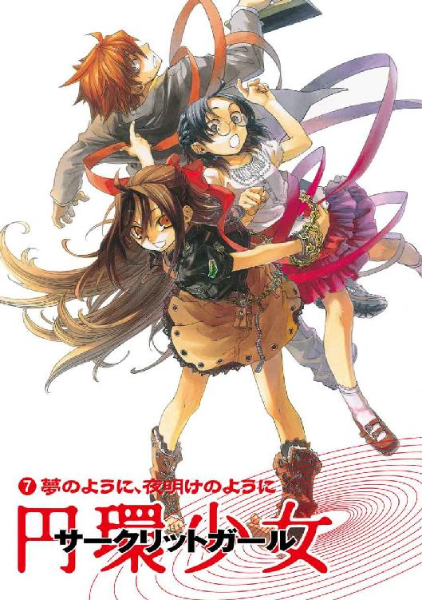
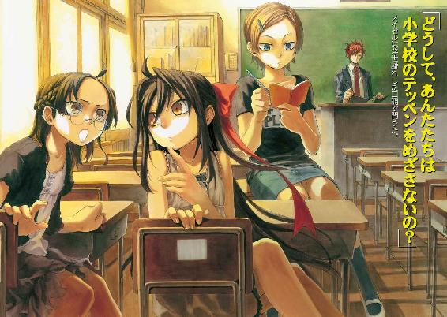
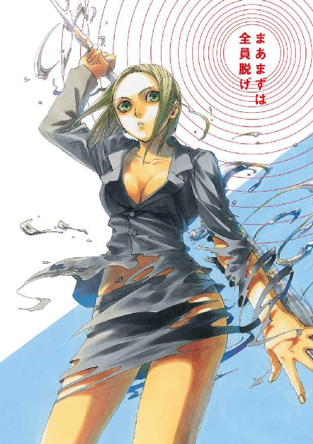
円環少女
⑦夢のように、夜明けのように
長谷敏司

角川スニーカー文庫
本作品の全部または一部を無断で複製、転載、配信、送信したり、ホームページ上に転載することを禁止します。また、本作品の内容を無断で改変、改ざん等を行うことも禁止します。
本作品購入時にご承諾いただいた規約により、有償・無償にかかわらず本作品を第三者に譲渡することはできません。
本作品を示すサムネイルなどのイメージ画像は、再ダウンロード時に予告なく変更される場合があります。
本作品は縦書きでレイアウトされています。
また、ご覧になるリーディングシステムにより、表示の差が認められることがあります。
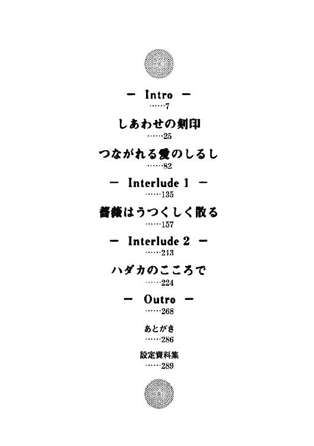
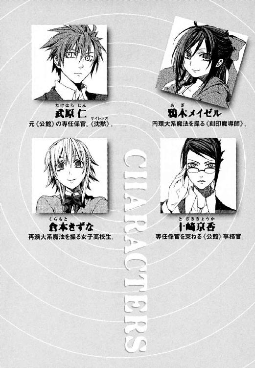
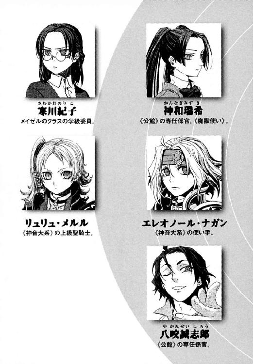
武原仁は、最近、休日をむかえるのが憂鬱だった。まわりに、人がいなくなるからだ。
「望んで勝手に踏みこんだ結果でも、きっついよなあ......」
仁は、日曜日のあかるい午後の街をアパートの窓からぼんやりとながめる。
誰にも聞かれていないからこそ、口をひらくとグチやため息が漏れた。二十四歳のいいおとなだから、仁は、それが恥ずかしくて煙草をくわえた。
九月もなかばになったが、昼間はまだ蟬の声がちらほら聞こえた。開け放した窓からは陽光が強く照りつけて畳を炙る。暑さに汗をたらしながら、仁は、夏の間は部屋を閉め切ってクーラーをかけていたことを思い出した。
「そういえば、今年の夏は、けっこうカーテン閉めっぱなしにしてたんだな」
彼の妹、武原舞花は、六年近く前に死んだ。その死体の断片が、お盆前に迷いこんできたのだ。白金色に光る《泡》となった断片を守りたくて、ずっと部屋を閉め切っていた。
──真夏のあの日々からまだ一ヶ月だ。だが、すべては〝変わって〟しまった。
仁たちが住むこの世界には、昔からたくさんの魔法使いがやってきている。魔法が実在することを知る者は、すくない。現代では、歴史の表舞台から追いやられているためだ。だが、不可思議な奇蹟をもって神話や伝説のもとになった来訪者は、今も数多くこの世界に滞在している。
だから日本政府は、魔導師公館という組織を秘密裏に作った。関係者に《公館》と呼ばれるその組織には、おおきくふたつの仕事がある。ひとつは、魔法が存在する多数の異世界群で最大の政治勢力──《協会》と交渉すること。そして、法律を無視する魔法使いたちから、この国の治安を守ることだ。
仁は、一ヶ月前まで、《公館》で専任係官という治安管理の専門家としてはたらいていた。
窓から見下ろしていると、重機を積んだトラックが道路を行き過ぎた。
「工事はまだまだ終わらずか......。年末くらいには片付いてりゃいいけどな」
お盆時期、この東京では、ほとんどの者が真実を知らない核テロ事件があった。行き交うトラックは、核テロの戦場となった地下迷路をコンクリートで埋めるためのものだ。事件の中、この街の地下深くで核爆弾が爆発した。その放射能汚染が地上へ広がらないよう、政府ぐるみの工作がおこなわれているのだ。
そして、仁は、《公館》を解雇されて、ひとりになった。核テロ事件で、専任係官としてふさわしくない行動をとったためだ。公館本館は、このアパートから、気まずくなるほど近所にあった。だから、近所を歩くにも気をつかう日々が続いていた。
だからこそ、週末に孤独になることが、彼にはこたえた。開放的な薄着の人々が行き交う道路を二階の窓から見おろす。近所の小学生が、大量の買い物袋を抱えて家族と歩いていた。
────カン、カン、と、誰かがアパートの階段を二階へとのぼってきた。
仁は、自然に、立ちあがると窓のカーテンを閉めた。階段をのぼった〝誰か〟が、彼の部屋のドアの前へやって来たからだ。
《公館》の専任係官は、よく魔法使いの恨みを買う仕事だった。だから仁も、襲撃にそなえて最低限度の武器を部屋に置いていた。壁にかけたカレンダーの裏に留めたホルスターから、刃渡り二十センチの大型ナイフを引き抜く。そのまま逆手ににぎった刀身を右腕の陰に隠して、ドアを開けた。
宅配会社の制服を着た男が、虎にでも出会ったように顔色を失った。
「ひっ、あ、......あ...宅配です......あの」
「いや......なんか......すまん。サインって、左手で書いてもいいんだっけ？」
ナイフを隠したまま、仁は借りたボールペンで名前を書いた。
届け物の中身は写真だった。依頼主の名は十崎京香、仁の幼なじみで《公館》の上司だった女性だ。ここから数分の場所にある京香の家に、彼の守りたいものはあった。誇り高いちいさな魔女、鴉木メイゼルが、そこに居候していた。倉本きずながいた。
おびえたまま宅配の男が去った。
「......俺が裏切ったわけだしな。まあ京香姉ちゃんも、そりゃもう俺とは顔合わせたくないよな」
仁は幼なじみからの封筒をあけた。中身は、デジタルカメラで撮った写真を印刷したものだった。
仁は、立ち尽くしたまま体が動かなくなった。なにもことばにならなかった。
「──────ああ、ああ────」
重なった写真の一枚目に、彼にとっては忘れ得ない黒髪の少女がいた。魔法使いたちには、罪人をこの世界へ追放して《協会》の敵を百人斃すまで自由を奪う、刻印魔導師という極刑がある。そして《公館》の専任係官は、《協会》から、この国の治安を守る道具として彼女たちをさげわたされるのだ。鴉木メイゼルは、史上最年少の刻印魔導師だった。
長い黒髪にリボンを結んだ、あどけない小悪魔が写真の中で笑っていた。あめ色の瞳を楽しそうに輝かせ、華奢なその体を上品な化粧着に包んでいた。
十崎家の食卓が、そこにあった。
写真になった思い出は、かえって新鮮なほどあざやかだった。だから、永遠に失ってしまったもののあたたかさが彼の胸によみがえった。
仁は携帯電話を確かめた。もう一週間も、メイゼルからメールも電話も入っていなかった。
「そうだよな。刻印魔導師を続けることにあんなにこだわってたおまえが、俺に助け、求めるはずないよな」
おとなの彼が泣きたくなるほど、ちいさな魔女は潔癖だ。
一枚ずつ、仁は送りつけられた写真をめくる。いつの間にこんなに溜まっていたのか、五月に仁がメイゼルと出会ってから十崎家で撮ったものばかりだ。かけがえのない日々の断片を、居候先の家主だった十崎京香も持てあましたように思えた。
もっとも新しい写真には、夏休みの八月十二日の日付が入っていた。核テロ事件の合間に、メイゼルの同級生の寒川紀子が十崎家に遊びにきたときのものだった。
この写真が撮られた次の日、ちいさなメイゼルは狙撃され瀕死の重傷を負った。そして、少女を治療することと引き換えに、《協会》は仁をあやつろうとした。仁は信念と組織を天秤にかけて、選択した。仁は持ち場を離れ、《公館》を解雇された。
後悔はしていなかった。だが、先の見通しが立たない行動ではあった。彼はまさに現在、身の振りどころがない。彼がひとりなのは、本当はきっとあった最良の手段を発見できなかったことへの、報いだ。
ちいさな魔女は、仁から別の専任係官へと監督を移された。彼がどんなに焦っても、事態には関われなかった。魔法使いに関する情報すら、《公館》や組織に近づかずには入手できないのだ。
現実はどこまでも残酷だ。環境が変わるだけで、覚悟すら日々ゆるんでゆく。寝て起きて食っての繰り返しの中で、すべてが生活に拡散するようだった。
夏は終わり、すこしずつ時間は過去へと流れ去ってゆく。
仁は、強い昼の陽光の下、何度も写真を一枚ずつ確かめ直した。ちいさなメイゼルが笑っていた。倉本きずなが、おかずを並べたお盆を運びながらはにかんでいた。家に帰ってだらけモードの十崎京香がビールを手酌でついでいた。
そして、仁が写真の束をテーブルに置いたとき、アパートのドアが勢いよく開いた。
写真ではない、本物の思い出がそこにいた。
「武原さん！ かくまってください!!」
肩まである栗色の髪を揺らして、彼女は右手で思い切りドアを開いていた。そこにいたのはまだ高校生の女の子だ。
息を乱した彼女の、キャミソールごしに浮き出た胸のきれいな輪郭が仁の目に焼きつくようだった。暑い中を歩いてきたのか、首筋の肌が汗で光っていた。倉本きずなが、トランクひとつ引きずってやってきたのだ。
なつかしさで、仁の声はうわずっていた。
「......きずなちゃん。なんでだ......。京香んところ出て、しばらく神和のところにやっかいになるんじゃなかったのか？」
倉本きずなは、メイゼルといっしょに十崎家に居候していた、仁の心残りのひとつだ。彼女の環境も、仁が《公館》を解雇されて変わった。京香が激務で十崎家に帰れなくなり、ちいさなメイゼルも次の専任係官の邸宅へ引き取られたからだ。無人の十崎家にきずなひとり残しておくわけにはいかなくなった。だから、きずなは、友だち──《公館》の専任係官でもある神和瑞希の家に仮住まいさせてもらっていた。
きずなは、深い夜の濃紺色をした瞳をそらした。
「えーと、あの......神和さんのところにいると、わたし、ヨメをとらされるんです」
「まあ、立ち話もなんだし、中で座って話そう」
仁がトランクを部屋に引き入れる。きずなが、勝手知ったる冷蔵庫から麦茶を出して、仁のぶんと二杯コップに注いだ。
居間のちゃぶ台を囲むと、きずなは彼のアパートの風景に自然とはまっていた。彼女は、彼が《公館》をクビになってからも何度かごはんを作りに来てくれていたのだ。この麦茶も、水曜日の放課後に彼女が作ってくれたものだった。
「あの、武原さん。前にメイゼルちゃんが十崎さんの家から家出したときのこと、覚えてますか」
きずなは、それだけ言うとため息をついた。相似大系の）超高位魔導師《神に近き者》グレンがこの世界に襲来したとき、メイゼルは仁の前から姿を消した。
「あのときは、メイゼル、神和の家に転がりこんだんだったな。なつかしいな。きずなちゃんに、神和家と話をつけてもらったんだったな」
「えーと、あのときなんですけど、『神和家の事情だから、ただの友だちに口をはさまれる筋合いはない』って、最初はダメだったんですよ。だから、神和さんがご家族にウソをついたんです。......わたしたちが、付き合ってるって」
「............えーと、あー？」
「武原さんが言いたいことはわかります。わたし女の子ですしっ。だから、神和さんとだと、女の子どうしで付き合ってることになって、話がおかしくなるじゃないですか。だから神和さんが、『これは倉本きずなじゃなくて、双子のお兄さんの倉本きずおです』って、ご家族をごまかしたんです......」
「冷静になれきずなちゃん。今の時点で話は十分おかしい」
仁が目を閉じても、きずなからは女の子らしい甘い匂いがするのだ。仁は、気恥ずかしくなって汗をかいたコップをつかんだ。きずなも、疲れ切ったように一気にコップのお茶を飲み干した。
「......でも、神和さん家では、わたしは今でも倉本きずおなんです」
「────え？」
仁は、わけがわからなすぎて、異次元に放りこまれた気分になった。
「神和さんって、十崎さん家によくごはん食べに来たり、泊まってくこととかあったじゃないですか。............神和さん家では、あれ、嫁入り前の娘が、親公認で恋人のところに外泊してるつもりだったみたいなんですよね......」
お人好しなきずなが、しゃべりながら放心していた。
「きずなちゃん。神和のところで、何があった？ 何を見た？」
「神和さんが......花嫁修業をしてるんです」
神和瑞希は、現在《公館》でもっとも戦果をあげている狩人だ。仁には、神和が料理をしたり身の回りの世話をしたりしているところを想像もできなかった。
「わたし、ムコ殿って呼ばれるんです。『よくもうちの娘をキズモノにしたな』って、家の人、みんな目が笑ってないんです！ これやっぱりおかしいですよね！ わたしの自意識過剰じゃないですよね！」
膝で這って、きずなが仁との距離を詰める。
「わたし、あそこにいたら責任とらされちゃう！」
「男が言うと外道だけど、女の子だとほほえましいなあ」
きずなが、思わず仁がこぼしてしまった本音に、青くなった。
「いや、心配ないよ、追い出さないから。ほとぼりが冷めるまで、うちに避難しとくか？」
「いいんですか！ いいですね。わかりました。しばらくごやっかいになります」
「......きずなちゃん。......本当にこわかったんだな............」
せっぱ詰まっていたきずなが、はじめてほっとした顔でぺこりとおじぎした。たれ気味のやさしい目をした彼女が笑うと、仁まで胸がほっこりとあたたかくなった。
「......それでなんですけど。あ、あの、夏にお邪魔してたお部屋、ちょっとの間、かりていいですか？」
窓に吊した風鈴がちりんと鳴った。その音で、顔を見合わせたままふたりして沈黙していたのだと気付いた。
「そうだな。夏にきずなちゃんがメイゼルと来てたときから、そのまんまだから、好きに使ってくれ」
ひとり暮らしの仁のところにきずなが転がりこんでくるということは、彼女とふたりきりだということだ。その事実を、おたがい意識しまいとするかのように目をそらした。
「なんか......今日、暑いですね」
きずなが、茹だるように首筋までまっ赤になってうつむいた。仁は、首筋と細い鎖骨が視界にはいってしまって、うろたえた。自然に、きずなの、母性的であり女らしくもある胸のふくらみまで視線が落ちてしまった。
そのとき、また仁の部屋のドアが思い切り開いた。やましい気分になっていた彼の背筋が、びくりと震えた。
「き───ず────なぁ────」
彫像のように顔も体も完璧に整いすぎて現実離れした少女が、ドアによりかかっていた。白い肌はまったく日焼けしていないが、目元は憔悴していた。これが、きずなの同級生で《公館》の専任係官でもある天性の狩人、神和瑞希だ。
「あ、神和さん」
きずなはというと、座布団にでんと正座したまま首だけで振り返った。このなりゆきでも落ち着いていられるのが、男には理解できない〝女の子〟だった。
「き──ず───ばぁ───」
神和瑞希が、作り物めいて端整な顔を赤ん坊のようにゆがめていた。仁は緊張した。《公館》は、犯罪をおかした魔法使いを裁判なしで処分する、人権概念がなかった旧時代のルールで動く組織だ。そこを解雇された者は、伝統として敵と認識される。神和瑞希が《公館》の専任係官である以上、攻撃されても不思議ではなかった。
「神和か」
だが、瑞希の興味は仁にはなかった。花嫁修業の成果か、彼女は靴を脱いで上品にそろえてから部屋に入ってきた。頭の左右でポニーテールに結んだ長い黒髪が、ずるずる床に引きずられていた。身も世もなく泣いていた。
「き──ず──な───。......家から......、婿は......自分で...つれもどせ......言われた」
神和家は、平安時代から一千年間《協会》に関わり、魔法使い狩りにたずさわった家だ。その浮世離れした頭の悪さは、ときどき予想を超える。
「婿っておまえ、男に逃げられたことになってるのか」
「逃げられで......ない......神和の......女は......がりうどだがら...おどごもづがまえるっで......」
「おまえその男は現実にいない人間だぞ」
きずなが、ぽんと手をたたいた。
「そうだ！ 倉本きずおは、外国まで自分を見直す旅に出たというのはどうでしょうか」
だまされやすく人がよいきずなが、今日だけは非情だった。よほど婿入りしたくないようだった。
「それで双子のお兄さんのきずおは、どこ行ったんだ？」
「......い、インドとか......どうですか？」
「人生見つめ直すにはインドだな」
「そういうわけで、倉本きずおはインドへ行きました」
瑞希が力尽きたように畳にへたりこんだ。
「......きずなは......インド............行かない？」
「わたしは人生見つめ直すより、ちゃんと高校三年生になれるかのほうが心配だから」
女子高生たちの会話の頭の悪さに、聞いている仁の頭がくらくらした。
「......きずおは......インド......行ったで、いいから......。......きずなは......神和の...家に......帰る？」
「あのね、神和さんのところに行って、責任取れって言われて思ったんだよ。わたしが、いたい場所はここなんだよ。わたし、ここにいたい」
きずなは、腹を決めたらガンガン突っこむ子だったらしい。瑞希が、よほどショックだったか、床に頭突きするように倒れた。
瑞希が、黒髪を蛇のように畳にのたくらせて、死ねとばかりに仁をにらみつけた。専任係官である瑞希が彼を本当に殺しにかからないのは、きずなが怒るからだ。
そして、瑞希が狩人の目つきで、はっきりと声を発した。
「因達羅......」
最後の客が仁のアパートのドアを開けたのは、そのときだった。女子高生ふたりとはちがって、寂しい金属音をたてたドアの陰から部屋をのぞいていた。一四〇センチも身長がないちいさな体をさらに縮めて、少女は立っていた。送られてきた写真と同じ、長い黒髪をきれいなリボンで結んで。
鴉木メイゼルがそこにいた。メイゼルは、電気をあつかうことを得意とする円環大系の魔法使いだ。幾多の雷神の原形になったこの魔法の使い手を、神和家では因達羅と呼ぶのだ。
仁からメイゼルの管理を引き継いだ専任係官は、この神和瑞希だ。
「因達羅......。そいつ......あなたが、略奪......する」
彼が、九年間すごした《公館》を飛び出して助けた少女は、またすこし背がのびた。袖無しのワンピースの下で、まだ性別を匂わせない体が、緊張した細かい呼吸をしていた。小学生のメイゼルが、仁と目が合うと、負けないとばかりにきっと正面から見返してきた。
仁ははじめてこのちいさな魔女と会ったとき、こんな子どもを戦いで死なせてはならないと思った。普通の子どもみたいに、しあわせに暮らさせてやりたいと願った。その気持ちは今も変わらなかった。
だから、メイゼルが刻印魔導師として戦い続けることを選び、仁との道が分かれても、気に掛けずにいられなかった。
「ちょっと顔色、青白くないか。ちゃんとメシ食ってるか？」
だが、少女は写真には写らない誇りに瞳を輝かせ、ひらべったい胸に手を当てたのだ。
「せんせ、小学校でずっと会ってるでしょ。あたしと一日会わないだけで、もうさびしくなったの？」
†
武原仁のアパートから歩いて五分とかからない場所に、十崎京香の自宅はある。
京香の父、十崎理五郎が《公館》で事務官をしていたから、この二階建ての家は公館本館からも近い。父と同じ魔導師公館の事務官をしている彼女には、便利な住処だった。
問題は、彼女にとって思い出が深く染みつきすぎていることだった。二十五年をすごしたここには、両親の気配があった。家ぐるみの付き合いだった幼なじみの、武原仁や妹の武原舞花がいた。ちいさなときは広いと信じていた家が、高校ぐらいのときはせまく思えた。だが、すべてが去ると、掘りごたつを中心にすえた居間の風景が、ひどくつらかった。
それは彼女にとって、確かな変化だった。
「本当は、もっとはやく整理するべきだったのよねー」
ひとりで言ってみて、むなしくて京香はソファに横になった。ソファの革の張り地には、フォークを刺したようなちいさな穴があいていた。なおらない傷になりそうだった。思い切り手を伸ばして、掘りごたつのテーブルに出しっぱなしだった小型のデジタルカメラをつかんだ。昨日、店でプリントした写真を、仁のアパートまで宅配便で送ったのだ。
「もうそろそろ、届いてるかなー。あー、料金請求すればよかったかなー」
カメラについている液晶画面に、記録されていた写真を一枚ずつ呼び出す。
ちいさなメイゼルが写っていた。
京香がこの家に彼女を引き取ったのは、魔導師公館がれっきとした役所だからだ。仕事は犯罪魔導師の処分でも、公館職員は普通の公務員だ。この国のためと言い訳をしようが、仕事で子どもを死なせては士気がガタ落ちする。百人討伐して生き残った刻印魔導師などゼロなのだ。いつか死ぬメイゼルの前で、面倒を見てあげるよいおとなでいたかった《公館》の偽善だった。
だから、武原仁に少女の監督を押しつけた。あげく、教員免許すら持っていない仁を小学校のニセ教師として赴任までさせた。打てる手は打ったと思いたかったのだ。
そして結局、京香は、その欺瞞がもとで幼なじみの仁を失った。
「ばっかよね......適当にやればよかったのよ。仁って、もうさ......生き残ったって言っても、ほとんど死んだも同然なのよ」
京香は、ソファから起きあがって台所へ向かった。ビールを吞みたくなったのだ。昔は、成長するごとに家がせまくなる気がしていた。それが、おとなになったらかえってガランとして広くなっていて、さびしさが骨身に堪えた。
冷蔵庫から缶ビールを二本取ると、グラスといっしょに抱えて戻った。
激務の中、ひさしぶりにあいた日曜日の昼をつぶすには最悪の方法だった。
プルリングを引いて缶を開けると、コップにつぐのが面倒になって直に一気吞みした。腹から体が熱くなって、叩きつけるよう空の缶を掘りごたつに置いた。
「今の仁ってさ、武器がなくなったら再調達なんてできないし、傷を負ったら治療できないしー、追われる状況になったら安全に休める場所すらないしー。......だいたい、事前に敵や状況を知っとく最低限度の情報網もないんだよー。私たち《公館》のスタッフが掩護しなきゃ、専任係官が生き残るの無理なんだよ......このバカ！」
ひとりだから、どこまでも愚痴っぽくなっていた。
京香は知っていた。事件に巻きこまれたら、真っ先に消えるのは武原仁だ。《公館》で専任係官を指揮するまとめ役を負う京香は知っていた。それでも幼なじみは投げ出さないのだと、幼稚園にあがる前から彼と付き合っているから知っている。
デジタルカメラを操作する。カメラには、いろいろな事情で十崎家にやってきた魔法使いや、メイゼルの小学校の友だちが写っていた。京香が知らなかった思い出とあたたかな情愛が、何枚も何枚も撮影されていた。
十崎家には、幼なじみの武原仁が毎日のようにやってきていた。なのに彼だけはほとんど写っていない。つまり、仁が撮ってやった写真なのだ。
「ほんと、ばっかよね......。仁ちゃん、ぜんぜん自分は写ってないじゃないよー。自分のこと、またどうでもいいつもりだったんじゃないの。そんなじゃ、近くにいる人間がつらいってのにさー」
塩辛いおかずを食べた後、大量のご飯をかきこむように、京香はビールをのどに流しこんだ。
半分以上飲んでしまった後で、二本目の缶を自分が開けたのだと気付いた。
京香のまわりはいつだって変化していた。だが、これから先、彼女の道に幼なじみの人生が交わることはまずないとだけはわかっていた。
写真を送ると、十崎家の台所を使うきずなの写真が出てきた。エプロン姿が似合いすぎる女子高生と、官僚になった京香は、実際には立場が似ていた。
だからこそ、ずいぶん長くその写真から視線が離れなかった。きずなが輝いて見えて、この写真を仁が撮ったのならと思うと悔しかったのだ。
「......あー、あの指輪、いい機会だしそろそろ整理しなきゃだ」
京香は、酔いが醒めてしまって立ちあがった。メイゼルと同じくらいのころ、仁からおもちゃの指輪をもらったことを思い出した。妹にけしかけられて小物屋で買ったという、台座がプラスチックではないのが取り柄みたいな指輪だ。はめる機会などなかったのに手放す機会もなくて、引き出しのこやしになっていたのだ。
「仁ちゃんってバカだよねー。本当にさ......本当にさ、何も変わらずになんていられると思う？」
彼女は、広い十崎家にひとりきりだった。
この秋で、父と母が亡くなってから四年目に入る。その間、十崎家の居間に家族のにおいはなかった。メイゼルたちがここにいた三ヶ月ほどの間だけ、なつかしいぬくもりが戻ってきた。この世界の人間と異世界人の魔法使いとの間に、信頼関係はほとんどない。それでも、たしかにこの家に人と人とのつながりはあった。
そして京香は、ふと、あの後悔の多い夏休みの前のことを思い出した。
倉本きずなが歴史改変をたくらむ魔法使いたちに狙われたバベル事件が終わって、彼女が殺人的に忙しかったころだ。そう、浅利ケイツが脱獄する直前の、六月末だった。一組の家族と、奇妙な魔法使いが、この家をおとずれたのだ────。
夜は魔法使いの時間だ。
だから、静かな川面を蹴って、下着姿の若い女性が全速力で駆けてゆく。
武原仁は、全力疾走しながら、このあまりにおかしな状況を整理しようと試みた。
今は深夜十一時。若い女が、多摩川の川幅の広い水面を蹴って走っている。ガーターベルトで留めた黒いストッキングの脚線美が魅力的だった。だが、水上に立てるのは下着姿だからではもちろんない。女は魔法使いなのだ。
雷を投げ人間をカエルに変える神話やおとぎ話の主人公たちは、現代も異世界からこの世界を訪れ続けている。そして、異世界人だからこの世界の法など守らず、平気で犯罪に手を染める。
だから仁は、堤防伝いに、その黒い下着の女性を全身汗だくで追っている。実在すらおおっぴらになっていない魔法使いによる犯罪を、取り締まること。それが、文化庁の非公然機関《魔導師公館》に所属する、対魔法使い事件の専任係官の仕事だった。
「......ぁはははは」
女の笑い声が、直線距離で十メートルほど離れた仁にまで聞こえてきた。墨を流したように真っ暗な水面を走る女へと懐中電灯を向ける。光に照らされた女の体は、血まみれだった。
この魔女は三時間前の六月二十五日の午後八時に、閉店後の蕎麦屋へアルバイトの面接へ行った。そして、そこで店長と従業員三名をナイフで惨殺した。返り血を浴びた衣服を脱ぎ捨て、犯人は下着のままで逃走。そして今、仁が多摩川の下流へ向かって彼女を追い詰めつつある。
「せんせ、あの子のおしり見すぎだわ！」
揺れるガーターベルトの尻を照らし出していた懐中電灯の光が、唐突に消えた。
「見てねえ！」
「あたしのおしりじゃ、こんなかぶりつきそうな目、しないくせに。せんせの変態」
仁を責めるかわいらしい声は、彼のおなかの高さからあがっていた。見下ろすと長い黒髪とリボンをなびかせる、身長百三十一センチの女の子がいた。瀟洒なサンダルの下に磁力のレールをつくって、スケートさながら優雅に地面をすべっている。この恨めしげな表情の鴉木メイゼルも魔法使いなのだ。
「......おまえにそんな目をしてたら大問題だよ」
仁は、殺人犯を追いながらの軽口をたしなめなかった。鴉木メイゼルは小学六年生だ。本来は戦いに加わるなどもってのほかの、守られるべき子どもなのだ。
魔法使いたちの世界には、罪人をこの世界に追放して戦わせる、刻印魔導師という託神裁判の極刑がある。それは《協会》と呼ばれるシステムの敵を百人斃すまで自由になれない、達成者ゼロの死の重罰だ。武原仁たち専任係官は、治安維持の職務のため、使い捨ての道具としてその刻印魔導師を魔法世界から与えられる。彼らが追う魔女も、元はメイゼルと同じ刻印魔導師だ。
「せんせ、あの子のこと、足止めするんでしょ？」
少女が、魔法で地面をスケートしながら、鉄パイプを手わたしてきた。
「ありがとな。できるだけ、傷つけないように逮捕するよ」
仁は走りながら受け取る。狙いは、街の明かりが星のように落ちた寂しい水面の、逃亡者だ。
メイゼルの足元に、あわい光の魔法陣が展開していた。
「いいわ。投げて」
仁は、槍投げの要領で堤防からパイプを投擲する。それをぶつけるためではない。
金属管が狙いどおり女の足元の川面に落ちた瞬間、ばぢりと鈍い破裂音が響いた。感電した女が、足をもつれさせた。水面に高圧電流を流して魚を感電させる漁法と同じ原理だ。鴉木メイゼルのあやつる魔法は電子の操作を得意とする。仁の手を離れ空中を飛翔している間に、少女が金属管に強い電気を帯びさせたのだ。
だが、暗い川に女が倒れこもうとしたそのとき、猛烈にイヤな予感がした。
「伏せろ！」
仁は、キャミソールにデニムのミニスカートの、小学生の体を横抱きにして地面に倒れこむ。次の瞬間、川面の魔女から投擲された金属針が、弾丸のように彼らの真上を抜けて飛び去った。
背中と肩は盛大にすりむき摩擦熱でやけどをし、顔にはメイゼルの長い黒髪がかぶさってきて窒息しそうになる。一流れの動作の中で、仁は少女を抱えたまま立ちあがる。追跡対象の魔女、揚田クラリスは、この隙に闇へ逃げこもうともせず、それどころか距離をつめて突っこんで────。
仁はスラックスの内側に隠したホルスターからナイフを抜いて、一挙動で投げた。今度は、確実に動きを止める一撃だ。八メートル向こうの女の下着の肩紐を断ち切って、ナイフは右肩に根元まで突き立った。魔法を維持できなくなった魔女の体が音をたてて川に沈んだ。
「終わったよ」
「え？ もう？」
彼の胸の中で、メイゼルが顔をあげる。敵の攻撃をかわしてからせいぜい十秒、真っ暗な水面にはもはや水しぶきひとつ残ってはいない。
重傷だが致命傷ではない。魔女は、汎用性としぶとさに定評がある完全大系という魔法を使った。川を走るなら水中呼吸もやると見て、まずはメイゼルを立たせてやった。彼女はほんの数日前、《バベルの塔》をめぐる戦いで内臓を破裂させられたばかりなのだ。
彼女が、膝を払って前かがみになった仁の口元に、愛らしい指をのばしてきた。
「せんせ、あたしのリボン、食べちゃってるわ」
さっき転がったとき、彼が口の端に少女のリボンをくわえてほどいてしまったのだ。長い髪をおろした彼女が、夜の妖精のように微笑む。月光の下、その頰はいまだ桜色に上気して、乱れたキャミソールの肩からむき出しになった肌は夏の果実のようにつややかだ。
「こういうたくましいときのせんせって、世界で三番目に素敵よ」
「あはは、まあ、三番か......」
シュッと小気味よい音をたて、彼女が黄色のリボンを結びなおす。その両手を頭の後ろに回した仕草を妙におとなっぽく感じて、気恥ずかしくなった。
「二番目に素敵なのは、小学校で、なんにもうまくできなくて、あたふたしてるせんせ」
仁は、メイゼルの最低限の教育と監督のため、小学校で先生までしている。教員免許を持っていないからニセ教師なのだが、いろいろあって、そういう羽目になった。
「一番も知りたい？」
そして小学六年生の魔女は、魂を持ってゆかれそうなほど澄んだ瞳で、真夜中の太陽みたいに笑うのだ。
「一番大スキなのは......。いつかあたしに心の底から屈服して、くやしいのがうれしい目であたしを見あげてるせんせ」
どんな未来を想像したか、キャミソールの下の背筋を甘く震わせ、両手で熱っぽい吐息を隠す。几帳面で責任感の強い鴉木メイゼルという少女に、ひとつ問題があるとしたら、嗜好が嗜虐的にゆがんでいることだ。
「............まあ、それはいいとして、ちょっと様子を見に潜るから、水面に気をつけといてくれ」
「そうね。さすがにこれで逃げられてたら間抜けだわ......。あ!? 今、助けてくれたときせんせがスリむいた傷、魔法でなおしたげるから、かさぶた剝がしていい？」
スラックスを引っ張って仁に視線を要求したメイゼルは、心から楽しそうだった。これがあどけない魔女の、恐怖をやわらげるガス抜きか、ただの性癖か、仁は知らない。
ジャケットと靴だけを脱いで、仁は防水の懐中電灯を片手に夜の多摩川に飛びこむ。六月末の水温はまだ低い。暗い水は、潜ってライトをつけても、汚れた緑色は数メートル先までしか見とおせなかった。堤防からはわからなかったが、緑の葦の太い茎が密生していて、水中はまっすぐ泳ぐことすらままならなかった。
汚い川に潜ったまま、植物に引っかかったビニール袋や空き缶をよけ、仁は追っていた魔女をさがす。揚田クラリスの書類上の年齢は二十二歳、仁より二つ年下だ。刻印魔導師の管理施設で二年間生活し、精神が安定しているとして一般社会への順応訓練を許可された。そのわずか五日後、魔女は飲食店で殺人を犯した。この世界で犯罪に手を染めた刻印魔導師は、即座に〝敵〟とみなされて狩られる。犯人は、逮捕されて魔法世界へ引き渡されるか、戦闘のすえ殺されるかだ。仁は、川の水に体温を奪われこごえながら、メイゼルを追わねばならなくなる日が来ないよう祈った。冷たく静かな川底を泳いでいると、流れる膨大な水が彼らを取り巻く闇そのものに思えてきた。
懐中電灯を消せば即座に真っ暗になる夜の水中に、仁のナイフを肩に突き立てたまま、魔女はいた。
まるで人魚だ。
枯れた葦の茎にからまった若くしなやかな体が、水底の藻になったようにゆうらりと揺れていた。長かった巻き毛が、川の流れになびいている。
豊かな胸を覆っていた下着は外れ、なくなっていた。だが、にわかに赤黒く黒ずんだ水ごしに、仁に劣情をおよぼさせるようなものは何もない。左の乳房から心臓を貫いて、明らかに致命傷とわかる大穴が開いていたのだ。
水が唐突に、彼の体にからみついてきた気がした。何者かから魔法攻撃を受けたわけではない。せいぜい三分前は確実に生きていた魔女の無惨な姿に、たぶん仁の力が抜けたのだ。
魔法での偽装を疑いつつも、仁は近づいて血の気がうせた犯罪魔導師の首筋に指を当てる。頸動脈に反応は無い。心臓が砕け散っているのだから当然だ。胸にぽっかり空いた大穴に早くもはいりこんでいた小さな魚が一匹、驚いて逃げ去った。女は、死んでいた。
死因を確かめるため、こんな状態で息ひとつ乱さない自分に呆れながらも、死体の各部を検分する。女の右手が血まみれだった。そして左胸の致命傷は、懐中電灯を当ててよく見ると、肋骨が内側からの強い圧力で折れていた。魔法で左肺を内側から破裂させたのだ。まず即死。水底に沈んだ後の時間の短さと右手の血からみて、おそらく自殺だった。
そして、検分を終えた彼は、あまりに救いのない水の中から、空気を求めて深夜の川面に浮かびあがる。
「せんせー、どうだったのー？」
何も知らない少女が、堤防から声をかけてきた。二ヶ月前この世界に堕とされ、過酷な戦いに立ち向かう彼女は、まだひとりの敵も〝殺して〟はいない。
仁は、そのあどけない声に、答えを返せなかった。やり場のない怒りがこみあげて、ことばにできなかったのだ。
死んだ魔女の青白い顔が、命をみずから捨てたというのに、救われたように微笑んでいたからだ。
†
「こんな話があるのを、知ってるか？ 一八七二年の十二月に、一ヶ月前出航したマリー・セレスト号が大西洋を漂流しているのを、ある船が発見したんだ。だが、船員たちが乗りこんで中を確認すると、そこには誰もいなかった。
漂流船の乗員は、煙みたいに消えていたんだ。なのに、マリー・セレスト号の、船長室にあった朝食は食べかけで温かかった。コーヒーは今までそこに人がいたように湯気を立てていて、調理室では火にかけたまま鍋が煮立ってた。船員の部屋では焼いた鳥が食べかけだった。船長の航海日誌には、走り書きが残っていた」
水中の自殺から一夜明けた朝、武原仁は、さっきまで人がいたような工場事務所をながめていた。出納帳らしいバインダーは開いたままだった。触れると、コーヒーカップはまだ温かかった。工場奥のこぢんまりとした事務所の窓は古いすりガラスだ。まどろむ室内を揺り起こすように、やわらかい日光が差した。あるじたちだけが、ここにいない。古い木製の柱にハト時計が掛かっていた。現在、日曜日の朝の九時四十五分。
──幽霊船の謎を二十一世紀の日本に再現したかのように、百平米ほどの小さな工場は無人だった。
仁たちがここへ来たのは、昨夜魔女が自殺した地点から二百メートルしか離れていないからだ。工場の副社長、内藤サミュエルもまた刻印魔導師だ。地獄堕ちした罪人同士は、それぞれ別の魔法世界で極刑を受けた者だと知っているから、警戒して接触などとりあわない。だから、この近さが事件と無関係なのかしっておきたかったのだ。工場が無人になっているのは、完全に予想外だった。
「......でも、集団行方不明なんてアホな報告書を書いたら、京香にどやされるよな」
仁は、書類上、逃げたサミュエルを監督する立場だった。政府の方針で、《公館》は、社会に順応できそうな刻印魔導師を職につかせて普通に暮らさせている。政府には日本を刑場や刑務所にした覚えはないためだ。一般社会に出た刻印魔導師の管理は、書類上、仁の仕事だ。罪人にはおさなすぎるメイゼルを彼が保護することになったのも、その流れなのだ。
「大丈夫か？ 家で休んでいてもいいんだぞ」
メイゼルの目は、寝不足か、すこし充血していた。
「せんせ、ここの工場にいるのも、刻印魔導師なのよね？」
「そうだ」
それ以上どうなぐさめてやれるかわからず、仁は知っているうち一番いい可能性を教えてやった。
「こんなふうに魔法使いが行方をくらますこと自体は、ちょくちょくあるんだ。犯罪に関わっていたらそれなりの結果になるけど、そうでなきゃ内藤サミュエルは元の暮らしに戻れるよ」
メイゼルには名前も教えていない揚田クラリスの死で、少女が斃すべき敵はひとり減った。今頃はクラリスの管理者だった専任係官《鬼火》の配下が、彼女の身辺に何があったか調べあげている。そして彼女の人生は、一点ぶんの抹殺人数として以外かえりみられなくなる。
メイゼルが、子どもらしからぬ静かな目で事務所をながめる。
「そうね......。みんな、たいへんだものね」
「ここの刻印魔導師は、工場の社長の娘さんだったこの世界の女の人と結婚して、六人も子どもがいるんだ。事件に関わってたとしても、家族まで不幸にするようなことはしてないはずだよ」
救いのない運命を背負う少女が、ぽつりと彼にかえした。
「......なに言ってるの？ せんせ、これ、『夜逃げ』じゃないの？」
がらんとした事務所の中心で、仁の全身に冷や汗が一気に浮いた。言われてみれば工場ぐるみの夜逃げにも見えた。魔法使いだって、この世界で生きるにはお金が必要だ。借金だってするし、返せなければ最悪逃げる。
「まあたしかに刻印魔導師だって、働いてんだから解雇もあるし倒産もあるさ。だが、いや待て。むしろ落ち着け、俺」
「せんせ、この世界で生きのびたら刻印魔導師がしあわせだなんて、決まってないのよ。ここの魔法使いが、魔法でほしいものをつかめたのは、神話の大昔だけ。あとは好きな人に子どもあつかいされたり、思い通りにならないことばっかりだもの」
胸に手を当てて主張するメイゼルの視線に刺されて、冷や汗の温度がさらに下がった。事件と関係は薄いと考えながら、仁自身があの魔女の死と、サミュエルを頭のスミで結びつけていたのだ。短絡的な仁をあざ笑うように、工場の玄関でけたたましいブレーキ音が響いた。
ガラの悪い男が三人、大またにどやどや工場へと押し入って来た。どう見てもやくざ者だ。
「捜せ！ どこかに手がかりくらい残っとる」
「すっからかんかい！ 魔法みたいやな、ド畜生が!!」
基本的に戦うしか能のない武原仁は、悲劇か喜劇かのまっただなかに、呆然と立ち尽くす。全身をベルサーチのスーツでかためたやくざが、仁の肩になれなれしく、人を殴りなれた分厚い手を置いた。
「兄ちゃん。借りたもん返さんドアホをコンクリ詰めにしよ思うんやけど、知り合いやったら、どこ逃げたか知らんか」
†
魔法使いの世界には、なぜ魔法があるのか。魔法のもとになる〝何か〟があふれているのか。それとも、呪文を唱えれば〝何か〟が呼び出される仕組みがあるのか。──現実は、単純で身もふたもない。魔法使いたちは奇蹟なしでは存在できない世界の住人だから、魔法を使う。彼らの世界は自然秩序がどこかゆがんでいる。だから異世界にはそれぞれ、ゆがみを足がかりにした魔法があり、世界を支える神がいる。
我々のこの世界は、自然秩序にひずみがなく完全に均衡しているから、魔法も神もない。かわりに、安定したこの世界の住人は、観測した魔法を破壊してしまう。だから異世界人たちは、ここを奇蹟尽き果てる《地獄》と蔑む。そして、生涯魔法を見ない地獄人たちを、忌まわしい《悪鬼》とおそれるのだ。
悪鬼がどこにでもいる現代では、魔法は人目を盗んでこそこそ使わねば、観測され破壊される。だから、もはや魔法使いたちはおとぎ話の主役たちではない。人間は、額に汗して自分の問題を解決するしかないのだ。
「せんせ、どういうことか説明してくれない？」
つまり、玄関のドアを開けると、鴉木メイゼルが仁王立ちで立ちふさがっていた。
ここは《公館》の高級官僚、十崎京香の自宅だ。メイゼルは、罪人を集めた官舎が子どもには環境が悪すぎるため、ここで生活している。その彼女が、仁には見覚えのない子どもたちに、なすすべなくたかられていた。背中まであるきれいな黒髪は、引っ張られてぐしゃぐしゃだ。リボンも小さな手にほどかれて、いまやだらしなく垂れ下がっている。
「くらえ！」
幼稚園児くらいの男の子に、ふたりがかりで背中によじのぼられそうになったメイゼルが、悲鳴をあげて振り落とす。
「なにしてんの？ 無断であたしに痛いことしていいのは、せんせだけなのよ」
しなやかな人差し指で、悪ガキの額を一発ずつ弾く。双子の男の子たちが、痛かったのが信じられないとばかりに同じ仕草で目を見開き、大声で泣きはじめた。
「なっ、こんなことで泣くの？ もっと耐えてくやしがりなさい。ああもう、鼻水たらしてしかたないわね。なんなの!? あたしの服になにしようって......いやっ！ 鼻かんだ!!」
顔をまっ赤にした幼稚園児に、小さな魔女は逆襲されていた。大惨事だ。
仁がたずねる前に、廊下の奥からゆっくりした足音と、せかせかスリッパで床をこする音が近づいてきた。
「こら、何してんだ。お嬢さんに失礼すんなって言っただろ」
彫りが深い、地球基準で言うなら東南アジア系の顔立ちだった。今朝、見事な夜逃げをぶちかました工場経営者にして彼の管理下にある刻印魔導師、内藤サミュエルその人である。
昨夜の揚田クラリスとこの男のことを《公館》で調べていたせいで、もう夜も遅い午後十時半だった。仁は靴を脱ぐことも忘れて、蛙のように背中をまるめた中年男を呆然と見る。奥さんが続いて玄関に来て、不安げに仁の様子をうかがっていた。ぞろぞろと来るわ来るわ、小学生から乳飲み子まで六人もの小さな子どもが玄関に集まっていた。
内藤一家がここにいる理由がわからず、仁はまず、根本的な疑問をぶつけた。
「ちょっと待て。おまえら、自分ちの工場から夜逃げしたよな？」
当の刻印魔導師が、天然パーマの巻き毛の頭を深々とさげる。
「恥ずかしながら、借金こさえて工場にいられなくなっちまったんでさ」
内藤家の小学二年生の長男が、乳飲み子をかかえていた。その汚れたＴシャツを、小学校にあがったくらいの長女が握っていた。そのほつれたスカートに、さっきメイゼルによじのぼろうとした双子の次男と三男がしがみついている。幼稚園児らしい次女は半泣きで母親に助けを求めていいか様子をうかがっていた。六人の子どもが、十二個の瞳で仁を見あげていた。
「そんな顔するなよ！ 俺を見たってしょうがないだろ」
「だってそうでしょう？ 厚かましくても、ほかに頼るところがねえんです」
「私ん家の玄関でモメない」
十崎家の家主が、廊下の奥からようやくお出ましだった。十崎京香は、仁たち専任係官を束ねる高級官僚だ。そして、彼が昔から何をやってもかなわなかった、ひとつ年上のおさななじみでもある。ただし今は、魔導師公館で見せる氷の事務官の顔が詐欺のようなだらけっぷりだ。
「私が許可したのよ。職業上の義務はさておいてー。あれよ、最低限度の倫理として、子どもをほうりだすのはねー」
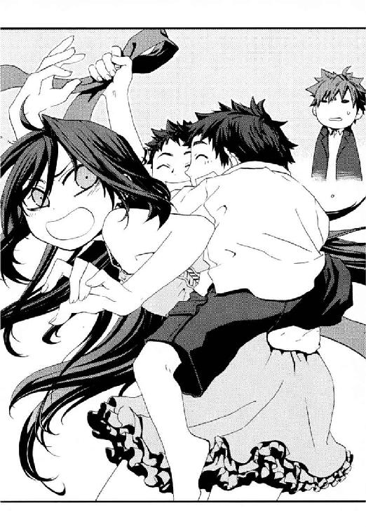
〝京香お姉ちゃん〟は、メイゼルをこの家で生活させはじめたときと同じことを言った。
仁たちは、魔法使いがこの国の治安を乱したらそれを排除する、番犬だ。人助け役ではない。だが、人を見捨てていいわけでもない。刻印魔導師を使い捨てている《公館》を頼るほど、サミュエルは追い詰められていた。気づかいひとつできなかった自分がかっこ悪かった。まだまだ情けない、武原仁は若造だ。
「十崎家も忙しくしてる家だから、いつまでもとは言いにくいんだけど、しばらくは我が家のつもりでくつろいでねー。サミュエルさんが南米から日本に帰国したとき付き合いのあった父も、生きてたら絶対そうしろって言ったと思いますしー」
口裏を合わせろと京香が目で合図してくる。《公館》は、日本人に見えない刻印魔導師のニセの身元をつくるとき、南米移民三世ということにして、二重国籍で日本国籍を持っていたことにしているのだ。
サミュエルが、《公館》の情なんて珍しいものを見たせいか、黒ずんだ両手で顔を覆った。その妻、内藤倫子が、夫の肩に顔をうずめてすすり泣いていた。弟と妹を守ろうと、仁のことをにらんでいた長男が、ただの不安な子どもに戻った。湿っぽさは妹と弟にも伝染し、長男が抱く赤ん坊まで火がついたようにむずかりだした。
泣き止まない六兄妹を引き連れて、内藤夫妻は奥へ戻っていった。
「いいんじゃない？ 内藤家の奥さんと子どもは、刻印魔導師とか《公館》のこと知らないみたいだしー。だいたい、仁のアパートじゃ、あの人数預かるのムリでしょ」
六月の間《公館》を振り回したバベル事件が終わって、すぐにこの揚田クラリスの殺人事件は起こった。対応で誰より忙しい京香が、それでも情を選んだのだ。気づかいを嚙み締める仁の鼻先に、揚げ物の香ばしいにおいが漂ってきた。
「あ、お帰りなさい、武原さん」
Ｔシャツにジーンズのラフな格好の上にエプロンをかけた女子高生、倉本きずなが、台所から廊下へ顔を出した。明るい色の髪を弾ませ、深い青の瞳をやさしく微笑ませている。二週間ほど前まで父親と暮らしていたきずなは、にぎやかなのがうれしいらしい。菜ばしを手に、まぶしそうに十崎家の小さなお客さんをながめていた。
「きずな、何してんの！ コンロの火!!」
「ふふーん。今日は、内藤さんの奥さんも台所にいるから、あわてなくてもいいのです」
きずながメイゼルのツッコミを受け流す。我が家のつもりで倫子夫人が、手伝ってくれているらしい。
「はい、みんなー。ごはんの前には、手を洗おうねー」
「「はーい」」
きずなの声に、さっきまで泣いていた子どもたちと、十崎京香までよい返事をして、洗面所へ行った。まるで幼稚園の先生と子どもだ。
「納得いかないわ！ どうしてきずなの言うことはあんなすなおに聞くの!?」
微笑ましく見ていると、ウェットティッシュで服についた鼻水を落とそうとがんばっていたメイゼルと目が合った。
「ほら、リボン結びなおしてやるから、こっち来いよ」
ただ発作的に、あの魔女の不可解な自殺がもう日常に埋没しかけている事実に、胸が詰まった。そして仁は、メイゼルが子どもらしくしている死から遠い時間が、ただ長く続いてほしいと願った。
「子どもたちと遊んでくれてたんだな。ありがとう」
少女へ、仁はカバンを手わたす。彼女が一瞬だけぎゅっと感触を確かめ、くるりと彼に背中を向ける。
「あたしは怒ってるのよ！ そんなことで、ごまかされないわ」
仁がリボンを結び終わるまで、メイゼルは口元から微笑みをこぼしそうにしては、どんどん頰の赤みを強くしていったのだけれど。
内藤サミュエル、この世界に堕とされてきたときの名は振木サミュエル。
彼が故郷で犯した罪は、仁も知っている。魔法世界側は、決して刻印魔導師の罪状を明かさない。だが、それでも、他の罪人から伝え聞いたほど有名な事件だったのだ。
少年時代、戦災孤児として孤児院に引き取られた彼は、我が家だったその施設を焼き尽くした。孤児院が「世界の子どもたちのために」と美しい題目をかかげつつ、子どもを傭兵や娼婦として売っていたのだ。寮長職員護衛約百名に加えて、三百名を数える子どもまで巻きこんで皆殺しだった。カエルのように背を丸めたまま、彼は神判にかけられ、地獄堕ちの判決を聞いた。
今日は人数が多いから、十崎家の遅い晩ごはんは、掘りごたつの横にもう一台座卓を出して、大皿料理を派手に並べることになった。鳥のから揚げと、子どもの好きそうなグラタンといった洋食がきずな、家庭的な煮物あえ物類が内藤夫人の作だ。
「おかあさんよりうめー！」
「おいしい」
「うん、おいしい！」
子どもたちのはしが勢いよくのびる。見ていて気をつかうほど、きずなの作ったものばかり減っていった。母親が目の前にいるのに、小さい子どもは空気を読まない。
仁が、きずなが、メイゼルまでが、内藤倫子のかたまりっぷりにあわててフォローを入れた。
「このマカロニサラダも、うまいですよ。レモンとか入ってて」
「酢の物も、レモンがさっぱりしていいですね。わたしも、ちょっと今度レモン入れてみます」
「肉じゃがにこの酸っぱいのを入れるの、なんか斬新だと思うわ」
内藤夫人の作るものは、なぜかレモンがよく入っている。なぜ家庭料理にはこういう変なこだわりがあるのか、不思議だった。
「レモン！ レモンいいわね、レモン！ ウイスキーに合うし」
十崎京香はすでに、ビールが入ったただの酔っ払いだ。
「でしょう！ レモンにはビタミンＣが────」
レモンの話になると、内藤夫人のテンションが突然あがった。きっと若いころは愛嬌のある女性だったのだろう。生活に疲れても、目尻に刻まれた笑いじわが引きこまれるような笑顔をつくった。
健康食には一家言あるのか、レモンの効用話はいつまでも続く。仁は疲労回復のためにすすめられ、京香は肌のためにすすめられ、きずなは頭がよくなるとすすめられた。最後のは眉唾だ。
「せんせ、でも本当に、これ食べると背が伸びるの？」
メイゼルの問いに仁は曖昧に返す。この場で「それ噓」と否定するのは気が引けたのだ。仁は内藤サミュエルと、彼がこの世界で手に入れた家族の食事風景をながめる。今日の夕方に受け取った報告書類では、この刻印魔導師が副社長をつとめる工場の経営は、今日明日行きづまるほどではなかった。だが内藤倫子の母シズエが、今年二月に亡くなったとき、借金取りが葬式に現れたのだ。シズエが生前、ホームヘルパーの借金の保証人になっていたというのだ。借金の額は三千万円。この不景気で工場はとっくに抵当に入っている。払うアテなどなかった。
「顔をあげてやれ。飯を食うのに父親が辛気臭い顔をしてたら、家族が心配するだろ」
仁は、ひとり味などわからぬ様子で食い物をかきこむサミュエルに、声をかける。
「へえ」
サミュエルは顔をふせたまま、それ以上ことばが出ない様子だった。
「なんにせよ、よかったよ」
言った声があまりに他人事めいていた。だから、仁は自分の磨耗ぶりに、胸が重く疼いた。専任係官の管理義務とは、犯罪に手を出した魔法使いを誰が処分するかという話だ。生活の面倒を見ろということではない。それでも今朝、この一家の夜逃げを知ったときから、仁はもっと心配してやってもよかったはずだった。
「こら！ 太一！ から揚げはひとり四個まで」
いつの間にかしっかりサミュエルと手を握り合っていた内藤倫子が、内藤家の食卓の様子が知れる大喝をはなつ。
はしが止まっていた仁は、コップに手酌でビールをつぎ、一気に飲んだ。
「それじゃ、俺のぶん食べてください。ほら、お兄ちゃんは今日、から揚げを子どもにあげたい気分だから、思いっきり食え」
子どもたちによろこんでもらって罪滅ぼしのつもりだなんて、彼自身どうしようもないと思った。
真夜中、内藤家の子どもたちが寝静まっても、十崎家には奇妙なあたたかみが残っていた。十崎京香の両親が三年前の秋に亡くなって以来の、家族の空気だった。京香は明日また早いのでさっさと眠ってしまった。倉本きずなと内藤倫子が片付けたテーブルに、もはや数時間前の活気は残り火ひとつない。
刻印魔導師内藤サミュエルは、まだひとり起きて、夜中に泣き出した赤ん坊をあやしていた。電灯を消した真っ暗な居間のガラス戸を開けて、夏の夜風にあたっている。たぶん街の明かりも消えた闇をながめているのだと思った。同じ暗い部屋で、用心のためサミュエルを監視していた武原仁はそう感じたのだ。
「赤ん坊ってのは、こうやって誰かが見ててやらねえと、不安で不安でしかたねえんすよ」
カエルのように背を丸めた男が、ようやく眠った我が子の脇にあぐらをかいていた。
「この世界に来てもう十年だってな。おまえは、よくやってきたよ」
仁は、赤ん坊をはさんで、男の隣に腰をおろす。
「そんな立派なモンじゃありやせんよ。オレぁ、こっちのことばの読み書きだってたいしてうまくねえし、計算だってヘタだから工場をこんなに傾けちまいやした。バカはどんな世界に行ったって、ダマされたり利用されたりでまわりにまで迷惑かけちまう」
うまくいく人間ばかりではないと、仁は言いかけ、あまりにむなしいおためごかしだからやめた。
「本当に、ダメですよ。借金取りのやくざが狙ってるのはカネじゃねぇんです。オレの魔法のことを知られちまって、それで金もうけに一役買えってぇ話になっちまって」
仁は煙草をつけたくなって、ポケットから箱を取り出した。この世界に堕とされた刻印魔導師のうち半数は、三年以内に死亡する。百人討伐が過酷だというだけではない。魔法使いにとっては奇蹟なき《地獄》にすぎない世界に適応できず、犯罪に手を出し狩られる者が多いのだ。今回のように、この世界の犯罪者にからまれることもある。
「そいつらは、《公館》のほうで始末をつけとくよ」
煙草に火をつけようとライターを探し、赤ん坊のことを思い出してやめた。
「......けどおまえ、逃げてきたってことは、ずっとこの世界で生きてたいんだよな」
サミュエルが、火のように触れがたく沈黙した。肌の固まった脂を機械油でのばしたような臭いがする男の気配は、自殺した揚田クラリスに似てよどんでいた。今日、仁は《公館》で調査書類を見た。事件の二日前、あの魔女は別の店舗でもアルバイトの面接を受けていた。彼女は好感をもって迎えられ、来週からはたらくと決まった途端いたたまれない表情になって席を立ったと調書にはある。そしてクラリスは事件現場の飲食店へアルバイトの面接へ行き、店員を皆殺しにして逃亡した末、微笑みながら自殺する。
仁がその薄暗い窖の前で迷いながら、夜風に揺れる葉ずれの音を聞いていると、刻印魔導師が言った。
「昔々の話です。生きててもしょうがないような男がいたんす。そいつは、ここに来る前に、いっぱい人を殺しちまったんです。......孤児院を焼いて、クソみたいな寮長や監視といっしょに、子どもまで殺しちまった。みんな殺しちまったんです」
仁だけでなく京香ももちろん知っている。内藤サミュエルは、戦災孤児として育った孤児院へおとなになって舞い戻り、焼き尽くした。寮長職員護衛約百名に加えて、三百名を数える子どもまで全滅だった。
言い知れない不吉さが、現実の薄暗い裏側から忍び寄るようだ。
「それはやめろ。おまえには、守らなきゃならない子どもがいるだろ」
「その男はね、てめえの子どもたちを見てると、火をつけちまった焼け跡の、ものすげえ数の黒焦げんなった子どもの死体を思い出すんです。空に手を伸ばすみてえに、焼けてカチカチになった小さい体が仰向けに倒れてたんですよ。黒焦げの体がしきつめられた泥沼に、真っ黒な花が咲き乱れるみたいでしてね......小さな手がこうやって、何かつかむみたいに半分だけひらいてるんです。
その中には、太一くらいの子もいやした。秀次くらいの子だって、秀三くらいの子だっていやした。......ひとみや双葉の年の女の子もいた。......みつきくらいの赤ん坊だって眠ってる間に、さなぎみたいな炭になっちまってた。その男がみんな燃やしたから、あんな真っ黒な泥人形みてえで、目玉も鼻もなくなって」
淡々と、サミュエルが地獄の光景をことばで現出する。夜の闇が、空気すら泥のように濁らせて、彼らの息をつまらせた。
「その男が、殺りたかったのは寮長と愛人の使用人頭だけだったのに、夜が明けたら何もかも消し炭の大火事になってたってわかったんす。
そいつは、しくじったと思ったんすよ。だから死体を確かめようとしたんです。けれど、そいつが焼け落ちた二階の床を掘り返しても、どこまで掘ってもまっ黒な子どもの死体しか出てこねえんです。丸一日すぎてやした。なんでうまくいかねえんだって。この世は呪われてるって思いながら、焼け残りの柱を燃やして一晩目は眠りやした。二日目も、三日目も、ひとつひとつ、子どもの死体を見つけるたびに、頭がおかしくなりそうになりながら外に並べたんです。掘り返して、死体を並べて掘り返して、死体を並べて、四日目の夕方に、ようやく前歯に金歯のはいった野郎が丸焼けになってるのを見つけたんです。その男は大笑いしましたよ。この怪物寮長、ようやく死にやがったってね。この使用人頭、乳首にピアスしてやがったってね。燃えるみたいにまっ赤な夕焼けでした。四日たってもまだものすごいにおいの焼け跡に寝っ転がって、ずっと大笑いしてやしたよ。
それでようやく安心して振り返ったんですよ。そしたら後ろには、三百個以上もカサカサで噓みたいに小さくなった子どもの死体が転がってたんす。ばかでかい黒い影が、ぬうってそのうえに人食いの怪物みたいに落ちたんですよ。おどろいて、それが自分の影だってわかったとき、見えちまったんです。その男はもう〝かいぶつ〟でした。だから、こんな呪われちまったら、《地獄》にでも堕ちなきゃおかしいと思ったんす」
サミュエルの愛情は本物だ。頭ではそうわかった。なのに、三百人以上も子どもを生きながら焼いた〝かいぶつ〟が赤ん坊を抱きあげる姿に、仁は腹の底がむかむかするのを止められなかった。
「なんで、おまえみたいなやつが事件を起こしちまったんだ」
男は暗い川底と同じ深みから、泣き笑いに顔をゆがめた。
「あいつら、オレを『カエル』って呼びやがったんです。あそこにいたときから、ずっと、カエル、カエルってよ」
四百人を無差別に殺すには、めまいがするほど軽かった。耐え難い軽さの後ろに、ねっとりした闇が覗いた。
「もういい。やめよう」
「旦那ぁ、『もう十年だ』っておっしゃいやしたね。でも、どんなに殊勝に地獄堕ちしてきた罪人だって、刻印魔導師の戦いに三回も出りゃ、たいてい生きのびてえって手のひら返すんでさ。だから最初は、シメたって思うんすよ。刻印魔導師は、ついた専任係官が〝アタリ〟なら戦いに徴発されねえ。自分から死に場所へ飛びこむか、ここの法律を破るかしねえ限り、生きのびる可能性はありやすからね。魔法を捨てるのだって、本当に生き汚いクズならやってのける。
でもね、根付いちまったらいけやせん。あたりまえの人間のツラして、あたりまえの人サマと接して人間らしくなってくと、どんなクズにだって心が戻ってくるんです。ここじゃ、オレがどんなクズかってことも知られちゃいねえんですよ。オレが罰しなきゃ、骨の髄からオレを死ぬまで焼く火が消えねえんです。罪をつぐなえることも、終わることもありやせん」
この男が背負ってきたものなど、今日はじめて会った仁にわかろうはずがない。それでもただひとつだけ、ぶれようのない真実はあった。
「それでも、おまえが抱いてる赤ん坊は宝物だ。そうだろ」
「オレはこの子が泣いたとき、石にかじりついてでも、駆けつけてやらなきゃなんねえんでしょうね」
太い眉毛の下の瞳が、にぶく輝いていた。
男ふたりで、何も知らずに眠る赤ん坊を見下ろす。魔法使いと悪鬼の間の子どもは、九割以上は悪鬼として生まれる。この子は父の魔法を継ぐこともないし、その罪を背負う必要もない。子が親の罪を引きずらされるなど、あってはならないのだ。
「この子、名前はなんてったっけ？」
「内藤......みつき」
内藤家の三女、内藤みつきは今、夢を見ているのだろうか。心配などないように、この夜の底で安らかな寝顔を浮かべていた。サマになった馴れた手つきで、サミュエルが赤ん坊の産着の襟をなおしてやる。不安になるほど小さなその体を前に、仁には「抱かせてくれ」となど言えるはずもなく、遠巻きにながめていた。ぱちりと乳飲み子が目をあけた。魔法など使っていないはずなのに、父親はこれを予知したかのようだった。今晩の仁には、もうその醜悪で尊い者の罪を、これ以上掘り返す気力はなかった。
「今日、テーブルでめし食ってた、おまえんとこのガキと変わらないくらいの年の女の子がいただろ。あのメイゼルって子な、おまえと同じ刻印魔導師なんだよ」
「十崎さんに聞きやした」
「あいつな、本気で百人討伐して、元の世界に帰るつもりなんだ。バカみたいだろ、まだ小学生だってのに。ひとりも達成できたヤツなんていないってのに。そこまでして、あんな年で生き急ぐんだよ」
「大事にしてるんですね。けど、事情は知りやせんが、刻印魔導師にはみんな〝何か〟ありやす」
〝かいぶつ〟サミュエルは守るべきものを太い両腕にしっかりとかかえていた。仁はメイゼルを〝かいぶつ〟だとは思えない。暗い部屋から夜空を見あげた。遠い闇の向こうに、決してつかめない星がまたたいている。
「それでも俺は、どんな理由があっても、メイゼルに生きていてほしい」
この世界で十年生き抜いたサミュエルは、必ずしもしあわせには見えなかった。それでも、半分泣きそうで、半分吐きそうになりながら、仁は言った。
「この世界で生活を築いてくれる魔法使いは、希望だよ。そういうやつらがいなきゃ、俺たちはいつまでも今の地獄を続けなくちゃならない」
仁はこんなにもサミュエルの話が苦くなければ、この男を生き方の手本として少女に紹介したかもしれない。ムリをして命がけで戦わなくても、この世界で根を張ってしあわせになる刻印魔導師もいるんだと。
「わかってる、俺の言ってることなんて偽善だらけだ」
「ナニしてるの、せんせ？」
静かだった夜に、当の少女の声がくさびのように打ちこまれた。
パジャマ姿のまま、二階の部屋から刻印魔導師鴉木メイゼルがおりてきたのだ。薄闇の中、リボンを結んでいない漆黒の髪が、かきあげる手にしたがって滝のように落ちる。話を聞かれたのではないかと、寒気がした。奥歯を食いしばって、それでも彼女の前でつらい顔を見せられず、平気をよそおい振り向く。
「せんせの腕枕じゃなきゃ、あたしが眠れないって、わかってるでしょ？」
メイゼルはいきなり無茶を言って彼を慌てさせるのが好きだ。それでも、彼女が楽しそうだったから、ほっとした。仁はあどけない魔女に、その〝希望〟になってもらいたいのかと自問した。守られるべき彼女の小さな肩に、おとなが重荷を背負わせること自体、恥知らずに思えた。
「もう十二時回ってるから、ちゃんと寝なさい。明日は学校あるんだからな。......あと、こいつが言ったのは噓だぞ、腕枕なんかしてないぞ」
けれど仁のことばでは、いつも姫君は止まってくれない。ぺたぺたとスリッパ履きで近寄ってきたのだ。
「今日は驚いたわ。刻印魔導師って、この世界で結婚できたのね......」
「結婚くらいするさ、そりゃ一応戸籍はあるしな」
メイゼルが、髪がばらけないようかきあげたまま、仁の顔に上体を近づける。洗い髪のにおいと少女特有の青くさいような気配で、そこにある彼女の体を意識した。
小さな魔女は、顔をこの世界で十年すごしたサミュエルへ向けていた。
「あんたは、今までしあわせだった？」
汗と脂にまみれた魔法使いは、頭で考えてもわからない答えを探すように、自分の手をじっと見た。分厚い爪の間も汚れ、小さな傷がいっぱいついた手には、刻印魔導師内藤サミュエルのこの世界で生きてきた年月がしみついていた。
その左手の薬指には、まるで鉄のように固く結婚指輪がはまっていた。
「そんな簡単なことじゃねっす」
サミュエルが、戦いへ突き進む少女に、恐縮していた。メイゼルは、その短いこたえに満足した様子で、仁を振り返った。
「せんせ、よくわかんないって顔してる」
「おまえはわかったんだ。すごいな、俺はさっぱりだったよ」
〝かいぶつ〟ならぬ夜の妖精がくすくす笑う。無邪気なよろこびに瞳をとろけさせて。
「せんせ、薬指に指輪をはめると、男の人はすこしだけ頭がよくなるのよ。首輪でも素敵だけど」
仁は、下を向くサミュエルと、堂々としたメイゼルを見比べてはっとした。メイゼルは、どんな罪を背負っていたとしても、決まりどおり戦いに挑んでいる間は彼女自身の心に焼かれる必要はない。死しかない道であっても、そこには魔法使いとしての尊厳がある。誇り高い少女は、サミュエルの腕で眠る赤ん坊とはちがった。
彼女の「しあわせ」は何なのだろうと思った。今の仁にも、「簡単なことじゃない」とくらいしか答えられそうになかった。
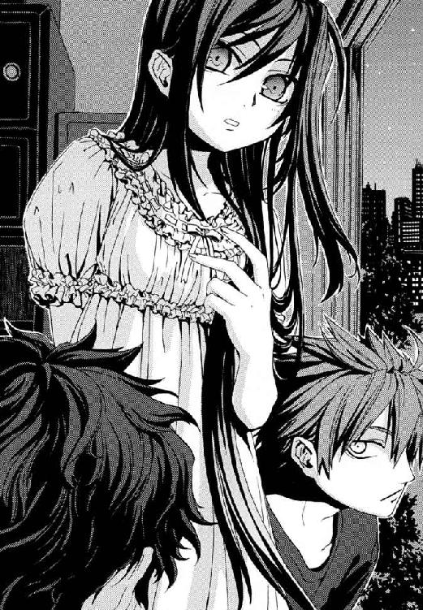
†
あくる日の夕方遅く、仁が小学校の校門を出たころ、携帯電話の呼び出しが鳴った。珍しいことに、日常はメールばかりで通話をひかえる倉本きずなからだ。
〈武原さんお願いします！ 太一君が家を出てたみたいで!! もう一時間も、姿が見えないんです！〉
彼女の悲鳴で状況は理解できた。内藤太一──七歳児の長男が、十崎家に閉じこもっていることに早くも退屈して外に出て、誘拐されたのだ。刻印魔導師は管理の都合上《公館》近辺にしか住めないし、内藤家の工場もそうだった。そして十崎家も徒歩十分の近所だ。敵が捜している近辺に、行き先が決まるまでの緊急避難でひそんでいたのだ。内藤太一が人目につきやすい大通りにでも出れば、即座に発見されておかしくなかった。
「きずなちゃん、落ち着いて。最悪でも、必ず向こうからサミュエルの携帯に連絡がくる。まだ来てなかったら、俺は二十分くらいで戻るからそれまでは電話を取らないでくれ」
だが、誘拐犯の背景がわかっている以上、冷酷に判断するならまだ余裕はあった。
†
「あと十五分で、連中が今、おまえの息子を引っ張りこんでる工事現場だ」
仁が、車のハンドルを握りながらくわえた煙草の先に、突然火がついた。あれから《公館》に連絡して、バンを回してもらったのだ。
「自然発火か。こんな高速でやる魔導師はそういないな、見事なもんだ」
自然発火現象は、古くから呪いや神罰のたぐいと認識されていた。今なお、科学では、個々の事例を可能だと指摘するに留まっている現象でもある。火の気がないはずの場所で突然物が燃え、人体までも炎に包まれ黒焦げになる。仁が知る限り、これの正体は魔法だ。因果大系という、因果関係に《魔力》を見出し操作する魔法で、現象の原因と結果を逆転させた結果の発火──。
つまり自然現象では、熱はあたたかいところから冷たいところへ伝わる。因果大系の魔法はこれを逆転させ、冷たいものから熱を奪って、あついものを逆に温められる。その結果自然発火するほどの高温に到達したのが、発火現象の正体なのだ。──そして、仁の煙草に一瞬で火をつけたサミュエルは、発火魔術の名手と言っていい腕前だった。
孤児院を焼き、四百人以上を焼き殺した男が、悔いるようにつぶやいた。
「府中の競馬場で、こうやって、煙草に火をつけてたんですよ。人ごみで魔法を使っても、どうせこの世界の人間に見られたら魔法は壊れるし、誰にもバレねえ安全だって思って。あいつらに目をつけられたのは、〝これ〟なんですよ」
この奇蹟果てる《地獄》の住人、悪鬼に観測された魔法は破壊される。だが、魔法で自殺した揚田クラリスがよみがえっていないように、一度魔法で起こした変化は取り消しようがない。同じように、サミュエルが魔法ですでにつけ終えた煙草の火も、燃え続けること自体は自然法則に反していないから消えない。サミュエルの発火術は、超高速の名人芸だったから、人ごみの東京競馬場ですら煙草に火をつけられた。だがそれゆえ、男は悪党の目に留まった。
「旦那は、この世界の、その......まっとうなお人じゃねえんですね。オレは魔法を目の前で使ったのに、魔法を破壊しなかった」
法定速度を守って進む車の窓から、夜の街が見えた。その流れゆく灯火を惜しむように、サミュエルはずっと光を視線で追いかけていた。
彼らは誘拐犯たちに呼び出されて、倒産した会社ビルを解体中の工事現場へ向かっていた。誘拐犯の電話を、《公館》からスタッフを十崎家に集めて万全の態勢で受けた。犯人の身元は見当がついているし、内藤太一救出のシナリオも組んであった。
だが、目的地から離れた道路脇に車を停めたとき、ただの父親の顔で刻印魔導師が漏らした。
「旦那、本当にこれで大丈夫なんすか。......太一は、無事なんでしょうね」
解体現場のはす向かいにあるパチンコ店には、すでにシャッターがおりていた。街灯もまばらな二車線の道路には、放置された自動車や錆びた盗難自転車がぽつりぽつりと屍をさらしていた。住宅の明かりすらなく、まったく車は通らなかった。
「あそこに、鉄パイプで高さ三メートルくらいの骨組みを組んで、白いビニールシートを張ってあるだろ。あの奥に、緑色の小さなプレハブ小屋がある。おまえの息子はあそこだ」
「せんせ、あたしはどうするの？」
ここ数日はまともに寝つけなかったのだろう、車の後部座席でうとうとしていたメイゼルが目を覚まして窓を開けた。
「内藤太一が工事現場から出てきたら、車の中に入れてやってくれ。誘拐犯を完全に無力化できたら俺が携帯電話を鳴らすから、それが回収の合図だ。どうやら四、五人だ。問題なく片付けられるよ」
仁はジャケット下のホルスターから拳銃を取り出し、遊底を引いて初弾を装塡する。誘拐犯側が拳銃で武装している可能性と、人質をとられていることを考えれば、万が一の用心も必要だった。
「ややこしくなるから、合図までは外に出るなよ。この世界の人間相手じゃ魔法がほとんど効かなくて、おまえはただの小学生なんだからな」
ここからサミュエルはひとり、バンから積みおろした自転車をこいで、誘拐犯と息子のところへ向かうのだ。男が、勇敢にサドルにまたがり、緊張で汗まみれになった顔で仁たちを見あげる。
「後は頼みやす」
†
電灯ひとつない薄闇の中、大制産業レクリエーション事業部部長補佐、矢島丈太郎が、わずか七歳の内藤太一を張り飛ばした。
泣きはらしたのだろう子どもの頰には、うっすらと涙のあとが白く残っていた。さるぐつわをはめられて、泣き声をあげることすらできず顔をまっ赤にしていた。すでに何本か乳歯が折れたのだろう、嚙まされていた白いタオルはにじんだ血でまだらに染まっていた。
小屋に入ったサミュエルが立ち尽くし、闇に慣れて息子の姿を認めた瞬間、手近にいた男につかみかかった。
「それでも人間か！ 畜生。それでも人間か？」
かつて死体が家より高く積みあがるほど子どもを焼き殺し、今は父親になった刻印魔導師が、人として哭いた。
「なんだこら！」
「沢村！ しっかりつかまえとかんかい」
「玉木ドア閉めぃ、逃がすなこいつ!!」
内藤サミュエルは三分ともたず、何発も殴られ蹴られ、ベニヤ板の床に押さえつけられていた。
全身ベルサーチのスーツでかためたやくざ、矢島がふところから拳銃を抜く。
「このダボが、今さら逃がすかぃ。ガキいてまうぞ。聞こえてますかー。お父さん、聞こえてますかー。こ、ん、な、ふ、う、に、く、そ、ガ、キ、い、て、ま、い、ま、す、よ」
拳銃の銃口を、ねじこむように父親のこめかみに押しつける。サミュエルを三人がかりで押さえつけた男たちが、下卑た笑いに唇をつりあげる。
「 、」
、」
父親は強くて何でもできる、そう信じていた幼い世界が粉々に砕け散ったか、七歳の子どもがはげしく泣きわめいていた。だがそれで終わりのはずもない。
「ぼくぅ、お父さんに、ちゃあぁんとお仕事するように言ってくれへんかなぁ？」
「......やめてくだせえ。......お願いす、やめてくだへえ」
魔法使いは、悪鬼に注視されていては魔法を破壊される。だからサミュエルが、踏み潰されたカエルのように、こぽこぽと泡を吐きながら哀願した。男は歯を折られて、下唇から血をあふれさせていた。父親は、我が子を守ろうと懸命だった。
矢島がサミュエルの泥と垢に汚れた耳に耳打ちする。
「ちょっと死体をあっためてくれ言うてるだけやないか」
「カンベンしてください。それはカンベンしてください」
とらえられた刻印魔導師が懇願する。相手が弱さを見せた瞬間、窓からの星明かりを背負った矢島が、得たりとばかりに笑った。
「カンベンできるわけあるかぃ。な、大きいもんに火はつけられん。せいぜい、あっためることしかできんいうてたよな？ 火ぃつけるのはできません。あっためるのもイヤですやと。おどれなめとんか？」
魔法で死体をあたためることは可能だ。この世界の人間に観測された魔法は、たしかに破壊される。だが裏を返せば、奇蹟の力は、もはや何も観測しない死体にならはたらくのだ。
「ぼくぅ。お父さんにお願いしてみようか？」
矢島が目配せするより早く、下品さを共有した舎弟のひとりが、まだ骨のもろい子どもの腕をねじりあげた。力をこめられるたび、そういう仕掛けの玩具であるかのように、昨夜から揚げをほお張っていた口がうめきをあげ、見開いた目が涙をこぼした。
「やめてくだせえ、......カンベンしてくだせえ」
出所がわからない熱は、古来、魔法使いの痕跡だった。
たとえば十九世紀、大西洋で帆船マリー・セレスト号から乗員がそっくり消える怪事件が起こった。その無人で漂流していた船には、直前まで人がいた気配があった。まだ湯気を立てていたコーヒー。調理室で火にかけたまま煮立っていた鍋に、船員の部屋に残っていたチキン。だがこの船に「直前までひとがいた」とする根拠は、ほとんどが熱だ。
そして熱が伝わる自然現象の因果を止め、あたたかさを保つのは、内藤サミュエルたち因果大系の魔法使いにはたやすい。それが幽霊船マリー・セレスト号の真相だった。悪鬼である船員に観測されたせいで、食べ物をあたためていた魔法が破壊され、生活の気配がある無人の風景が完成した。発見した船員たちは、自分たちが乗員消失という謎の最後の仕上げをしたと、気付きもしなかったろう。魔法使いたちが快適にすごすための魔法を残して悪鬼の訪問者から逃げ去った事例は、おとぎ話にもある。善良な旅人が今まで人がいたようなあたたかい家に出会うおはなしの原型はこれだ。
──そして時代は進んで現在、魔法使いは「死体をあたためろ」と、我が子を人質に取られてせまられている。
「子どもひとりじゃかわりもおるしな。弟と妹も全員連れて来たろか、な？」
矢島という男は、人を殺して、被害者の死亡推定時刻をごまかしたいのだ。死体はそこにあらわれる複数の現象で、死からの時間を推定される。だが、そのいくつかは体をあたためることで狂う。死後硬直は遅くなるし、直腸内温度も正確でなくなるのだ。もちろんそれだけでは血流が止まるから死斑が出たりと、偽装は完璧にはならない。だが死体現象は総合的な問題だ。たとえば死体が冷たい川の中のように体温しか熱源のない場所で発見されてしまえば、体があたたかかった事実を無視できなくなってしまう。魔法というこの世界の人間では立証できない現象をはさまれると、裁判で無罪になる可能性が十分に出てくるのだ。
こうして人の肌に吸いつき血をすする蛭のように肥え太ってきたのだろう。矢島が濁った目でじっとサミュエルを検分していた。どのくらいのカネを搾り取れるかをはかるように。
そして、さるぐつわがずれた何の罪もない長男が、かすれた、今出せる精一杯の声をあげた。
「たぐけて」
昂揚したやくざ者たちの注意は完全に、もっとも弱い内藤太一だけに集まっていた。
──そして、仁の我慢も限界だった。
解体現場に着いた途端、サミュエルが派手な格好の男にとらえられたことも予定どおりだった。その間に、裏手から仁は解体現場にもぐりこんだ。サミュエルが中の男たちの注意をそらす。仁が窓から発煙筒を投げこみ突入、誘拐犯の視界をふさいで内藤太一の身柄を確保。サミュエルと息子はプレハブ小屋を離脱。そして煙に乗じて、仁が残った男たちを無力化・拘束する、単純な手はずだ。
予定を冷徹に遂行すべく、仁はプレハブ小屋の窓を、発煙筒を投げこんで割った。缶ジュース大の金属筒からもうもうと噴きあがった白煙と慌てた男たちの中心に、飛びこむ。ガラス窓を体ごと突っこんで割った武原仁を、誰もまともに視認できなかった。
「なんだこら！」
「誰や、ガキいてまうぞ」
「撃つなボケ!!」
矢島丈太郎の声が、夜間、煙に巻かれた光なき底を揺らした。仁は足音の乱れから男たちの体勢の崩れを読み取り、白濁した風を貫き爆発的な加速で踏みこむ。三センチ先も見通せない状態でも、武原仁は足音で敵の位置をはかれる。魔法使いたちを、どんな状況でも肉薄さえすれば必殺できるよう訓練されたのだ。
仁は、ひとりの男の心臓の直上に、全体重をのせた肘をたたきこんだ。肋骨が折れた鈍い感触と、肺から空気が押し出される笛のような音と同時に、矢島は意識を失った。
「矢島さん！」
その声で頭部の位置を確認し、二人目の襟首をつかみ背負い投げに切って捨てる。
「殺すぞ、ガキ殺すぞ」
三人目が最も弱いものに飛びついたことに、この世界の恥部を見られたようで暗澹たる気分になった。子どものいた位置で待ち構えて卑劣な男を一打ちに仕留める。
「たいーち！ 逃げろ、たいちぃ！」
父親の祈るような叫びとともに、白い闇に満たされた小屋のドアが、勢いよく開かれた。
「動くな、こいつら殺すぞ!!」
四人目が怒声をあげ、仁に背中を向けることになるのに拳銃を出口へ向けた。武原仁にとって素手の殴り合いでは、柔道や空手の有段者もいるやくざ相手のほうが、本来、魔法使いより注意を要する。だから冷酷といえる判断で確実な突入タイミングを待った。間合いの感覚をつぶすため、薄闇に慣れた誘拐犯の視界を発煙筒で奪った。不意打ちとはいえ、彼らの自滅は情けないのひとことに尽きた。
「もういいぞ、終わった」
仁の足元に、意識を失った四人目が崩れ落ちた。
そして煙は急速に晴れた。開いたドアから白煙が拡散して吹き流され、室内の視界が回復した。内藤サミュエルの、自然現象の因果を操作する因果魔術だ。矢島らやくざ者四人が完全に気を失い、内藤太一がこのプレハブ小屋からきちんと逃げた証だった。悪鬼に魔法を破壊されなければ、魔法使いにとって煙を払うくらいは朝飯前だ。
「いいえ、何も終わっていやせん」
サミュエルの静かな怒声と同時に、仁は、炎の雨を受けたような、何百というともしびに囲まれていた。
まるでシャンデリアの中に飛びこんだようだった。一瞬で、プレハブ小屋の中には無数の小さな火が燃えはじめていた。これが故郷の世界で四百人を焼き地獄に堕とされた男の、本当の実力だ。誰もが魔法使いである魔法世界で、地獄送りになるほどの大罪をやりおおせるのは、ある種の異才だけだ。そしてこの内藤サミュエルには、子どもを売った後ろ暗い孤児院職員たちをゴミのように焼いた、超高速の発火魔術がある。
「どういうつもりだ？」
地獄堕ちの罰を背負わされながら、この世界に根を張り生活を築いた男が、仁に答えた。
「だってそうでしょう？ 旦那がたが逮捕して、こいつら一体どのくらいの罰になるんですかい。二年か三年か、ほんのちょっとの間、牢屋に入って、すぐ外に戻ってくるじゃないすか」
出口を背後にしたサミュエルの、殴られ蹴られて腫れはじめたまぶたの下の瞳に、憎悪が火のようにちらついていた。
「こいつらが娑婆に出てきたら、今よりずっとカネに困って、オレたちをしゃぶりつくそうとするに決まってる。この傷を見てくだせえ、太一がどんな目にあったか見てくだせえ。どうやって家族を守れるんだ。旦那ぁ、オレを希望だと言ったじゃないすか！」
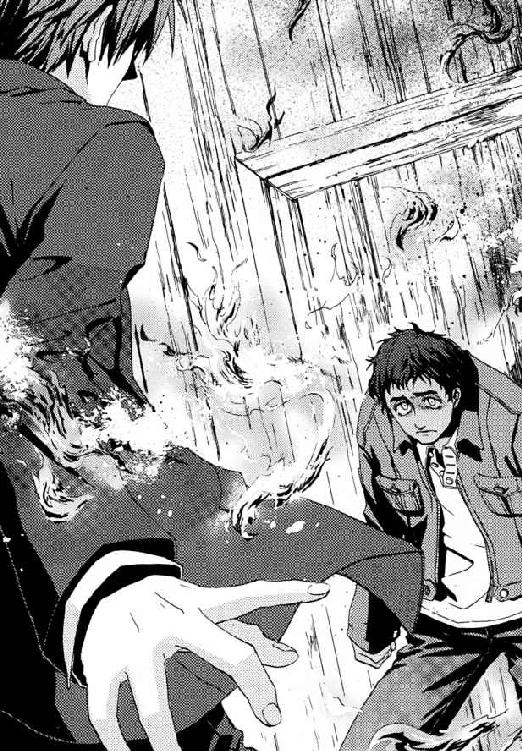
「ふざけるな！ おまえ、つぐないとか、良心とか、さんざん言っておいて、どうしてそうなんだ！ 家族が待ってんだぞ。こんなことで、誰が救われるつもりだ」
眼球の湿気が奪われて、目がちかちかした。火の回りが早かった天井からは、木材のはぜる音がしだしていた。仁は、あがりはじめた煙と熱気でむせた。最初の火が出てわずか一分で、せまい小屋の中の板やプラスチック、可燃物はすべて燃えはじめていた。意識を失っていようと、悪鬼の体に魔法で火をつけるのは難しい。きれいに誘拐犯四人の周囲だけが、魔法を破壊されて炎の空白地だった。
「これが、つぐないなんすよ」
まるで悪夢の中にいるようだ。サミュエルのシャツは汗だくだった。仁も同じようなものなのだと思った。服は汗でへばりつき、額から落ちたしずくが目に入る。サミュエルが、汗が目に入ったか涙が浮いたか、まぶたをしばたたかせていた。
「うちの太一を、連れて帰ってくれやせんか。こんな真夜中に知らない場所にほっぽり出されて不安にしてると思うんす」
この解体現場へ来るまでの車中、サミュエルは仁の煙草に火をつけた。あれは、得意の高速発火魔術で仁を出し抜けそうか、試していたのだ。
「この大馬鹿野郎が！」
仁がふところから拳銃を抜いた。この世界で父になった男が、なにかがズレたまま戻らなくなってしまったように笑っていた。
「オレが、魔法で人並み以上にできることなんて、これだけす。けど一回くらい、それで家族を守ってやれる〝魔法使い〟になったっていいじゃありやせんか」
仁へ向けて収束するように、一瞬、霧のように微細な氷の花が何十となく咲き乱れた。魔法で熱を奪われた水蒸気が氷結し、星のようにきらめいたのだ。因果魔術で氷が発生したとは、周囲の大気が熱を奪われたのと引き換えに、どこか一点の温度が急上昇したということだ。その熱量を集めた発火点は、氷の花弁の中心────。
「ちがうだろ！」
仁は炎からのがれるため、すでに燃えはじめている床へと転がった。飛びこんだ小さな火と、その直前の避け切れなかった高熱の焦点が、彼の皮膚に火傷をつくった。脱いだジャケットでたたいて、せめて床の炎を消した。半分も消火できないうちに、今度はジャケットに氷の花が咲き、その中心に生じた超高熱に布地が燃えあがった。
「旦那、そんな方法じゃあと何秒も耐えられやせんよ」
白煙と陽炎に咳きこみながら、膝立ちになった仁が構える拳銃は、銃口に内藤サミュエルをとらえていた。極刑の罪人が、体の内側からの冥い圧力にさいなまれるように顔をゆがめた。仁が避ければ、後ろにいる、意識を失い倒れた矢島丈太郎が火達磨になる。
「なあ、なんで俺たちが戦ってるんだ？ この戦いは、ナニがどうなりゃ勝ちなんだ？」
仁の引き金を、あの揚田クラリスの死体が浮かべた救われたような微笑みが、止めていた。勢いを増してゆく炎に巻かれ、火傷だらけで、陽炎の向こう側はぼやけて見通せなかった。サミュエルがひとりでも死なせたら、仁は監督者として彼を処分せねばならない。今も、本当はすぐにでも撃つのが、専任係官としての彼の正解だった。
「......いっそオレを撃ったら〝勝ち〟すよ。オレさえ死んだら、あいつらだってもうおっかあや、子どもたちに手を出す意味がねえ。借金だって、生命保険がおりりゃ大丈夫なんだ。すくなくともみんな、しあわせになれやす」
公館の報告書類では、内藤家の三千万円の借金自体に違法性はない。一家は大金が転がりこみでもしない限り、借金で工場を手放さねばならない。矢島の出所後の報復と、また食いつかれることの恐怖におびえねばならない。そしてサミュエルは、あんなにも軽い理由で四百人を焼き殺した〝内なるかいぶつ〟と、命尽きるまで向き合い続けるのだ。
「今回のことが起こったとき、これは神サマが罰をくださったんだってわかったんすよ。だってそうでしょう？ 悪人がいなくなって、みんながしあわせになるなら、それが〝勝ち〟じゃありやせんか？」
地獄のごとき焰にあかあかと照らされて、サミュエルは男泣きに泣いていた。
「オレはいいんす。太一を、助けてください......。秀次を、助けてください。秀三を助けてください。......ひとみを、助けてください。......双葉を助けてください。みつきを、助けてください......」
カエルのように背中をまるめた刻印魔導師が、絶望の底から、祈りをこめて見あげてくる。なのに、昨夜、赤ん坊を抱いたサミュエルを見たときと同じだった。仁の腹の底にほんのわずか、生理的な嫌悪感がこびりついて取れなかった。
「ああ、そうか。おまえ自身が、誰よりもこの嫌な感触に毎日苦しんでるんだよな。確かに〝これ〟をこそぎ落としたきゃ死ぬしかないか」
仁の正しさを求める部分は吐き捨てる。サミュエルが自らを罰するのは道理だ。憎まれながら生きる贖罪すら、罪を知られていないこの世界ではできないのだと。
同時に彼の甘い部分は反論する。それでも、ここで愛してくれる人間のためにただ生きろと。おとなになってしまった彼には、職務なり責任なりということばに飛びついて人の死を片付けられない。
正解などない。
馬鹿げたマネだとは思った。だが仁は、気がついたら銃をホルスターに戻して、矢島丈太郎の九十キログラム近い体を抱きあげていた。人殺しにサミュエルを利用しようとし、子どもを誘拐して殴った、触りたくもない男をだ。彼が目の前の刻印魔導師に、そしてメイゼルに見せたいのは、そういう世界だから。
「旦那、いくらなんでもそいつはないでしょう」
炎にあおられサミュエルが、傷ついたように太い眉を寄せた。
「死ぬ理由のあるヤツがいなくなればいいなんて言っても、おまえ、昔、何やったか家族に教えてないだろ。おまえが死ぬ理由があっても、家族から見りゃどうなんだ？ 理由なんてどうとも取れるモンだけで、勝手に死んだり殺されたりしてんなよ！」
無数の炎色の光に照らされて、影が落ちる場もなく彼らは炙られていた。まるで人間を焼く、永劫の業火の中にいるようだった。サミュエルが悪人と無辜の者四百人を炭にした孤児院の中も、こんな風景だったように思えた。だがこのうなる炎の向こう、十崎家には父親を待つ内藤家の子どもたちがきっといた。内藤倫子は、今晩も、きっとむやみにレモンの入った晩ごはんを作って待っている。
「旦那とオレたちはちがうんすよ。オレたちの本当の《地獄》はここにあるんです」
そうして、浮かばれない魂に操られたように、〝かいぶつ〟が握った拳で、自分の心臓の真上をたたいた。あの水中に死んだ女が自ら魔法で吹き飛ばしたのと同じ、左胸を。
仁にも、川底の揚田クラリスの微笑みが、すとんと腑に落ちた。あの夜、川面を走ったクラリスもきっと、罪にさいなまれる胸をかかえて、死に場所を求めていた。もし彼女の目的地が工場だったなら、同じ死ぬべき理由がある罪人、サミュエルを道連れで殺そうとしたのだ。すこしでも死を価値あるものにしたい、欲だった。魔女と、矢島を道連れにしようとしている今のサミュエルは、たぶん同じだった。
男の慟哭とともに、氷の花のかたちでひとつ、殺意が弾けた。魔法で、フラクタルな植物の葉脈のような導熱管が構成され、その広がる範囲から効率よく熱を吸いあげる──発火。
仁は間一髪、氷と高熱の中心点を、身をよじってかわした。
そのとき、建築作業員のためのプレハブ小屋を焼いていた炎が、突然光を失った。
室内の空気が、息のできる温度に戻っていた。
だが、火が消えたにしては様子がおかしかった。頭上からは灰が、雨のように降り続けていたからだ。炎も熱もないのに、ただ黒い虫食いに侵蝕されるように、小屋の屋根と壁は焼かれ続けていた。残った床の火の熱気で、灰が再び舞いあがった。
それは、魔法によるおそろしく巧妙な加熱だった。小屋は、酸素供給を魔法で絶たれながら同時に超高熱をかけられ、炎をあげることなく焼かれていたのだ。高い精度で熱放射が制御されているおかげで、仁たちは焼死をまぬかれていた。サミュエルすら、高度な魔法技術の脅威に打たれて呆然と、安全に焼け落ちる小屋を眺めていた。
全焼後の火災現場さながら炭化した柱をさらして、あっという間に壁と屋根は焼き尽くされた。仁とサミュエルは吹きさらしの星空の下にいた。
「《地獄》？ そんなものに、あたしたちが負けるですって？ ふざけないで」
おとなたちは声の方向へ目を向け、ことばを失った。サミュエルと同じ死ぬ理由を刻印された魔法使いが、そこにいた。内藤太一と同じ小学生の刻印魔導師は、極限の精密作業に汗まみれになりながら、胸に手を当て、誇り高く立っていた。
鴉木メイゼルが操る魔法は円環大系。熱放射の根源である電子を支配するその魔法で、彼女がプレハブを焼いたのだ。
「本当に頭にくるわ、あんたの見失ってる答えを教えてあげる。あんたは、今さら死んだってどうしようもないくらい、とっくに体の隅から隅までしあわせなのよ」
少女は、卑屈に下を向きそうになる視線で、それでも歯を食いしばってまっすぐ仁たちの世界を見ようとしていた。それが、ひどくうれしかった。
サミュエルの浅黒い左手には、鉄のようにかたく、結婚指輪が炎を照り返して輝いている。
小さな刻印魔導師が、サミュエルを見据えた。
無人の工場で、生きのびてもしあわせになるとは決まっていないと言った少女が、細い脚で踏ん張っていた。下からの火で火傷を負った内藤サミュエルの影が、焼け跡にのびていた。カエルのように背をかがめて、長く黒々としたそれは、まるで蠢く〝かいぶつ〟のように震えていた。
耐え難いほど火が回った床の上から、仁は救われてほしいから語りかける。
「どんな世界にも善良な人間はいるしそうでない人間だっている。危ない目に遭うこともあるし、思いがけない相手に助けられることだってある。神様も奇蹟もないなら、人を救ってくれるのは、最後には人間と、愛情じゃないのか」
その真理は、この神なき地獄では、銃弾より多くの人間を殺してきた欺瞞だ。けれど仁が抱いているのがサミュエルの無垢な赤ん坊ではなく、汚れきったやくざ者だとしても、彼らはそれを捨てられない。腕の中で揺らすと、矢島の目じりが子どものようにあどけなく引きつった。
「オレの魔法は、まわりの温度があがればあがるほど威力を増すんす。今からこいつを、旦那と〝そいつ〟とお嬢ちゃんのまわりに、つくりやす」
メイゼルが反応するより、サミュエルの魔術が早い。
炎の赤と橙色にあおられて、微細な氷片でかたちづくられた花が花弁を広げた。それは高速発火魔術の、百個を超える多重発動だった。
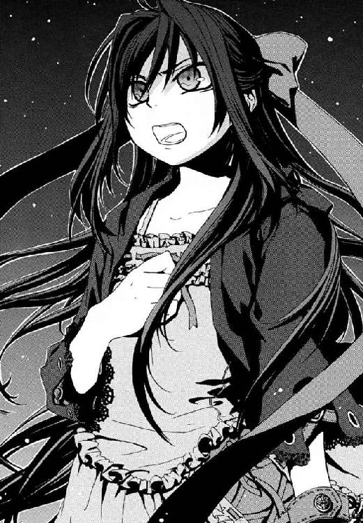
魔法の白花が無数に咲き乱れていた。氷の花弁に熱を奪われて、プレハブ小屋の床に残っていた炎が、たちどころに消えた。サミュエルがあつかう熱の源は周囲の気温だ。だから火災の熱気を略奪して花開いたなら、魔法の威力は桁外れだ。焦点温度は、間違いなく千度を超え鉄すら溶かす焦熱。視界を埋め尽くす発火魔術の花園の、花弁は重なっていた。床から奪った炎の熱を、花弁どうしで受け渡させて〝どこか〟へ中継しているのだ。
床は燃え、足には大火傷を負い、重いやくざの体を抱きかかえていた。仁に、サミュエルの術をかわす速度は無い。絶望的な状況の仁を取り囲んだ魔法が、一気に、火妖の朱に爆発する────────。
そして炎の夜の最後を締めくくるように、現れたものは紅蓮の大渦だった。サミュエルの発火魔術ではない。これこそ魔法使いをおそれさせる《地獄》の、魔炎とも呼ばれる業火だ。この世界の住人、悪鬼が魔法を破壊するとき、砕けた魔法の破片として放散する、悪鬼自身の目には映らない光の乱舞。
「は、ははっ、......なんで、何も起こらないんすか」
サミュエルが、仁を、メイゼルを前に放心していた。必殺のはずの魔術に、全員が無傷だった。仁たちを牽制しつつはなったあの魔法は、サミュエル自身を熱の焦点に設定していた。彼の地獄をおのが体ごと焼き尽くす、人体発火による自殺が成功するはずだったのだ。
「なんや......苦しいぞ......ボケ」
仁が抱きあげた腕の中で、人の痛みに無頓着すぎた最低の男、矢島丈太郎が咳きこんでいた。
武原仁は何もしていない。目を覚ましたこの悪鬼、矢島に発火魔術が観測され、破壊されただけのことだ。
「人と......愛ってなぁ、こいつはなんの冗談です？」
サミュエルが〝かいぶつ〟ではなく、不安な赤ん坊のように顔をゆがめた。
仁も、男へと、つかれきった、けれど他にどうしようもない笑みを向ける。
「なんだおまえ、泣きながら笑ってんじゃないか。俺の〝勝ち〟ってことだよ」
魔法使いは、彼を追い詰めた張本人に発火魔術を破壊され、命を拾った。矢島たちにはしかるべき罰を受けてもらうことになる。だが、罪人だからこの世から消えればよかったわけではない。愛し合いながら、憎み合いながら、慈しみ深くあるいは残酷に、それでもみんなつながっているのだ。そのつながりは捨てたもんじゃないと思うなんて、楽天的すぎてここにいる魔法使いたちに怒られそうだった。
「勘弁してくだせえよ旦那。笑ったら、負けなんすか」
サミュエルの煤だらけの顔にしわをつくっているのは、あの川底の揚田クラリスの、解き放たれた死人の微笑みではない。生ある者だけに許された、しがらみを引きずった苦い諧謔だ。
お姫様抱っこの体勢のまま、矢島がゆでだこのようにゆだった真っ赤な顔で、仁を見あげていた。
「わし、夢の中にいるのんか？」
元凶の男の安らかさがやるせなくて、仁はよく眠る悪党を床に落とす。打ち所が悪かったか、矢島が再度、気を失った。
†
そして火事の炎と煙とを通報されて消防車が到来し、事件は終わった。
やってきたのは消防車だけではない。内藤倫子もだ。十崎家のママチャリをこいできた彼女が、髪を振り乱し、健康サンダル履きのまま夫へ駆け寄った。あの男をただひとり本当に止められるかもしれない彼女が、仁たちのことなどかまわずサミュエルにしがみついた。傷ついた長男の太一も、両親へ転がるようにすがりついた。
たぶん本当に夜が終わったのは、そのときだった。
泣きながら夫婦がかたく抱き合った夜が明けた。
翌朝、ごはんを食べにおりて来たメイゼルが、まだ寝たりない様子でトーストにマーマレードを塗りたくっていた。十崎家の掘りごたつの隣にあったちゃぶ台は、もう片付けられている。
内藤一家は都内の《公館》宿舎のひとつを借りてそこに住むことになり、今朝の六時前に出発したのだ。仁も引越しをすこしだけ手伝った。
洗面所には、きずなが内藤家の小さな子どものために置いた踏み台が、まだ残っていた。内藤家は、確かにここにいたのだ。
そのきずなも、メイゼル同様、ときおり眠気で意識を飛ばしそうになりながら、卵のサラダをフォークで刺していた。誘拐事件の残務に追われ、ごたつく前にサミュエルたちを新生活の場へ転居させてやった十崎京香は、今朝五時にようやく仕事を終えて帰ってきた。もちろん今日の仕事は定時にはじまる。京香がテーブルに突っ伏していても、幼なじみとしては、そっとしておいてやりたい気分だった。
メイゼルだけが、だらしない生きかたを知らない姫君のように背筋をのばしていた。
「ひどい有様だわ。みんなそろって、だらしないわね」
内藤家がたった一泊二日しただけで、十崎家の女性たちは全員、力を吸い取られたようだ。
「でもまあ、昨晩はみんな、あんなことがあって疲れてたから、しかたないかしら。サミュエルたちの寝室も、ずいぶん早く電気が消えてたもの」
「わっ、わたし何にも聞いてないですよ！ 夜中、全然何にも聞こえませんでしたっ!!」
きずなが突然の大パニックで完全にわやくちゃになっていた。内藤家は、思春期の女の子からみると恥ずかしいくらい子だくさんな家だった。それだけ罪人サミュエルにぬくもりが必要だったのか、もっと即物的な理由があったのか。彼らは本当に、そう、切ないくらいに人間だった。
そして京香が、むくりと起きあがってコップ一杯の牛乳を一気に飲んだ。
「あー、ごめんね。きずなちゃんの部屋の隣だったっけ、内藤さんたちの寝室」
「きっ、聞こえてません！」
「そういえばあの夫婦、なんだかんだ言っても、ありえないくらい円満だったのよね。結婚八年目なのに、隙があったら子どもの目盗んで手ぇつないでたしー」
思い返しながら食パンを裂く京香が、微妙にうんざり気味に見えたのは、仁の気のせいか。
「あれは愛よね。すっごい見せつけっぷりだったもの」
メイゼルが、素敵ねと付け加えて、テーブルの上に出ていた仁の手に小さな手を重ねてきた。いつの間に買ったのか、おもちゃの指輪を左手の薬指にはめているのは、おまじないというにもちょっと重い。
きずなは、真っ赤になった顔を隠すようにマグカップでトマトジュースを飲んでいた。
「......そうだったのか？」
どうやら何も気づかなかったのは、仁だけらしい。
「武原さん、信じてないですね。本っ当に、昨日の晩の十一時ごろから真夜中の三時まで、隣の壁から何も聞こえなかったんですよ」
仁は、きずながもしも犯罪に手を染めたら、五分くらいで洗いざらい白状させられると思った。
まだ微妙に眠そうな幼なじみが、立ち上がった。メイゼルのおもちゃの指輪を、彼女がやさしく見おろす。
「あ、おもちゃの指輪だー？ なつかしー、私もメイゼルちゃんくらいのころ、仁にもらったわー」
爆弾発言だけを残して、京香のスリッパの足音が玄関へと遠ざかってゆく。そもそも、責められる筋合いなどないはずだった。だが微妙に嗜虐的に目つきが変わった、問い詰めモードのメイゼルが、こつこつと歯痛になりそうな音で掘りごたつのテーブルをたたきはじめたのだ。
「せんせ、大事な話があるからそこに正座してほしいの」
この世界には、かつて万能の魔法使いがいた。今は誰もが、微妙に額に青筋を立てながら、ままならない自分を抱えている。ひとりで救われるのは大変なのだから、早すぎることも遅すぎることもないから、人は愛について語ろう──つまり寛容さと人類愛。
小さな魔女は、幼なじみという隣人愛の魔法についての仁の弁明を聞き終えると、微笑んだまま、かわいらしい指輪をはめた指を強く組んだ。
「でもせんせ、やくざの人をあんなやさしく抱いたげてキョウカに指輪あげるのが愛なら、あたしの立場は何？」
「肝臓」
「うさぎ」
「銀だら」
テーブルを、三人の男女がかこんでいた。
「雷撃」
「機関車」
「やまごぼう」
三人に、ほかに会話はない。黙々とテーブルへはしをのばすだけだ。
「う、う......ウ、打ち、くび？」
「びんぼう」
「瓜」
三人のうち、小学生の女の子ひとりだけが、答えに迷いがあった。彼女が頭をひねってようやくことばをつむぎ、他のふたりはよどみがない。劣勢の少女がついに立ちあがって怒りだした。
「ウリなんてもの、日本語にないわ！」
子どもっぽい抗議に、武原仁は冷静に返した。
「いや、あるぞ」
「メイゼルちゃん。そのおつけもの、白瓜だよ」
鴉木メイゼルの日焼けした肌は、夕食どきの蛍光灯の下でも、健康的に光を照り返す。赤い水玉のリボンを長い黒髪に結んだ少女を、仁はかわいらしいと思った。その、かわいらしい生き物が、眉を吊り上げて怒っていた。
──しりとりで負けそうになってだ。
メイゼルは、ワンピースからのびる足も子どもっぽい小学生だ。だが、武原仁を射る眼光は鋭い。
「......せんせは、きずなにミカタするの？ このあたしより、こんな......ぬ、ぬかみそくさい女がいいのね！」
武原仁は、二十四歳の若造だが、夕食のテーブルでは一番年上だ。ここは彼の家ではない。職場の上司で、一歳上の幼なじみでもある十崎京香に、帰りが遅くなるから家をみていてくれと頼まれたのだ。サミュエルたち内藤一家が新居に無事引越してからも、京香の仕事はやはり忙しいままだった。七月に入ったばかりのその頃、《神に近き者》グレンの襲来の予兆がすでに伝わっていたのだと仁が知ったのは、ずいぶん後のことだ。
「メイゼルちゃん、ぬかみそなんてことば、よく知ってたね」
暴言を吐かれた当人は、笑顔でさらりと受け流した。よくできましたと拍手までされたものだから、メイゼルのほうが、顔がまっ赤だ。
倉本きずなは、この家に居候しながら高校にかよう、たれ気味のやさしい目をした女の子だ。バベル事件が終結して一週間になり、仁もきずなと話をすることに慣れた。家主の京香は帰宅が遅いから、家事一切を引き受けてくれている彼女は自然にお姉さん役になっていたのだ。
「きずなこそ、本当はぬかみそがわからないから、くやしいこと言われたのも気付かなかったのね」
「メイゼルちゃん。今日のごはん作ったのも、おつけもの漬けたのも、わたしだよ」
きずなはうれしそうだ。家族ができたようで、メイゼルがかわいくてしかたないのだ。
「そ、そのくらいで、勝った気にならないで。せんせはあたしの料理、命がけで食べてくれるのよ！」
メイゼルの料理は危険だ。彼女が魔法で調理をしようとした結果、分子をいじって毒性を持たせてしまったことすらあるのだ。
ほとんど知られてはいないが、この世界には、大昔から、異世界人の魔法使いが数多くおとずれている。仁の勤める魔導師公館は、彼女たちと政府との窓口だ。そこでの仁の仕事は、専任係官という名のなんでも屋だ。メイゼルの暮らしを監督もしているし、小学校にニセ教師として送りこまれ、彼女が溶けこむ手助けもしている。このしりとりも、異世界人の少女の、語彙を増やす訓練だ。
「せんせ、あたしの監督をする人なんでしょ！ きずなを落ちこませるようなことばを、おしえるのよ」
「えーと、あのなメイゼル。......まあ、おちつけ」
仁は、席から立ってしまったこのメイゼルのおかげで、ときどき胃に穴があきそうになる。彼女は、きずなをライバル視している。高校生としてはできすぎにスタイルがよいきずなを、微妙な女心のせいで意識せずにいられないのだ。
「魔法使いが知ってるこの世界のことばなんて、限られてるもの。あたしが、この世界で正常な人づきあいができるように、せんせは協力すべきだと思うの」
メイゼルが日本語をしゃべれるのは、魔法世界の巨大権力である《協会》と、日本の付き合いが深く、一種の学術言語になっているからだ。だから、日常生活に使うことばとなると、ちいさな魔女は突然、舌足らずになる。
「メイゼル、あのな。ヒトをけなすのは、断じて正常な人付き合いじゃないぞ」
「............だいじなことよ？」
仁のすぐそばまで寄っていたメイゼルが、抱きしめるようにひらべったい胸へ手を当てる。
「体の痛さだけでこころを折られたら、人って卑屈になるもの。蜜でとろかすみたいに、ことばで、痛いのか気持ちいいのかわからなくしたげないと」
なにを想像したのか、メイゼルがぽぅと頰を紅潮させる。仁の瞳へ、熱っぽい視線を送りながらだ。
「あたしがことばを上手にならないと、あとでつらい思いをするのは、せんせ自身なのよ」
「......ニセモノでも教師な以上、生徒指導しときたいんだが」
まだ小学生の魔女が、あめ色の瞳をいたずらっぽく揺らす。
「いいこと考えたわ。しりとりで負けたひとが、罰として、せんせにおかずを食べさせたげるって、どうかしら」
武原仁はむせ返る。ちいさな魔女は、仁の焦る顔が大好物の嗜虐趣味者なのだ。
きずなが、咳きこんだ彼に助け舟を出してくれた。
「その罰で、もう一回しりとりしよっか？ はじめは、『おかず』でいいよね。はい、『ず』からはじまることば、次はメイゼルちゃんだよ」
「それ、俺、つらいんだが」
「おかずの、ず、ず......」
メイゼルが、人形のような細い首をかしげる。
仁は、待っていると長そうだから、湯気をたてている揚げ出し豆腐をつまむ。きずなも、白いごはんをおいしそうに食べていた。
ひとり、はしの止まったメイゼルが、いらだっているのが目に見えてわかった。
「メイゼルちゃんも、食べながら考えたほうがいいよ」
「そうだぞメイゼル。そろそろ座れ」
しぶしぶ座った少女のおしりを中心に、水色のワンピースのスカートがふわりと広がった。
メイゼルは、なめこ汁のなめこをはしでつまもうとして、何度もはし先から滑らせていた。異世界人の魔法使いは、はしづかいもまだ下手くそだ。
「ほら、イライラしてるときは、もっと取りやすいもの食え。そっちの肉とか」
「わかってるわ！ 子どもあつかいしないで」
メイゼルが、ちいさな手でこしょこしょと動かしていたはしを、ばんとテーブルにたたきつける。彼女は、押しは強いが防戦にまわるとぼろぼろだ。
「メイゼルちゃんって、武原さんと、ほんとに仲いいですね」
きずながまた、笑顔でメイゼルの地雷を踏んだ。
†
次の晩の夕飯どきにも、メイゼルはしりとり勝負を要求した。
暦は七月。小学校の六年一組では、六月の間はやっていた身振りで秘密のサインを出し合うことから、しりとりへと流行が移った。武原仁の、副担任としてのニセ教師生活も、もう二ヶ月になろうとしていた。
仁がちいさな魔女の生活に密着せねばならないのには、理由がある。メイゼルが、故郷の魔法世界で死刑同然の重罰を受けて、この世界に追放されてここにいるからだ。彼女のような、魔法世界の敵を百人斃さなければ故郷に帰れない者たちを、刻印魔導師と呼ぶ。彼の目の前にいる鴉木メイゼルは、史上最年少の刻印魔導師なのである。
そして、子どもに死なれると寝覚めが悪いおとなたちを振り切って、この小学生は達成者ゼロの死の道をあきらめない。罰をやりとげることが、咎人の責務だからだ。
「このあたしを止めたかったら、心をへし折って屈服させることね」
メイゼルが、くすりと笑った拍子に落ちかけた長い黒髪を払う。仁がこまっている顔は、彼女を興奮させるツボなのだ。
「せんせ。今日は、やすみ時間に、しりとりの勝ちかたをたくさん考えたのよ」
今晩のおかずは、サラダと揚げ物だ。テーブルの真ん中に、アジフライから、玉ねぎ、鶏肉とチーズのフライ、アスパラガス、にんじん、カボチャにししとうと、衣のサクッとあがった揚げ物が、豪勢に盛り付けられている。
「この国にずっと住んでた、せんせやきずなに、正面からぶつかってもしかたないわ。だから、しりとりに、きまりをつけることにしたの」
メイゼルが、いたずらっぽく目を細める。
「あのねせんせ、今日、魔法使いがこのあたり歩いてるのを見て、思い出したのよ。魔法世界には『しりとりで決闘する世界』があるの。あたしは魔法世界うまれなんだから、その方法でしりとりしていいでしょ？」
きずなが、深い濃紺色の瞳を揺らしておどろいていた。
「異世界って、なんかいろいろあるんですね」
「日本と付き合いがある世界だけで、一千個以上あるからなぁ」
得意満面で、メイゼルは説明する。
「すごく古い、ゆいしょある世界なのよ。自分たちの世界を魔法でほろぼしかけた、呪われた戦争世界だわ。だから、その世界では、魔法使いの決闘もよくおこなわれてたの」
「..................しりとりって......世界がほろびるんだ」
きずなは、常識のはるか向こう側を見せられて半笑いだ。
十崎家の大きな居間の空気は、だんだん煮えつつあった。
「魔法ってのは、数えきれないくらいある魔法世界の、全部に一種類ずつあるんだ。しりとりの魔法もあるんじゃないか。......いや、本当にあるな。天盟大系だ」
思い出して、頭が痛くなった。魔導師公館の職員として、仁はこの魔法大系にかかわったことが、一度ある。
魔法使いは太古からこの世界に到来し、仁たちの知っている神話や伝説に影響をおよぼしている。ただ、天盟世界とこの世界の交流はすくなく、文化的な痕跡も、しりとりがおまじないに組み入れられることがある程度だ。
こんなめずらしいものをなぜメイゼルが思いついたのか、仁は嫌な予感がした。
「武原さん、メイゼルちゃんの挑戦、受けちゃっていいですよね」
きずなが、危機感なく安うけあいする。
メイゼルのつけた決まりとは、しりとりをするごとにそれを指差すというものだ。つまり、しりとりで『湯のみ』と言うときは湯のみを指し、『冷蔵庫』なら冷蔵庫を指さねばならない。せいぜい家の中にあるものしか指差せないので、使えることばは極端に減る。ことばを知らないメイゼル自身が一番地獄を見る、自爆戦法だ。
「さあ、用意はいい？ せんせも、きずなも、どん底に引きずりこんでドロまみれにしたげるわ」
「──作法どおり、決闘がおこなわれることを、我、神殿の乙女マチルダ・クリストリッツァは承認します」
突然、涼やかな声が響いた。十崎家の居間のガラス戸一枚向こうは、車を一台停められる広さの庭だ。花の鉢植えが置かれたそこに、白いローブを着た若い女性が立っていた。
仁は、まぶたをこすって、もう一度、日も暮れたガラス戸の向こうをにらんだ。
純白の長いローブをまとった上品な女性が不法侵入していた。栗色の髪を背中までのばし、青い瞳も涼やかな彼女は、日本人どころかこの世界の人間にも見えなかった。
仁たちが居間でドン引きしている空気も読まず、彼女はおごそかに告げた。
「──天盟大系世界において、魔法使いは、世界を構成する設計図である《神のことば》に、人間のことばを通じてせまります。けれど、人間の使えることばは不完全ですから、《神のことば》の奇蹟に届きません。だから私たち天盟魔導師は、さらに深い意味と広がりをことばに持たせんと、ことばを連結しました。『ことば』は、つなげれば行間をもって、多彩な意味をもつ『文』になります。つなげたこの間にやどる〝行間〟こそ、ことばの魂です！
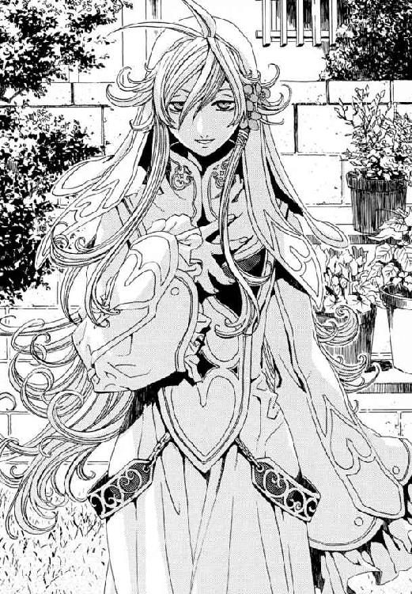
この『ことばの魂』なら、どんどん単語をつなげてしりとりをすることで《神のことば》に近づき、ついには魔法へ到達できるのです！」
すまし顔で、とうとうと説明していた。
仁たちは、食卓をかこんだまま、ガラス戸越しの声をぼんやりと聞いた。透明でも、ガラス一枚あると、ずいぶん声が遠く感じるものだなと思いながら。
「もしもーし！ だれか開けてくださーい！」
純白の巫女が、ガラス戸をたたきはじめた。
「......あ、せんせ、あたしが見た魔法使いって、〝これ〟だわ」
きずなが、無言で、仁に電話の子機を手渡した。警察を呼んでほしいと目でうったえていた。
「ダメです！ ちょっ、初対面なのに警察は、警察だけはっ！」
すでに警察にごやっかいになったのか、手をばたばたさせて焦っていた。仁たち魔導師公館と警察の間には、上層部ではつながりがある。ただ、普通の警官は魔法使いの存在など知らないから、よく変質者とまちがわれるのだ。
庭に迷いこんだ天盟魔導師は、半泣きだった。
仁が、見ていられなくなってガラス戸を開けても、捨て犬のように、彼女はしばらく寄ってこようとしなかった。
きずなが、二十歳ほどに見えるマチルダに、お茶を出してやっていた。マチルダときずなの髪の色は同じ栗色だから、まるで家族のようだった。
仁は、この白い巫女の事情を知っているはずの人物に、電話をかけていた。家主の十崎京香は、魔導師公館に勤める若手官僚なのだ。
「アレは、いったいなにごとだ」
電話を予期していたのか、相手は呼び出し一回で電話をとった。
〈そろそろ、家に来た？ 魔法使い〉
「いるな。......今月のびっくりドッキリ魔法人間が」
〈ごっめーん。事情をすごく簡単に整理するとね、その女、《公館》から勝手に抜け出したうえ迷子になって、警察のごやっかいになったのよ。
で、そのとき身元引受人だって、私の名前を言っちゃったせいで、警察に残ってる書類では、私が身元引受人ってことになってるの。はい、おかげで、その女がなにかやらかすと、警察から、寝る間もない私へ連絡が来ますー。
で、これだけ迷惑かけたらおとなしくなるかと思ったら、またややこしいこと言い出してー。でも、《協会》の高位魔導師だから、むげにあつかえないしー。で、私、もう顔合わせたくないから、仁がその女、引き受けて〉
話ぶりはさばさばしていたが、京香の声に、感情はこもっていない。よほど面倒をかけられたか、呪いすらこもったみごとな棒読みだった。
「待て。引き受けるって......人だぞ！ イヌ拾うんじゃないんだぞ」
〈......仁。イヌを捨てる飼い主って、私、許せないんだけど、────それでも最低限、捨てイヌ拾うかどうかは、自分の都合と相談できるじゃない〉
つまり幼なじみの京香姉ちゃんはこう言いたいのだ。面倒みろと押しかけてくる変な女の世話なんかごめんだと。だが、仁も言い返したかった。俺もごめんだと。
〈ふたりみるのも、三人みるのも同じかなって。ほんと、人の世話って、たいへんよねー〉
そして、仕事中だからと電話は切れてしまった。「イヌ拾うんじゃないんだぞ」云々だけを漏れ聞いた少女たちが、いたたまれない視線をマチルダに向けていた。白衣の捨て巫女が、へっぽこぶりをさらすように、テーブル上のアジフライをつまみ食いしていた。
仁は、京香が電話口ですっとばしたことを、聞いてみることにした。
「あのな、おまえ、この世界に何しに来たんだ？」
二つ目のフライに手をのばそうとしていたマチルダが、背筋をびくりと震わせて仁を見た。そして、合点がいったように、表情をぱっと明るくした。
「......我、神殿の乙女マチルダ・クリストリッツァは理解しました。事務官の十崎さんの家に男性がいるということは、あなたは......十崎京香の夫、ですね！」
「せんせ、そうなの？」
「断じてちがう」
仁は即答する。
「あはははは......武原さんが十崎さんの旦那さんだったら、わたしたち、奥さんの留守をねらって家にあがりこんだ浮気相手ですね」
やさしいきずなの声に、仁の血は冷たくなった。仁は、嫌な汗をかきながら、食卓を針のむしろに変えた魔女を、にらみつける。
「マチルダとかいったな。おまえ、おとななんだから空気読め」
「失礼な。私は、魔法なしで真実をかぎあてると評判の巫女だったのですよ」
「それはただの当てずっぽうだ」
武原仁は、とても嫌な予感がした。かかわりあいになるなと、鍛えた感覚が警報を鳴らしていた。
「大神官様はいつもおっしゃいました。『おまえほど適当なことを言う巫女を、わしは知らん。しかも、おまえのカンは、あさっての方向から真実をかすめるのだ』と」
説教されても気付かないマチルダに付き合ったその大神官も、大変だったろうと思った。
仁の知る限り、高位魔導師の三人にひとりは、人格が破綻している。魔法世界では、魔法が人々の生活すべてをささえる生活力で、社会に貢献する力だ。つまり、魔法の技倆さえあれば、人間性はあまり問われないのだ。
「......おまえ、この世界に何しに来た」
だが仁のうんざりした声すら受け流して、巫女は微笑んだのだ。
そのとき、白い僧服のマチルダが、触れがたく清浄なものに見えた。
「私たちの世界を救うため、手を貸してくださいませ」
仁の勤める魔導師公館は、魔法世界の巨大権力である《協会》と日本の交渉窓口だ。だが、魔法使いが、仁たちに助力をあおぐことはまずない。
「おまえ、わかって言ってるんだよな？ この世界の人間は、魔法や奇蹟が実在することにも気付かない。俺たち自身が、観測しただけで魔法を消去してるせいだ。だから魔法使いは、この世界の住民を、神と奇蹟に見捨てられた《悪鬼》だってさげすんでる。
六十億人の住民がみんな魔法を消す能力を持ってる世界なんか、魔法使いには《地獄》だろうよ。奇蹟に救われない悪鬼が、魔法世界を救ってやるなんて、一体どうできるんだ？」
メイゼルもきずなも魔法使いだ。だが仁はちがう。魔法消去を自分の意志で止められる変わり種ではあっても、彼は魔法を使えない悪鬼なのだ。
だがマチルダは、床に手をついて、仁の額へと手をのばした。人のこころから苦しみをとりのぞく聖職者のようにだ。
「《地獄》の人よ。それでもこの《地獄》は、数々の神秘をのこす特別な地。──この世界が奇蹟に見捨てられていることも、理由はあるのです」
そして、仁がさっきまでの非礼をあやまろうとしたとき、捨て巫女が言った。
「きっと、この世界の神は、放置されるのが大好きな変態なのです」
仁は手近なスリッパで、たたいてほしそうな頭にツッコミをいれていた。
半泣きになったマチルダによると、天盟大系世界は、魔法世界としては例外的に戦争が多いのだという。彼女の暮らす大神殿も、それに巻きこまれかけているそうだ。
天盟大系は、マチルダ自身が言ったように、ふたつ以上の単語の間にあらわれる〝行間〟を《神のことば》へ近づけてゆく魔法だ。天盟大系の魔法発動に必要なことはふたつだ。
ひとつは、奇蹟に届くまでしりとりを続けること。
そして、様々な意味を持つ〝ことば〟のイメージを固定するため、魔法使いは、しりとりで言うことばの現物を見ていなければならないことだ。
この「名前を呼ぶものの現物を見ている必要」から、天盟魔導師たちは集団や軍隊がスキだ。たとえば〝じどうしゃ〟ということばを使いたい魔法使いは、ひとりで自動車を持つよりも、集団で自動車を一台共有したほうが効率がいい。そして、集団になると理性がはたらかなくなり、略奪や軍隊同士の戦争がはじまる。魔法使いもこの世界の人間と同じだ。
彼女は言った。
「このままでは、敵の魔導師軍が押し寄せて、私たちはみんな大神殿をまもりきれなかった責を問われて左遷されてしまいます。だから、古代につくられた大魔法構造体、インマラホテプを目覚めさせると決まったのです」
「話が微妙になまぐさくないか」
「......ですが、『インマラホテプ』を召還するしりとりの『い』は、『あい』の『い』でなければなりません！ しかし、天盟大系の魔法は目の前に現物がなければ発動せず、『愛』をどう指差してよいかわかりません。だから、長い歴史上このしりとりで『あい』からつなぐ魔法が発動したのは数度だけなのです」
捨て巫女が、ひとりでテンションをあげて、青い瞳をきらきらさせていた。
「だからこそ、大神官さまから私に使命がくだったのです。『〝愛〟につながる方法を《地獄》に求めよ』と。──つまり、私に、世界を救えとおっしゃったのです」
「あんたそれ、大神官って人に、やっかいばらいされたんぁふぁ......」
事実を指摘しようとしたメイゼルの、桜色の唇をきずなの手がふさぐ。
「そんなことないですよ！ 大神官って人は、絶対、マチルダさんに期待してますよっ。わたし、頭よくないですけど、そういうカンは当たるんです」
仁は、そのことばが胸に重く刺さって、なにも言えなくなった。倉本きずなに、たぶん人を見る目はない。
だが、マチルダはどこまでも空気を読まない。
「大神官さまは、棒読み気味におっしゃったのです！ 『おまえの、人間の理解を超えたお花畑なこころなら、まことの愛にたどりつけるかもね』と！ 『もういっそ、『愛』の奇蹟を得るには、おまえくらいアレなほうがよいのかもしれん』と！」
そして、彼女は、たいせつなことばを抱きしめるように微笑んだ。
「大神官さまは、こうも言っていました。『上司は部下を捨てるのではない。無能な部下に足を引っ張られる前に逃げるのだ』と」
メイゼルが、めんどくさくなったように掘りごたつに座りなおし、テーブルのおかずを食べはじめた。仁もそうしたい気分だった。マチルダに与えられた仕事はあまりにも無茶で、本人はそれを認識すらしていないのだ。
ひとり、人のいいきずなだけが、真剣にとりあっていた。
「ちょ、ちょっとみんなっ、やる気だそうよ。武原さんまでっ」
円環大系という魔法の高位魔導師であるメイゼルが、すっかりごはんモードで、食べながら返した。
「ムダよ、きずな。『愛』みたいな......その、意味が広い抽象概念は、魔法でつかえないの。たとえば『正義』も『真実』も『幸福』も『神』も、人によって、想像するものがちがうでしょ。だから、たくさんの魔法使いから、ちがうものとして観測されるせいで、概念自体がゆれてつかまえられないの」
天盟魔導師たちはそのせいで、しりとりに使う秘術語に日本語を利用している。日常に使う母国語では、たえず観測され続けて意味の揺れが大きいせいで、魔法発動に向かないのだ。仁も、これからを考えると、憂鬱になってきた。
「きずなちゃん。あのな、......俺のはたらいてる魔導師公館に仕事があるのは、魔法使いって連中は、ここは《地獄》だ、とか文句たらたら言いながらでも魔法実験に来るからなんだ。この世界は自然秩序が整っていて、むずかしい魔法が発動しやすい。でも、俺も、『愛』が魔法として発動したなんて、一度も聞いたことがない」
メイゼルが、同じ魔法使いの立場から、つけくわえた。
「だいたい、『あい』にしりとりをつなげるなら、『あ』で終わることばが必要でしょ。あたし、今日、学校でいろいろ聞いたけど、日本語には『あ』で終わることば、ないでしょ。全部英語ばっかりじゃない。巫女様は、はしたないことば、そのお口で言うつもり？」
《協会》支配下の魔法世界で、英語は最低の卑語あつかいなのだ。《協会》の宿敵である神聖騎士団という勢力が、この世界ではアメリカと結んでいるという、逆恨みくさい理由でだ。
「そう、巫女である私が、英語のようなみだらな卑語を口にできません。だから親切なかた、あなたにお願いがあるのです──」
そして、マチルダがにじりよってきずなの服をつかんだ。
「世界を救うために『キャビア』を買ってきてください！ キャビアはフランス語なので」
きずなの笑顔がかたまった。キャリア官僚とはいえ、入庁三年目の十崎京香の給料は、そう高くない。すでに食費をまかされている台所のあるじの、無言の圧力が、居間の空気を凍りつかせた。
仁たちの夕食に、マチルダもなぜか加わった。突然入ってきて、メシまでたかってゆくのはいい根性をしているとも言えた。
夕飯中に、フライをぱくつきながらマチルダが語ったところによると、『あい』につながるしりとりで呼び出される大魔法構造体『インマラホテプ』は、本当に世界を救ったことがあるそうだ。魔法構造体とは、大規模な魔術を使うために自律能力を組みこんだ魔法のことだ。術者が制御しなくても生物のように勝手に動く、便利だが危険なシロモノである。
メイゼルも、もはやしりとり対決を続ける気を失ったように、食後のお茶を味わっていた。天盟魔導師が首をつっこんできそうで、うっとうしかったのだと、仁は思う。
すっかりダメ人間なマチルダが、のんきに茶をすすりながら言った。
「この《地獄》へやってきて、さっそく愛をさがしてはみたのですが、見つかりません。一体どこに行けばよいのでしょうか？」
体があったまったか、マチルダが白いローブの襟をゆるめる。ほのかに汗ばんだ首が、清浄な装束と似合わず、なまめかしかった。
「愛って、さがしたらすぐに見つかるものなのかな」
洗い物を手早く終えて、きずなが戻ってきた。
きずなが、お茶を味わうため、湯気をたてる湯飲みを両手でそっと持つ。彼女は熱い茶碗を持つとき脇を締めすぎるくせがあって、高校生としては立派すぎる胸が内側へ向かってかすかにつぶれる。きずなが、ごまかすように庭のほうを向いて、こっそりブラのひもを服の上からなおした。
左にはきずなの胸がきれいな隆起を見せていて、右にはローブ越しでもそれなりだとわかるマチルダがいる。ちいさなメイゼルが、リボンを揺らして左右をうかがった。
小学校の教え子が、仁に無言でうったえかけた。
「俺に、そこで期待するのは、おかしいだろ」
「せんせ、きずなのくせを知ってて、いっつもお茶を飲むとき、目をいやらしくしてるくせに」
「えっ、えっ、た、武原さん！」
「ちょっと待て、凝視はしてないだろ」
「でもせんせ、あたしのおっぱいにはキョウミなかったでしょ」
マチルダはいっそ見事なほど人の話も聞いていない。
「さすが、武原殿は男らしい。十崎さんはおっしゃいました。『愛だったら、私ん家に武原ってのがいるから、そいつに聞きなさい。同性に愛のこと教わるの、不毛でしょ』と」
つまり、十崎京香は逃げたのだ。
「──いや、俺に、愛を教わるってったって、おまえ、異性だからって」
ちいさなメイゼルが、あばれる激情を隠すようにまぶたを閉じた。彼女が、仁へ向けてくれている好意は強い。
「せんせ。初対面の女にせまられて、すぐことわらないのは、男のスケベ心よね」
小学生に、上から目線で正論をくらって、仁は自分がダメ人間になった気分だった。
マチルダは、同類をあわれむように、仁に慈しみ深い目を向けた。
「私も、子どもによくマジ説教をされたものです。大神官様はおっしゃいました。『幼児からでも学ぶことはある。だっておまえ、そのへんの子どもよりダメなんだもん』と」
「おまえはだまれ」
†
結局、捨て巫女マチルダは十崎家に泊まった。仁も、監視のため残るはめになった。電話をいれたら、家主の京香が、「私が帰らなければ、家に魔法使いがいても保安上の問題ないでしょ」と、仁を切り捨てたせいだ。おかげでろくに眠れもせず、仁はソファで一夜を過ごした。
学生は休みの土曜日も、仁たち教職員には出勤日だ。
きずなが気の毒そうにつくってくれたスクランブルエッグとサラダの朝食を、仁は口に詰めこむ。オーブントースターから焼けた食パンをとって、ラズベリーのジャムを塗る。赤い果実とちいさな種をパンの表面にのばしていると、同じようにジャムをこんもり盛っているメイゼルと目が合った。テーブルの反対側にすわる少女の肩が、椅子の下で足を振っているように揺れていた。今日のメイゼルはシャーリーテンプルの黒いワンピースで、髪にはレースのリボンを結び、人形のようだ。
「めずらしいな。おまえが、子ども服っぽいの着てるのって」
「せんせ、そういうときは、かわいいってだけ言えばいいのよ」
きずなは、夏らしい肌にぴったりしたＴシャツに、青のジーンズだ。仁には、きずなの健康的な体がつくる絶妙に目に楽しい曲線には、シンプルな服のほうが映えるように思えた。
「いいなあ、メイゼルちゃんは毎日私服で。高校の制服もいいけど、ときどきは私服で学校に行ってみたいよね」
パンの上にスクランブルエッグをのせて、きずなはマヨネーズをかけるかかけるまいか迷っていた。メイゼルが、動きを止めた。仁も振り返って絶句する。
「おまっ、それ人としてどうよ？」
白いスーツを着た、栗色の長い髪をした金持ちのお嬢様ふうの女性が、入ってきたのだ。そのスーツに、仁は見覚えがあった。同じ服を幼なじみが着ると、いかにもデキる女ふうだった。マチルダは、家主である京香の私服を拝借して食卓にやってきたのだ。
「あ、これですか？ うちの宗派的には白ければいいんですよ」
「おまえ自由すぎるだろ」
仁のツッコミに、マチルダは、家主のよそいきを着たまま、罪悪感のかけらも見せず言い切った。
「神に仕える身でも、一日僧服を着ればきちんと洗います。聖職者は臭うまで同じ服を着ていろとでもいうのですか？」
「おまえ、あの服でないと、誰にも巫女だってわかってもらえないんだぞ。聖職者の威厳ないんだから」
「僧服を脱いだ巫女には、『そっちも似合うよ』とほめるのが殿方の責務ではないのですか？」
「おまえは用がすんだら帰るけど、俺ん家はすぐ近所なんだよ！ 年がら年中怒ってるけど、京香姉ちゃんは怒ったらこわいんだよ！」
「ふふふ、きらわれたくない理由でもあるのですか？」
上品にマチルダが笑った。仁は、自分が彼女にいらだつ理由を理解した。空気の読めなさや適当さといった、底流のダメさ加減が響きあうのだ。
メイゼルが、品のいい眉を、いらだたしげにひそめた。
「わかったわ。マチルダって言ったわね。『愛』のこと、このあたしが引き受けたげるわ」
仁には、小学校の教え子でもある少女がなにを『わかった』のか、理解できなかった。
マチルダが不安そうに声をかける。
「────え......と、あの......愛を、あなたがですか？」
だが少女は、胸を張って言い切ったのだ。
「愛は、教えてもらうものじゃないわ！ 勝ち取るものよ」
十崎家の居間に、微妙な温度の沈黙が満ちた。見切り発車だと見え見えだったからだ。
マチルダひとりが、全身に電気でも流れたように、体を細かく震わせていた。
「............愛を......勝ち取るっ!?」
世界の運命をになった、流されてはいけない人間が、感銘を受けていた。
夕方、仁が小学校から早めに帰ってくると、メイゼルは掘りごたつに書きこみだらけのノートをひろげていた。
居間では、マチルダが、すっかり十崎家になじんでいた。
せんべいをかじりながらテレビを見る巫女が、世界を救う使命をおびているとは、仁にはどうしても思えなかった。
仁が近づくと、メイゼルが立ちあがって、二人がけのソファに座りなおした。仁は、少女の隣に腰をおろした。
「おまえ、『愛』を勝ち取るなんて、どうするつもりなんだ？」
「ねえ、せんせ。マチルダに、その魔法構造体を呼ぶ魔法を、一回、使ってもらったらどうかと思うの。『愛』につながるカギって、巧妙にそこにかくされてたりするんじゃないかしら」
マチルダは、おのが仕事をまっすぐ見据え、落ち着き払っていた。
「そう言われると思って、実は、召還魔術のための準備は、もう整っています。今、もっとも有効だと見られている発動式を、ごらんくださいませ」
「..................おい、万が一成功したら、戦争をひっくり返す化け物が出てくるんだろ？」
「呼ばないと、成功するかどうかわかりません」
彼女の目の奥で、かならずやり遂げると、信念が熱く燃えていた。仁は心の中で悲鳴をあげた。先を何も考えていないのが明白だったからだ。
仁は、計算する。十崎家を一歩出れば、街の住民は全員、観測しただけで魔法を破壊する悪鬼だ。インマラホテプも、魔法で構成されている以上は消滅すると読んだ。
「しかたない、やってくれ」
かくして天盟魔導師マチルダの召還魔術ははじまった。まず彼女は、大気に両手の指を泳がせる。その繊細な右手の指は、細い糸をつまんでいた。
「我、神殿の乙女マチルダ・クリストリッツァは、召還する。──我、はじめに、『たいき』に結線する。『きいと』」
マチルダの指が空をなぞり、絹糸のような魔法の光がその軌跡に残った。『大気』と『生糸』というふたつのことばの間に生じたイメージが、この世界の現実に食いこんだあかしだ。
「我、重ねて、『きいと』、に結線する。『とうか』」
彼女が舞うように空中に桃の花びらを撒く。それは、しりとり遊びにはほど遠く、古い儀式のように厳粛だった。仁の耳を、謡が心地よくくすぐる。
「我、さらに重ねて、『とうか』、に結線する。『かおり』」
突然、マチルダは大きく襟ぐりのあいたセクシーなスーツの、胸元に手を突っこんだ。そして日本刀よりも身幅のある、黒くて長いものを引きずり出した──昆布だ。
「我、さらに重ねて、『かおり』、に結線する。『りしりこんぶ』」
仁には、なにが起こったか、一瞬わからなかった。ただ、空中に浮かぶ幻影は濃度を増し、海中の昆布のように黒々とした色を持った。
「我、さらに重ねて、『りしりこんぶ』、に結線する。『ふれあい』」
マチルダが、視線に呪をこめるように、しりとりで名を呼ぶものをにらむ。そして、触れあいの名を呼びながら、仁たちとマチルダ自身を交互に指差す。
「我、さらに重ねて、『ふれあい』、に結線する。『いき』」
ことばが《存在そのもの》と響きあう。しりとりがひとつ進むたび、世界の裏側から何かが現実へ這い出ようとしている気配が、確実に濃くなっていた。
「我、さらに重ねて、『いき』、に結線する。『キャビア』」
そして、マチルダが胸の谷間に手を突っ込み、わしづかみにしてキャビアの缶詰を引きずり出した。なぜスーツの内側にそんな磯臭いものばかり入れるのか、仁は問い詰めたかった。
「我、さらに重ねて、『キャビア』、に結線する。......『あい』」
その瞬間、幻像は『愛』に届かずに崩れだした。完全に失われる前にと、マチルダが幻像自体を指差した。
「我、さらに重ねて、『あい』、に結線する。インマラホテプ！」
──なにも起こらなかった。世界の裏側からにじんだ〝それ〟は、かき消えた。
もはや居間に、奇蹟の痕跡すらなかった。マチルダが放り出した桃の花びらと、黒い乾物の昆布が、床に残っていた。
仁は、昆布のにおいを漂わせる幼なじみのスーツを見ていられず、両手で顔をおおった。
「......なんで利尻昆布なんだ？」
捨て巫女が、床の花びらを丁寧に拾っていった。だんだん悔しくなってきたか、洟をすすりあげはじめた。
「大神殿の学究たちが、『愛』の属性について三十六回もの論議をかさねて出た結論なのです！ 『愛とは、昆布みたいに嚙めば嚙むほど味が出るもののはずだ』と」
「おまえらまとめて頭悪いだろ」
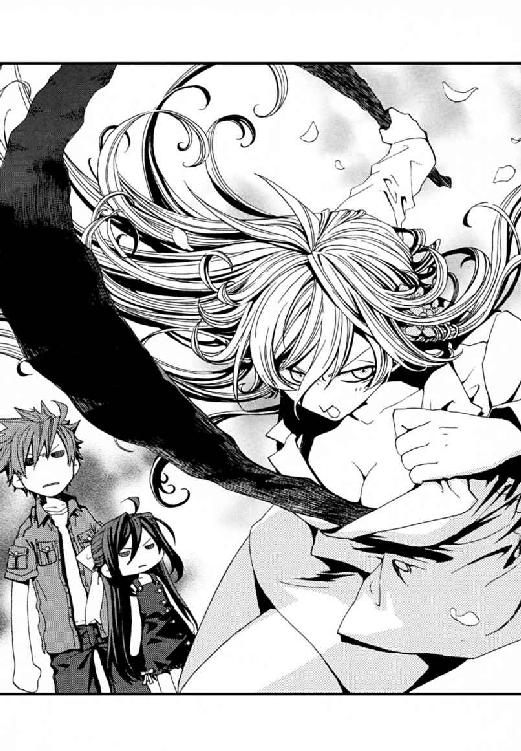
もはやどこまで真剣でどこまで冗談かもわからなかった。
そして、ノートをかかえたメイゼルが、ソファからおりたった。
「だめだわ！ ダメ！ あんたぜんぜん愛のことがわかってないわ」
そして、小学六年生の魔法使いは胸に手を当て、一喝した。
「しりとりで『り』ときたら、『りゃくだつ』に決まってるでしょ！」
おとなたちは、絶句した。
「────────略奪？」
「『愛』って、もっとドロドロした欲の、どっちが屈服するかのぶつかりあいだと思うの」
鴉木メイゼルは、この年にしてすでに嗜虐趣味者である。人の泣き顔を見るとほっぺが落ちそうになる〝本物〟だから、痛みを胸キュンとよく勘違いする。
マチルダが、おののくように十崎家の人々へ問いかけた。
「愛とは、ドロドロですか？」
ごはんの準備をはじめていたきずなが、突然話題を振られて、きゅうりを取り落とした。
「ど、ドロドロとも限らないと思うんですがっ。武原さんはどう思いますか？」
だが、仁はドロドロなおとなだから、本音は隠して道理を説けるのだ。
「天盟魔術だと、しりとりしたことばを結んだ印象が、魔法を引っ張り出すんだろ？ ドロドロなものを混ぜたら、『インマラホテプ』ってのもドロドロで現れるだろ」
十崎家の居間に、ガラス戸から夕陽が差しこんでいた。
「あたし、『愛』から呼び出されるものが世界を救ってくれるなら、気持ちの中がドロドロしすぎて相手と戦えなくしちゃうものだと思うの」
メイゼルが、すこし目を伏せた。
「絶対戦わなきゃいけないのを引き止めるのって、大スキなものがある〝欲〟でしょ？」
彼女は、子どもではなく、百人の敵を斃さねばならない刻印魔導師の顔をしていた。メイゼルは本来、バカ話に笑いあうためではなく、そのためにこの世界にいる。
「......そうか、そこまですごい欲張りになったら、かえって戦えないのか」
仁は、世界中の人々が愛憎きわまって武器を取り落とす光景を想像してみた。美しいが、胸焼けしそうなほど濃い情景だった。
マチルダが、ガラス戸の向こうの、まっ赤に染まる風景を見やった。
「──わかりました」
マチルダが、大切なものを拾いあげるように、仁の手をとった。
「こうなった以上、覚悟を決めて、ドロドロの『愛』におぼれましょう」
「そこで俺の手を自然にとるな」
「武原殿こそ、ドロドロにまさに適任のおかた！ インマラホテプをうまく召還できても、この世界の人では魔法を破壊してしまいます！ ですが武原殿は、なぜか奇蹟を砕く力を〝止める〟ことができるご様子」
そのとき、メイゼルが、駄駄っ子のように仁とマチルダの間に体をねじこんできた。
「せんせとドロドロするなら、このあたしと三角関係になるってことよ？」
「待て！......おまえ、変な話をつくるな。巫女さんひとり増えて三角関係になるなら、今もう、おまえとの間にそういう関係があるってことになるだろ──」
マチルダが感極まったように、なぜかメイゼルの両手を力強く握った。
「......さ、三角関係ッ！ ぜひやりましょう」
「俺は、やりたくないんだが......」
それまでだまっていたきずなが、こまったように仁へと微笑んだ。
「十崎さんに怒られるからですか？」
仁はむせ返った。きずなは、メイゼルのことはやさしく受け止めるが、京香のことには厳しいのだ。
彼は、この家はとっくにドロドロの修羅場だと思った。
†
仁の願いもむなしく、深夜も残業中の十崎京香は、電話口で大笑いした。
〈ドロドロしちゃったらー。もう、私が帰ったら、うちの中がぐっちゃんぐっちゃんで悲鳴あげるくらい〉
「また今日も、家は俺にまかせて退避するわけだな」
〈うん〉
仁は、京香のよそいきに昆布臭がついているサプライズは、彼女が帰宅後に悲鳴をあげられるよう、とっておくことにした。
彼にとって、昨晩はひどい夜だったが、今夜はそれ以下だ。
小学生と捨て巫女が、仁とドロドロしようと隙をうかがっているからだ。夕食のあいだも、「あたしたちを口説け」という圧迫感で食べ物の味もわからなかった。明日の朝までこれなのだと思うと、涙が出そうだった。心の底から、自宅に帰ってゆっくりしたかった。
台所で食後のデザートに果物をむきながら、きずなが、気の毒そうに彼を見た。
仁と彼女の間に一瞬かよいあった視線に気付いて、メイゼルがぽつりと言った。
「きずな。すまし顔だけど腹の中がドロドロしてる女は、こういうときどんなふうに言うの？」
「えっ、なんでわたしにそんなこと聞くの？」
果物ナイフを持つ手を止めて、律儀にきずなが答えた。
「えっと......あの......『武原さんを殺してわたしも死ぬ』とか、......そんな感じかな？」
「そう！ それ!! 今夜のうちにあたしのことスキって言わないと、せんせをころして、あたしも死ぬわ」
マチルダの表情が、闇の中で光を見つけたように輝いた。
「......愛される方法は知りませんが、そっちなら、良心に目をつぶれば」
「おまえらのことばに、ちっとも愛情を感じないんだが、それは三角関係なのか？」
すでに午後十一時──メイゼルたちの、明日までにスキって言わないと仁をころして云々が本気なら、彼の命はあと一時間である。
「今日も長椅子で寝るの？ せんせ、もうあたしたちといっしょに住んじゃったら？」
パジャマに着替えたメイゼルが、居間のソファに腰掛けた仁に声をかけてきた。
「やばいな、ちょっと俺、節度がなさすぎないか」
風呂あがりの、頭にタオルを巻いたメイゼルが、コップ一杯の牛乳を持っていた。きずなと暮らすようになってから、ちいさな魔女は牛乳をたくさん飲むようになった。
「......魔法のない世界の夜とは、寝苦しいものですね」
台所から声をかけられ、メイゼルが、口にふくんでいた牛乳をあやうく噴きかけた。現れたマチルダは、素肌に仁のシャツを着ただけで、太ももまるだしだったからだ。
「何着てんだおまえ！ ほかにいくらでも着るモノあっただろ」
「私の宗派では、巫女の服は白ければよいのです」
髪のタオルをほどいて、メイゼルが口元に押し当てる。小学生の彼女が、マチルダの夏にしても薄着すぎるシャツへうらやましそうな目を向けていた。
「私がこれを選んだのは、スキだからでも変態だからでもありません。白い薄物がこれしかなかったのです！ わかっていただけますね」
「ま、待て！ それ以上、俺に近づくな......。それはヤバイだろう！ そこでいい。それ以上はいい」
仁のあわてっぷりに、メイゼルの顔がこわばった。
「せんせ？」
メイゼルとは普通に会話していたが、彼女が身に着けているのも、パジャマと呼ぶのはもうしわけない絹製のナイトウェアだ。レースの飾りがはいった生地は、風合いのなめらかさを、少女の肌と競うようだ。それでも仁は、マチルダの、下はショーツ一枚でシャツの第三ボタンまでを開けた色気にあらがうだけで精一杯だった。
仁は、ソファから立ちあがる。もうここから逃げるべきころあいだった。
だが、居間から出ようとする仁を、メイゼルが引き止めた。そのちいさな手が、仁のごつごつした手を握っていた。
「せめて女の子として、あたしをちゃんと見て。あたしを、みじめにはさせないで」
ちいさな魔女が、夜着の下の体温が伝わるほどそばにいる。けれど、彼がメイゼルに向けられる〝愛情〟は、父親が子どもに向けるようなそれだ。男女間の〝愛情〟に切り替わるものではない。だから、時間のばしの逃げを打った。
「俺は、いちおう役人なんだけどな。恋愛は、法律にふれないようになってから、また別の機会にゆっくり考えていいんじゃないか」
なでやすい位置にある少女の頭に、彼は手をおいた。しっとりとぬれた髪が、指に引っかかって、うまくなでてやることすらできなかった。
「そんな理由で、あたしは相手にしてもらえないの？ だったら、つかまるよりももっとひどいこと、あたしがせんせにしたらどう。......もし、抱きしめてくれなかったら、せんせをころしてあたしも死ぬって言ったら、きずなにしてるみたいに興奮するの？」
ひどい脅迫だった。
なのにおどしている彼女のほうが、泣きそうな顔をしていた。
「おまえは、そんなこと絶対しないよ」
仁は、少女の華奢な肩にかかっていたバスタオルをとって、彼女の頭をふいてやった。頭皮をぬらしている水滴を、時間をかけて丁寧にぬぐってやる。その間、彼女は身動きひとつしなかった。
「せんせ、あたしたちにとっては、こんな話、めずらしいことじゃないのよ。もし、あしたで本当におしまいになるとしたら、せんせはあたしに何を言ってくれるの？」
百人の魔法使いを斃さねばならない、刻印魔導師の少女が問うた。
仁は、まだ匂いたつには幼い、長い黒髪を、すこしでも傷めずにすむようにバスタオルを押し当てる。
「......もう命はおしまいってときと、せんせにあたしがいらなくなったとき、あたしがせんせに言ったげることばは、もう決めてるの」
仁とメイゼルの関係はいつか終わる。それでも彼は、そのとき最後に何をするかより、その日が来ないよう抵抗する方法を考えたかった。
「おまえに、そんなことばを抱えてもらうより、もっと、こうさ、のびのび成長させてやるのが俺の役目だと思うんだ」
「でも、いつか、このままじゃいられなくなるんだから」
仁の胸には鈍痛が宿っていた。けれど、彼女を抱きしめられるわけでもなかった。
月明かりの下、メイゼルが瞳に切々とした熱をこめ、彼を見あげていた。仁はおとなでメイゼルは子どもだから、彼は彼女を守ろうと決めた。だが、だからこそ、体温を感じる今の三十センチの距離が、これより肌に近づくことはない。
「私は理解しました！ 『愛』を」
マチルダが、弾けるように声をあげた。
「『愛』──それは、あるがまま人を受け入れ、想いのままつながりを持ち、手をつなぐこと！」
世界をいとおしむように腕を広げた彼女は、電波巫女や、ヤマカン巫女以上のものに見えた。
「人の子らよ。憎しみもおそれも迷いも引きずったまま、引力に身をまかせましょう。私たちは、つながるようにできているのです！」
そして彼女は、こんな格好でも律儀に持っていた一本の生糸を、シャツの胸ポケットから取り出した。
「我、神殿の乙女マチルダ・クリストリッツァは、召還する。──我、はじめに、『たいき』に結線する。『きいと』」
マチルダの謡は、古い儀式の空気を残す、雰囲気あるビブラートの美声だ。〝お花畑の人〟であるマチルダがなにに行き着いたのか、仁には見当もつかなかった。
「我、重ねて、『きいと』、に結線する。『とうか』」
だが、彼女の謡には確信があった。
「我、さらに重ねて、『とうか』、に結線する。『かおり』」
ただ仁には、もしその感覚が魔法なら、そこに行き着けることがうらやましかった。仁には、マチルダのような、相手が嫌がろうが欲望のままつながってしまう芸当はできない。善悪も好き嫌いも超越した、ひとがつながる引力を『愛』と呼ぶなら、彼はそんなものを生涯手に入れられる気がしなかった。
「あ、武原さんもジュース飲みませんか？」
台所で包丁をといでいたきずなが、居間にはいってきた。手にはコップをふたつ持っている。仁のぶんも用意してくれたのだ。
「我、さらに重ねて、『かおり』、に結線する。『りかい』」
マチルダが彼女自身を指差す。意味の広い『理解』という抽象語、相当に難度が高いはずのことばを、天盟魔術は接続した。そして、そのままメイゼルを指差す。
「我、さらに重ねて、『りかい』、に結線する。『いじめっこ』」
そしてマチルダはテーブルの灰皿をつかむと、居間の片隅にあった陶器の貯金箱をぶち割った。破片と十円玉が床に飛び散り、メイゼルが声にならない悲鳴をあげた。彼女が、小銭を貯金箱に入れてくれていたようだった。
「我、さらに重ねて、『いじめっこ』、に結線する。『こうか』」
前回といい、うさんくさくなければ愛でないかのように、マチルダが硬貨を指差す。彼女自身の影を、巫女は次にとらえる。
「我、さらに重ねて、『こうか』、に結線する。『かげえ』」
そして微妙な空気になった居間で唯一笑っている、マチルダ自身の顔を指差す。
「我、さらに重ねて、『かげえ』、に結線する。『えがお』」
やり場のない怒りをくすぶらせ、メイゼルが仁の手を取った。と同時に、仁は激痛にうめいた。ちいさな魔女が、しりとり中のマチルダへ向けられないおしおきの魔法の電撃を、仁へ撃ちこんだのだ。
「我、さらに重ねて、『えがお』、に結線する。『おしおき』」
マチルダが取り出したのは、やっぱり、涙より塩辛いあいつだった。
「我、さらに重ねて、『おしおき』、に結線する。『キャビア』」
そして、ついに、『愛』の名を呼ぶ瞬間はやってくる。その発動は、魔法使いにとってすら奇蹟だ。けれど、マチルダが〝それ〟を見つけてくれていたらいいと、仁は思った。ちいさな魔女ときずなを盗み見た。少女たちも、本当にそれがあることを祈るように、熱っぽい期待を向けていた。マチルダが、息を大きく吸い込み『愛』を──。
「我、さらに重ねて、『キャビア』、に結線する。『あい』」
──仁たちのほうを、力強く指差したのだ。
そして、世界は、めくれあがるように色を変えた。目に見えない『愛』と魔法が接続された証に、天盟魔術の幻像が消えた。
だが、姿はないのに〝そこにある〟存在感だけは、間違えようがなかった。たしかな心のつながりのように、そこに何かがあった。
仁は、思わず巫女にたずねていた。
「いったいだれを指差して発動させたんだ？」
マチルダは無責任に首をかしげた。『愛』は、誰かの胸に燃えていたか、それとも十崎家のあいまいな空気のようなものがそうだったのか。
そして彼は頭が冷えると同時に叫んだ。
「待て！ そんなもんここで呼ぶな──」
マチルダが〝見えざるが確かなそれ〟を指差し、魔法を完成させた。
「我、さらに重ねて、『あい』、に結線する。......インマラホテプ！」
それは、召還に応じて現れた。
仁の瞳には映らない〝気配〟だけがあった。実体としての姿を、大魔法構造体インマラホテプは持たなかったのだ。ほのかに感覚できたのは、桃のような甘い香りだけだ。
ただ、それが存在するとわかった。目に入るものすべてが愛おしくてたまらなかったからだ。頭の中がただ『愛』でいっぱいだった。
これが、インマラホテプが、かつて天盟世界の破滅を止めた理由なのだと、仁は理解した。この魔法構造体は、人間の頭に魔法で愛情をたたきこむのだ。
「......せんせ、ちょっと、動かないで」
絹糸のように細い、魔法の糸が、メイゼルの小指に結ばれていた。──その糸は仁に、きずなに、マチルダに、無節操に結ばれていた。仁の小指にも魔法の赤い糸がからんでいて、メイゼルたち十崎家の三人の女性全員につながっていた。
マチルダが、祈る乙女のように指を組んでにじり寄ってきた。
「かくなるうえは、私も愛に生きようかとっ！ いいや、言ってくださいますな。たしかに天盟世界を救う使命を帯びはしましたがっ！ それでも、愛するものと天秤にかけることはできません！」
「おまえ、理性よわいな」
武原仁は、この世界の住民が持つ魔法消去能力を止められる、先祖がえりの悪鬼だ。だから仁は、消去能力を再起動しさえすれば、彼自身に影響している魔法は破壊できる。
彼は、魔法消去で、脳をしばる愛の魔法を砕いた。自由になると、すぐそばにいたきずなの肩をわしづかみにした。彼女のやさしい目の奥を、まっすぐに見る。
「おい！ きずなちゃん」
だが、彼女のうちに渦巻く愛を感覚などできない。だから、彼女をしばるインマラホテプの魔法を取り去ってやることもできなかった。
きずなが、仁を思い切り突き飛ばした。体の内に満ちる感情にとまどうように、パジャマの体をよじる。
「やだ......わたし、なんかやだ......」
不可視の怪物を呼び出した張本人を、仁は怒鳴りつけた。
「おい、インマラホテプの位置はどこだ！ 実体がないのか？ どうやって壊すんだ？」
「インマラホテプは〝愛〟と同じで、見えも聞こえもしません。魔法使いの体へ、直接魔法をかけるのは至難ですのに！ インマラホテプは、それを特殊な魔法で可能にし、無制限にバラまく無敵の魔法構造体なのです！ 簡単に破壊できたら、前に召還されたときも、だれかがこわしていました！ いいえ、それをこわすなんてとんでもない。生物学的に愛は四年で消えるといいますが、インマラホテプが存在すれば愛は永遠なのですよ」
ぽわわ、と、少女たちの頰があこがれに紅潮していた。「永遠の愛」ということばが、彼女たちの中の乙女成分を刺激したのだ。
「いい加減なしりとりで呼び出されたくせに、無茶なくらい強力だな！」
仁は、体勢を立て直す時間がほしくて、じりじりと後退する。
だが、メイゼルの汗ばんであたたかい手が、ぎゅっと仁のＴシャツを握った。
「......せんせ。あたしをしばって。......でないとあたしがせんせに夢でしてること全部、しちゃいそうなの」
少女の中では、愛情と破壊衝動の区別はないかのようだ。誇り高いメイゼルすら、いつもの彼女を失っていた。マチルダなど、ピンク色に染まっている。
「......大神殿でもっとも好色な神官にすら、『ハズレっぽい』と避けられた私ですが！ 愛してくださいますね」
「すまん断る」
仁は、ただひとり魔法で植えつけられる『愛』を拒絶している。だから彼ひとりが、愛情まみれの女性陣のテンションから、取り残されていた。
だが、仁はまだ、この修羅場のルールをわかっていなかったのだ。
「せんせ、言いすぎだと思うわ」
メイゼルが突然、仁に怒りだした。きずなまで、それに同調する。
「わたし、マチルダさんの気持ち、わかるよ！」
少女たちが、マチルダをなぐさめ、三人姉妹のようにむつまじく額を寄せ合う。
魔法構造体インマラホテプは、ここにいる全員を『愛情』という魔法の糸でとらえた。魔法消去でそれを逃れたのは、仁だけだ。
だから、十崎家の居間の人間関係はもはやドロドロだった。
メイゼルときずなは、たがいに愛しあう両想いだ。
きずなとマチルダも、両想い。
マチルダとメイゼルも、両想い。
魔法を砕いた仁だけが、全員から強烈な片思いをされていることになる。
「......なんだこの混沌っぷりは」
だが仁のつぶやきを、愛で結ばれた少女たちは聞いてすらいなかった。
「あたしたち、いつまでもいっしょにいるにはどうしたらいいかな？」
相談するメイゼルは、仁も見たことがないほど、よろこびと安心に満ちていた。きずなが、仁にはできなかったほどやさしく、幼い彼女を抱いてやった。マチルダが、そんなふたりをやわらかな両腕で包んでやっている。
「苦しいのですね。けれど、その気持ちは愛を知ったらみんなが感じるもので、恥ずかしいものではないのです」
「やっぱり、せんせをころしてあたしたちも死ぬしかないのかしら」
きずなが、ちょうど料理を取りに行くときみたいに、とことこ台所へ歩いて行った。
「......そうだね。包丁、ちょうど三本、といだトコだ」
「ちょっ！ それダメだろ。なんで刃物もってくるんだよ」
仁が止めるより早く、十崎家の女性たちに包丁が行き渡ってしまった。きずなが、魅せられたようにその鋭い切っ先をぼんやり眺めている。
「刃物こんな使い方するのはじめてだし、痛いのこわいけど、四人いっしょだったら、ガマンできるかな？」
「四人？ 俺、心中仲間に入ってる!?」
輪になった三人の中心へ向けて、メイゼルが包丁をつきあげた。刃がぎらりと、蛍光灯の明かりに輝いた。
きずながその上に包丁を、マチルダがさらにその上に包丁を重ねた。
ちいさなメイゼルが胸に手を当てて宣言する。
「ひとりはみんなのために！ みんなはひとりのために！」
仁ひとりがテンションについてゆけない。マチルダが包丁を天にかかげ、ムダにかっこいいポーズをとった。
「私たち片思い三銃士、生まれたところはちがっても、倒れるところはひとつ場所に！」
「なぜここで三銃士をパクる!?」
いっそ仁も魔法消去を停止して、ドロドロの『愛』に沈みこめば楽になれたのかもしれない。だが、メイゼルやきずなも抵抗できたならそうしたと、仁は知っていた。だから、仁までが、魔法でつくった『愛』に心を塗りつぶさせてはならないのだと思った。
「......流されそうになったら、それを止めてやるのも、男の甲斐性なんだろうなあ」
だから、仁は、止めていた魔法消去を発動し、奇蹟を見ることをやめた。
魔法消去の発動は、魔法使いである少女たちには一目でわかる。この力で破壊されるとき、魔法は炎のように断末魔の光をはなつせいだ。
だから少女たちには、仁が魔法消去を使った理由すら、簡単にわかるのだ。
「せんせ、インマラホテプをこわすつもりなのね？」
メイゼルが哀しそうに仁をにらんだ。仁は、夢見る子どもを起こすような罪悪感に耐えて、言いふくめる。
「あたりまえだ。俺は、自分らしさに振り回されながら、がんばってるおまえらのほうが好きなんだよ」
「せんせは、つかまえて屈服させるのがスキなのね」
「つまり裏返すと、武原殿は、自分もつかまえられて屈服させられたいのですね」
「えっ、じゃあ......武原さんをつかまえたら、片思い三銃士が、片思いではなくなる!?」
「おい。その伝言ゲーム、どんどんアタマ悪くなってるぞ」
インマラホテプを破壊しないと、朝を迎える前に死ぬと思った。
泣きそうな顔で、ちいさな魔女が仁を見あげていた。
メイゼルの手は、もう包丁を持っていなかった。だから、仁はあわてて〝魔法消去を停止〟して、もう一度魔法が見える状態に視界を戻した。
「さびしがらなくていいんだ。受け止めてやるから......ほどほどに」
仁はうめいた。包丁を捨てた右手を背中に隠して、メイゼルは魔法で電気を集めていたのだ。
この世界の人間は、魔法を破壊する能力を持つ。これは、インマラホテプがしたような、直接魔法そのものをぶつけてくる攻撃には強い。だが、魔法でモノを飛ばす攻撃を受けた場合、飛んできた〝モノ〟までは消せない。そして、メイゼルが使う魔法、円環大系は電気の制御を得意とし、電気自体は魔法ではないから耐性があるのだ。
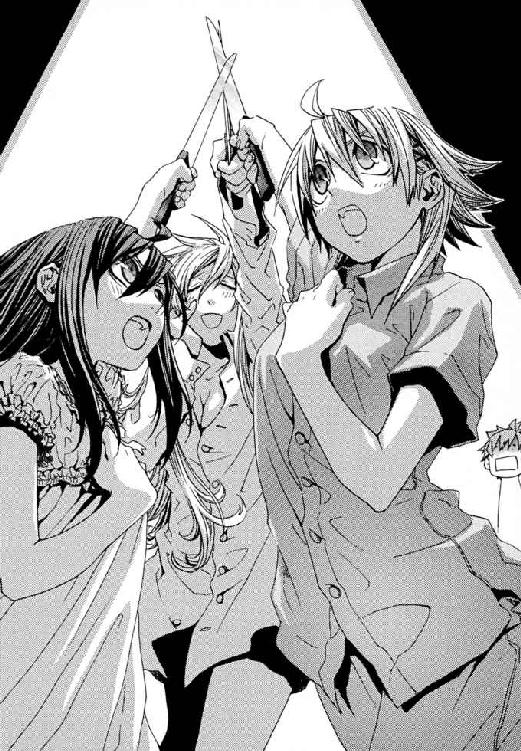
「ごめんなさい、せんせ、いけないことしてるってわかってるのに」
メイゼルが魔法で制御した電流をはなとうとした瞬間、仁も魔法消去を発動した。制御魔法がふっとび、少女の右手が感電して筋肉を突っ張らせる。
きずなが、台所から食器棚の引き出しを、ひとつまるごと抱えてきた。
「メイゼルちゃん、これ。使いたいんだよね」
仁はその中身に血の気が引いた。重そうな金属製のスプーンやフォーク、ナイフがぎっしり入っていたからだ。
メイゼルの魔法が電気をつかうとは、つまり電気と不可分な磁力も自由自在だということだ。そして、金属製のスプーンやフォークは、磁力ではじけば強力な弾丸になる。
かわいた音を立てて、スプーンが五本、たて続けに壁に突き立った。
仁は掘りごたつの上のテーブルに転がって反対側へわたり、ソファを引き倒して盾にする。
「なに考えてんだ！ こんなとこでそんなアホみたいな磁力を使ったら、家の中の機械がまたこわれるぞ！ 京香がムチャクチャ怒るぞ」
片思い三銃士の連携は、素晴らしかった。メイゼルが、仁のかくれるソファへ立て続けにフォークとバーベキュー用の鉄串を撃ちこんで穴だらけにする。彼を足止めしているのだ。
「わかってるわ！ あたしだって、あたしがこんなバカな女だなんて知らなかったもの」
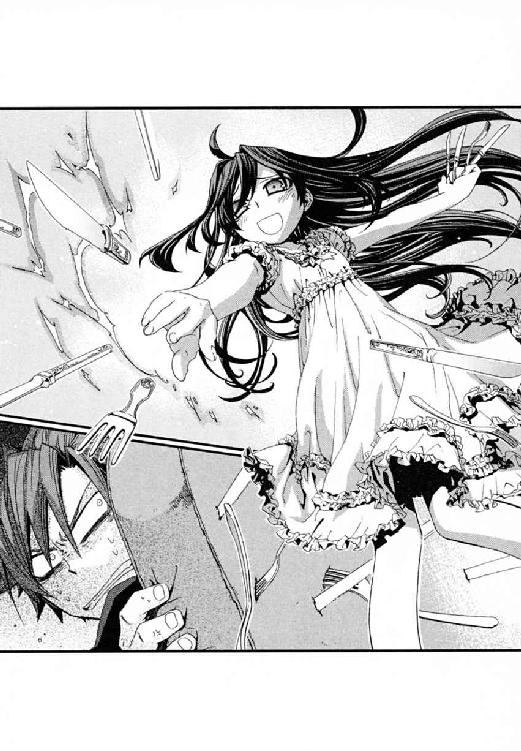
メイゼルはつらそうに、けれど暴れる感情に屈服することをよろこぶように、両手で夜着の胸をぎゅっと握る。
情愛はげしく生まれついてしまった少女が、挑むように、ソファのかげから顔を出した仁を見る。かがんだ姿勢から同じ高さで顔を合わせたメイゼルを、炎のように鮮烈だと思った。
そして彼は、今の状況に比べれば本来驚くほどのことでもない、たったひとつのことに悲鳴をあげた。
「あ、アホだろおまえ！ そんな魔法、家の中で使ったら火事になるぞ」
マチルダが、火のついた蠟燭を持っていたのだ。もちろん、天盟魔術に使うためだ。『ほのお』ということばか、『ひ』かを、しりとりの中につなぐつもりなのだ。
メイゼルも顔色を失った。
だが、メイゼルは元々、情の深さがゆえ、この家にいてくれているのだ。『愛』を捨てられない少女は、魔法で仁を釘付けにすることを止められない。
「私は、最小五手で魔法を発動します」
炎をかかげたマチルダが、彼に教えてくれた。天盟魔導師は達人ほどすくないつなぎのしりとりで奇蹟を起こす。五単語は、相当に高位の使い手だ。仁は、ちいさな魔女が飛ばすフォークを、頑丈な灰皿で受ける。彼も必死だ。
「我、神殿の乙女マチルダ・クリストリッツァは、支配する。──我、『くさり』に結線する。『りゅうすい』」
──一手。
円環魔術は、瞬発力と出力のせいで防御が難しい。だから仁は、魔法消去を停止してメイゼルの魔法を見て、出方を読んで魔法を破壊するしかない。だが、逆にマチルダの天盟魔術は魔法消去を常時発動したほうが打ち消しやすい。
つまり、メイゼルに足止めされている間、マチルダの魔法のしりとりは好き放題に進んでしまう。
「我、重ねて、『りゅうすい』、に結線する。『いえ』」
──二手。
進退きわまった仁は、あのムダに熱心だった〝戦い〟の思い出に、最後の勝機をみいだしたのだ。
「我、重ねて、『いえ』、に結線す──」
仁は、テレビのリモコンに飛びつき、スイッチを入れた。
「『えいぞう』！ 『えいぞう』だ！ 『えいぞう』！」
仁の指差すテレビの画面には、深夜テレビの映像が映っていた。それを見てしまったマチルダが頭を抱えた。
「『う』......、『う』ですか!? えー、あの『う』、『う』、ぅ......」
天盟魔導師は、しりとりをつなぐことで魔法を使う。だが、しりとりとは本来、ふたり以上でおこなうものだ。
マチルダがこの家に現れたとき、メイゼルがしようとしていたのはこれだ。天盟大系の魔法使い同士の決闘とは、しりとり勝負なのだ。
「我、『えいぞう』、よりつないで結線する。う、『うちわ』！」
──三手目。
天盟魔導師ならぬ仁が、しりとりをつないでも魔法にはならない。だが、マチルダのイメージは揺らぐ。高度な魔法は極限の集中力がいる精密作業なのだ。
仁は、すでに、押し入れのふすま紙をはがしていた。
「『わし』！」
天盟魔術で火をはなつには、『ほのお』なり『ひ』ということばをマチルダが言わねばならない。仁が『ほ』でも『ひ』でも終わらないしりとりで妨害し続ける限り、永久にマチルダの魔法は完成しない。
マチルダが、『し』ではじまるものを家の中に見つけられず、膝から崩れ落ちた。
「............武原殿、......お見事！」
†
そして、仁たちのささやかな愛の物語は終わった。
「さすがに二日も家をあけるのは」と、十崎家の家主、十崎京香が日付が変わるころ帰ってきた。家の中がドロドロならぬボロボロになっていたことで、仁は長い説教をくらった。
翌朝には、少女たちに植えつけられた『愛』も消え去った。魔法源であるインマラホテプが大騒ぎのあいだに逃げ、魔法の有効範囲から外れたのだ。魔法構造体は、感覚不能で探しようがないが魔法消去にさらされるから実害あるまいと、放置された。
マチルダは、笑顔で故郷に帰った。そして仁は、小学校でニセ教師としてはたらいた帰りに、キズだらけになった十崎家の居間を応急補修中だ。
「せんせ、結局、どうして『あい』の魔法って、発動したのかしら」
「俺もわからん。でも、マチルダは天盟魔導師だから、笑って帰れるだけのものは見えたんだろ」
メイゼルは、居間のソファの裂け目を、魔法でふさいでいる。
きずなも、責任を感じたか、台所でずっと食器を洗っていた。
「今日は、十崎さんへのおわびもこめて、ちょっと気合いを入れてごはんつくりますから。武原さんもメイゼルちゃんも、ちょっと手伝ってくれますか？」
魔法の『愛』は消えても、十崎家の団欒は明るい。
「お、これ餃子だな。皮に、具を包んだらいいのか」
仁は、彼自身に魔法で撃ちこまれた『愛』が、ここの空気に近かった事実を、今さら嚙み締めた。この十崎家の居間にいると、あたたかいものがわいてきた。愛情は説明しようもなく不可解で、魔法のような絆は、奇蹟がないはずのこの《地獄》にあふれている。
メイゼルが仁を見上げていた。
「でもせんせ、あたし、あの気持ちがあふれて止まらなかったカンジ、けっこうスキだったわ。あたしって、『成長した』ら、毎日あんなふうなのかもよ」
意味もなく、発作のように微笑が彼の顔を覆った。
それが錯覚か直感か仁にもわからない。
ただ、もし愛情が魔法なら、この世界にも魔法はあふれていると思えたのだ。
仁のアパートへ、十崎京香から荷物が送られてきたのは、九月二十日の夕方だった。
仕事を終えて学校から帰ってくると、居間に段ボールが二個とちいさなクローゼットが増えていたのだ。十崎家に居候していた時代に増えた、メイゼルの私物だった。仁には妙に気恥ずかしかった。
「メイゼルの荷物、これだけでいいのか？」
声をかけると、流し台の前から、学校から帰って私服に着替えたきずなが振り返った。
「あとは、わたしとメイゼルちゃんの部屋に、下着とかの段ボールがもう二個あります。本当に、たんすこっち置いちゃっていいんですか？」
仁のアパートの人口は、きずなとメイゼルがやってきて三人に増えた。《魔獣使い》神和瑞希が、メイゼルを荷物のように置いて帰ったのだ。ふたりっきりにしたら仁がきずなを襲うにちがいないと疑っての、監視役だ。
「気にしなくていいよ。俺のものなんてたいしてないし」
仁のニセ教師生活も変わった。《公館》の専任係官だったころは、仕事で教室を抜けることが多かった。今は普通に先生をして、早いときは夜の八時前には帰ってこられる。
窓から吹きこむ夜風は、もう夏のものではなかった。
あかるい表情で、きずなが仁を呼んだ。
「それじゃ、武原さんはなべ敷きとお茶碗おねがいします。ごはんにしますから」
夏まで、メイゼルは十崎家の台所をきずなと争い、幾多の殺人料理を作った。その彼女が、番犬役を押しつけられてからは料理をしていない。それどころか、かつて仁の妹の舞花が使っていた四畳半に引きこもっていた。
「おい、メイゼル！ メシだぞ。出てこいよ!!」
ちいさな魔女が、古いふすまの奥からやり場のない怒りを返した。
「......今日は、たべたくないわ」
鴉木メイゼルは、役立たずあつかいに相当傷付いている様子だった。
「しょうがないだろ。神和が決めたことなんだから。......誰だって、自分がしたい仕事をできるわけじゃない。こんなときだってあるさ」
仁からメイゼルの監督を引き継いだ神和瑞希は、多数の刻印魔導師をかかえている。瑞希にメイゼルが必要なのは、使い勝手のよい転移魔術がほしいときだけだ。むしろ、仁を監視することのほうがメイゼルにしかできないことだ。
だが、誇り高い少女にはその事実がもっとも許せないことだった。
たたきつけるように、少女がふすまを横に引いた。
「せんせは、あたしが戦いから外されて満足なんでしょ！ 笑いたいなら、はっきり笑えばいいわ。そんなふうにあたしの誇りを傷つけて、気持ちいいの？ それとも、悔しいのが気持ちいいって、あたしに教えこみたいの？」
「そんなつもりじゃない。ただ────」
繊細な肌をした、まだまだ子どもっぽい魔女がそこにいた。長い黒髪を振り乱すようにふすまを開けた鴉木メイゼルが、桜色の唇を引き結んでいた。
「ただ、何なの？ あたしをどうにかしたいなら迷わないで！ 自分がナニしたいかもわからないのに女の子が嫌がってるトコつつくなんて、失礼だわ」
メイゼルが、誇りでいっぱいなのにひらべったい胸に手を当て、叫んだ。彼女は、《公館》を解雇された仁と別れた。刻印魔導師の修羅道を生きることを選んだのだ。だから、小学校教師と小学生というつながりだけで、もう学校でしか出会わないはずだった。今このアパートでそばにいること自体、彼女にはばつが悪いのだ。
仁は、離れた後のメイゼルがどんな仕事をさせられているか心配だった。彼らの最後の事件である夏の核テロ事件で、戦場の地下から戻る電車の中、彼女はうつむいていた。本当に人を殺してしまったかもしれないと震えながら、痛々しいほど強がっていた。
「おまえは、焦っておとなにならなくていいんだ。どんな道を選んだって、いつでもここに帰ってきていいんだよ。おまえは、毎日いろんなものを見て成長して、生きていることを楽しんでいいんだ」
だが、自分を追いこんでしまう少女には逆効果だった。
「バカにしないで！ あたしは、刻印魔導師なのよ。楽しむためにこの世界にいるんじゃないわ」
きずなが、仁たちにまかせるのをあきらめたように、ちゃぶ台に茶碗とはしを並べていた。日々の営みは、着々と進んでいた。ハンバーグにかかったトマトソースのいいにおいが、鼻をくすぐった。
「せんせのこと、地下で戦ってたときは、ちょっとすごいなって思ったのよ。なのに、自由になったら毎日だらだらして、ちっともさえないのね」
メイゼルは、夫に不満をぶつける主婦さながら、唇をとがらせる。仁は、大それたものではなく、ただ当たり前の日常が欲しい。だが彼女には戦う理由がある。
「メイゼル、俺は──」
それでも肉と、新鮮なトマトのソースの暴力的な香りが、深刻になりきることを許してくれなかった。
「なつかしい！ この写真、内藤さんですね。内藤さんの奥さん、妊娠五ヶ月だそうですね」
エプロンを外したきずなが、写真の束をなつかしそうに見ていた。
「きずなはだまってなさい！ 今のまま続くわけないってこと、きずなにだってわかってるでしょ」
きずなが、写真を丁寧にそろえてちゃぶ台に置いた。
「メイゼルちゃん。そういう態度はないんじゃないかな」
きずなは、《公館》の職員ではなくなった仁が危険に飛びこむのに反対なのだ。
「きずな？ あんた自分の立場、本当にわかってないの？ ちょっとは自分のまわりのこと、その悪いアタマつかって考えてみるのね」
「やめろメイゼル！」
仁は、怒鳴り声で止めていた。きずなは、六十年間も滅び去ったと思われていた再演大系という魔法を受け継ぐ魔法使いだ。だからこそ六月には《協会》の宿敵たる神聖騎士団に狙われた。きずなは全部終わったと勘違いしているが、敵が彼女をあきらめる理由はない。彼女は、戦いを呼び寄せる身なのだ。
そして仁は、事件の終局で、きずなの養父──倉本慈雄を手に掛けた。きずなに、仁自身の罪も、彼女の父がすべての黒幕だったことも、話せていなかった。
彼の制止は、願いがこもりすぎていた。だから、きずなが、まぼろしから覚めたように呆然としていた。
彼はちゃぶ台の食卓についた。静かになってしまった食卓にあたたかみを取り戻したかった。
「まあ、あれだ。疑似家族でも、一家の大黒柱が実質無職じゃ雰囲気は微妙になるよな」
「え......あ、無職だなんて！ 武原さんは仕事してますよ！」
夏休み前と、九月の今では何もかもが変わった。十崎家にメイゼルときずなが居候していた頃、居間には家族のような奇妙なまとまりがあった。今日の食卓にただよっているのは、明日への不安だ。
「メシを食おう。そうしたら、ちょっとはいい考えも浮かぶんじゃないか？」
ご飯と味噌汁とハンバーグがめいめいの席の前に置かれていた。鶏と野菜の炊き合わせと、キュウリとにんじんのぬか漬けは昨晩の残りだ。
メイゼルが、食べ盛りの食欲に逆らいきれなかったか、のろくさ席についた。
いただきますを言って、ごはんを食べはじめた。
はしを使うのが上手になった魔女が、にんじんのぬか漬けをつまんで口にいれた。
「せんせは、どうしてそんなのんびりしてられるの？ もう、夏休みまでとはちがうのよ」
メイゼルが、きずなを意識してか、口調だけ無理やりあかるくした。〝変わった〟のは、仁たちの人間関係だけではなかった。核テロ事件で、テロリスト国城田義一は核爆弾を遺した。非核三原則を守る建前の日本政府が、秘密裏に処理しなければならない核だ。地下都市に住みついていた住民たちの処遇もある。不安なことだらけだった。そもそも核テロの裏で糸を引いた元専任係官、王子護ハウゼンの真のスポンサーの正体は、《協会》かもしれなかった。
「まあ、夏休み前だってたいがいだったぞ。気に病みすぎてもしかたないしな」
「メイゼルちゃん、毎日いらいらしすぎだよ」
「あたしを心配してるの？ あたしは刻印魔導師だって、何度も言ってるでしょ」
仁は、ひとつのちゃぶ台をかこむきずなとメイゼルを見た。きずなは、まだ危機の予兆など感じていない様子で、目が合うと微笑んでくれた。メイゼルは、かすかに視線をそらした。仁はこの時間を、ただいとおしいと思った。
「もし何があったとしても後悔しないように、俺は毎日をすごしたい。月並みだけどな」
今の彼が大きな戦いに巻きこまれたら、生き抜ける可能性は低かった。人は、ひとりではできないことが多すぎるから、組織をつくりそこに所属する。だが、今の仁はひとりだった。
それでも彼は、新しく身を寄せる組織を探していなかった。きずなとメイゼルがいる食卓を一日でも長く延ばしたかった。
「いつかそのときが来たら、苦しくても、俺は今を思い出すつもりだよ。ここに帰ってこられるように」
だが仁のぶちまけた感傷は、メイゼルときずなの冷たい視線で打ち返された。
「......せんせはヒキョウだわ。あたしが刻印魔導師として戦おうとしたら止めるのに、帰ってきたら子どもあつかいだし。......家族って言って、まだあたしときずなをひとまとめにしようとするし！」
「武原さんの言うことって、いっつも、いい話っぽくてもあいまいですよね」
少女たちは若かった。だから、ひとつ間違えば砕け散る関係をはっきりさせずにいられないほど、性急で潔癖だった。
「せんせ、こういう話でまとめるの、もう限界だと思うの。そろそろ、あたしときずな、どっちを選ぶのかはっきり決めるべきだわ」
「......いや、そんな生々しい話をしたかったんじゃないんだが......」
メイゼルが、きれいな指でちゃぶ台をこつこつたたいた。十崎家暮らしで、京香のくせがうつったようだった。
「せんせ、この期におよんで、なまなましくないどんな話をするつもりだったの？」
「あれだ......今日学校で何があったとか、そういう話だろ」
晩ごはんの席が、集中砲火の場になっていた。食べるとは、人間が生き物に戻る、生々しい仕事だ。そして、ひとつ屋根の下に女の子がふたり寝泊まりするという事実は、さらに生々しかった。
「せんせは、魔導師公館をクビになって、ひとりになったわ。なのに、せんせのところにきずなは来たのよ。あたしは、《魔獣使い》の命令で、せんせを見張ってるわ。なのに、〝変わる〟前みたいに、ごはん食べてるの。......せんせにだって、長く続かないってわかるでしょ？」
「問い詰めかた、京香姉ちゃんに似てきたな」
仁のほうが子どものようだった。きずなまでが容赦なかった。
「......十崎さんが送ってくれた写真、さっき見てたんですけど、ちょっと変でした。わたしと武原さんがふたりで撮った写真も、メイゼルちゃんと武原さんの写真もないんですよ。うまく言えないんですけど！ 避けられてるみたいで、なにかまちがってる気がします」
もはや十崎京香の家に居候しているのではない、〝変化〟の重さだった。きずなは選んで仁のところへ来てくれた。メイゼルも、彼女の筋をすこしだが曲げてくれていた。だが、彼は彼女たちに何も返せてはいなかった。
組織のような名目もなく、人間が気持ちだけでいっしょにいる関係は、美しいがあやうい。仁は、感情のズレから起こった破局や殺し合いをいくつも見てきた。だから、じっくり答えをさがす時間が欲しかった。
「俺は、メイゼルともきずなちゃんとも、生々しい話はできない──。けど、俺は、どんなことがあってもメイゼルのミカタだし、きずなちゃんのミカタだよ」
都合のよい話だった。だが、ウソはなかった。だからこそ、彼は、どんな反応が来るかとおびえた。晩ごはんに、誰もはしを進めていなかった。
極刑を受け、今まさに修羅道をゆくメイゼルが、重い確認をとった。
「──なにがあっても？ あたしがどんな罪でこの世界に堕とされてきてても、せんせは同じこと言えるの？」
仁は、ちいさな魔女のあめ色の瞳と、しっかり目を合わせた。
「何があってもだ。もし世界中の人が敵になっても、俺はミカタだよ。......公館をやめてひとりになった俺だからできることは、たぶん遠慮せず自分に正直な答えを出せることなんだ。話がおおきすぎて噓くさく聞こえるだろうけどな」
ちいさな魔女との距離は、確実にせばまっていた。きずなへこの約束をすることは、もはや命にかかわるほど危険だった。《公館》と社会からはみ出たからこそ、人間関係はこれまでより切実で重かった。
けれど、仁にはその〝変化〟が、いとわしくなかった。重すぎるものを預けてもらえたことが、誇らしかった。
メイゼルが、古い儀式の祭司のように厳粛に、凶器を手に取った。
「刃物出して！」
メイゼルが、子どもっぽいあこがれを瞳に燃やしていた。ちいさな魔女がハンバーグ用のナイフを、ちゃぶ台のおかずの上に突き出したのだ。
「メイゼルちゃん、これ......」
仁は、インマラホテプの魔法にしばられて《片思い三銃士》が結成された夏の日を思い出す。魔法の愛情に操られたのでもないのにバカをやるのが、しらふで酔っぱらいのマネをするみたいだった。あたたかな笑いが、腹からこみあげてきた。
「きずなも、せんせも、さっさとするのよ」
トマトソースのついたナイフが触らないよう微妙に空間をあけながら、きずなが従った。仁も、しがらみやむずかしい気持ちの問題を忘れて、にぎったナイフを突き出した。
顔を赤くして照れながら、きずなが乾杯の音頭でも取るように宣言した。
「えーと、あの、ひとりはみんなのために！ みんなはひとりのために！」
食器を使うのは、行儀が悪くきたないのだけれど、仁までなぜか泣きそうになった。
「今度は、《片思い三銃士》じゃなくて、名前は何になるんだ？」
かけがえのない、いろいろなものを失った。それでも、またここに戻って来られたことが、大きな意味があることに思えたのだ。
†
結局、《晩ごはん会議》とひねりのない名前がついた会は、雑談しながら食べ終わると閉会した。
仁とメイゼルの間に、刻印魔導師の責務という断絶は横たわったままだった。
夏から秋へと変わってゆく風景にも似て、〝変化〟は日々鮮やかだ。仁にとっては、一番慣れない変化は、休日があることだった。《公館》の専任係官は、定員十二名に対して七名しかいない。万年人手不足だから、ほとんど無休だったのだ。
休日の仁は、だからやっぱり時間を持てあました。
九月下旬の日曜日、仁はアパート脇の駐車場で、朝からずっと体を鍛えていた。屋外は動けばすぐ汗だくになる暑さだったが、それでも室内では落ち着かなかったのだ。きずなとメイゼルの私物は、舞花の使っていた部屋だけにおさまらず、居間まではみ出ていた。運動をして感覚が鋭敏になると女の子の残り香に気付いて、尻がむずむずした。
仁は、真っ昼間の青空と白い太陽を見あげた。彼が《公館》で格技教官の東郷永光にたたきこまれた訓練法は、基本の型を何千回でも反復練習することだ。ブロック塀に囲まれたこの駐車場を、仁は《公館》に関わりだした高校時代から使っていた。
組織から出ても、東郷の教えが彼の土台であることは変わらなかった。この世界の人間が魔導師と戦うときの生命線は、身体運用よりも視線や皮膚感覚だ。魔法使いが剣や槍をふるおうが、悪鬼は魔法を感覚し続けねばならない。逆に、それができれば、手の届く間合いに入った魔法使いは確実に斃せる。
仁は、砂利を踏む心地よい音を感じながら、歩法を確かめ、体幹と重心の移動を何度も試す。肘打ちに鋭く空を切らせ、呼気とともに拳で宙を突いた。《公館》を解雇されても、汗を流して鍛え続けることは変えられなかった。
メイゼルも、今日は何かを練習すると言っていた。戦いのための訓練と思えたそれに、仁は関わらせてもらえなかった。
「手の内なんて明かせるはずないでしょ？ あたしとせんせは、いつか本当に戦うかもしれないのよ」
メイゼルの妥協は、〝仕事がなければいっしょに晩ごはんを食べる〟ところまでだ。小学校では、彼らのニセ教師と生徒の関係は〝変わらない〟。だが、ちいさな魔女は時折、携帯電話で呼び出されて夜に出て行く。どこで何をしてきたか教えてくれたことはなかった。
だから、仁は、こうして歯を食いしばって訓練を積んでいた。無為に時間を使うこともこわかったのだ。核テロ事件のさなか、仁は結果的に魔導師公館を裏切った。そのことで、教官だった《鬼火》東郷に、次に会えば斬ると告げられていた。
どこまで行っても、ままならなかった。
仁は、一度閉じたまぶたを、息を長く吐きながらゆっくりと開けた。仁の武器は、魔法消去をおのが意志で停止できることだけだ。だから魔法消去を発動した彼の視界に、もはや奇蹟は一切存在しない。
だが仁は、陽光の反射が目に入った直後、眼球に走った激痛にうずくまった。
「ヤブ医者め」
八つ当たりだった。夏の核テロ事件で《魔導師》王子護と戦うため、仁は両眼をみずから切り裂いた。
仁は、激痛と微妙な視界の違和感に嘆息する。
「そういえば、つぶれた目を魔法で治すのは、さすがにはじめてだったな」
彼の目を治してくれたのは、《協会》の調整官であるベルニッチだ。魔法は、この世界の自然現象を巻きこむことで、遡行抵抗とよばれる抵抗力を持つ。だから、人間の自然な生体活動が遡行抵抗になるため、魔法で負ったケガが魔法消去で消えることはない。同じ理屈で、魔法で治癒し終えた傷口が、魔法消去で開くこともないはずだった。
仁は、迷いと恐怖を自覚しながら立ちあがり、また同じ反復訓練に戻った。仁は、ぴったり前と変わらないようなぞった型の動きの中、視界を広くとれているかチェックするため置いた目印を、見落としていた。
眼球を修復した魔法が、本当は壊れていたのではないか不安なのだ。魔法消去を発動したとき、理屈上消去をもっとも強く受けるのは、視覚の感覚器である目だ。消去は時間をさかのぼる。未来に仁自身が使った魔法消去が、過去へさかのぼって治癒魔術をゆがめたなら、視界がおかしい理屈は通った。
「何やってんだ。魔法使いの連中の技術は、わかってんだろ。信用できるだろ」
眼球がダメなら、同時期に治療した仁の右腕のガン細胞も治っていないおそれすらあった。
だが、彼にできる最良は、ただ信じることだった。
「くそっ！ 病院でも検査しただろ。検査では、何もでなかっただろ」
おびえてもしかたないとわかっていた。それなのに、修羅場から生還してしまったから、仁は命が惜しくてたまらなかった。
集中が本格的にできなくなって、仁は足下の砂利を蹴って訓練を途中で止めた。恐怖をまぎらわしたくて、尻ポケットから煙草の紙箱を引き出す。つまんだ煙草が、震えていた。
「くそ。死にたくねえなあ......。メイゼルの卒業式とか、いろいろ見なきゃなんないんだぞ」
──どこまで行っても、現実は彼の思い通りになどならない。
治してもらってしばらくは、暗くせまい地下にいたから視界が異常だと気づかなかった。仁を震わせているおびえも同じだ。昔は《公館》というせまく暗い場所にいたせいで、異常なほど生命の感覚が麻痺していた。今、仁は〝普通〟の暮らしの中で、命が惜しい〝普通〟の弱さを取り戻しつつあったのだ。
「そんなに死にたくないのですか？」
声をかけられて、仁は駐車場の入り口へ顔を向けた。
覗いている者がいるとは察していた。ただ、来訪者が誰か、予想とちがいすぎる姿を見て、かえって迷った。
白金色の猫っ毛を肩までのばした、陽光に輝くように肌が白い少女だった。服は、短すぎない本革のスカートに、袖無しの白いシャツ・ブラウスを合わせている。おとなびた装いには低すぎる背を補うように、ヒールが高い靴を履いていた。
十五歳くらいの彼女が、流ちょうな日本語で仁をさらに驚かせた。
「神聖騎士団機械化師団の上級聖騎士、リュリュ・メルルです。あれだけのことをしておきながら、まさか私がわからなかったのですか？」
仁は、甲冑をつけていないリュリュがお嬢様然としていることが意外だった。
神聖騎士団は、この世界を《真なる神》が降臨する《約束の地》だとする魔法勢力だ。夏の核テロ事件は、この聖騎士たちが核爆弾を奪われたことが発端だった。リュリュは核爆弾の警護にあたっていた、まさに夏の核テロ事件の発端を作った小隊の副隊長だった。
「何をしに来た？ 俺はもう専任係官をクビになってる。戦いたいなら、よそへ行けよ」
少女騎士が、仁を今度こそ絶句させた。
「聖騎士将軍アンゼロッタ・ユーディナが、あなたを拾ってやるとおっしゃっています」
仁は、その一瞬、ここが駐車場であることも訓練中だったことも忘れた。仁がかつて所属した《公館》と神聖騎士団は、仇敵同士だったからだ。そして同時に、ひとつの名前が彼を戦慄させた。
「《至高の人》アンゼロッタ・ユーディナか────」
アンゼロッタ・ユーディナは、わずか二十歳で聖騎士将軍にかけのぼった天才だ。そして、機械化騎士隊の機械装備を、わずか十年で実戦配備できるレベルに引き上げた現代最高の神音魔導師のひとりでもある。この世界の魔法関係者には、相似大系の《神に近き者》グレン・アザレイより知られた名だった。
仁の胸を冷やした絶望をあざけるように、リュリュが吐き捨てた。
「ここから公館本館までは、歩いて十分程度でしょう？ 私が、真昼に平服とはいえ簡単にここまで入りこめているようでは......。こんな、監視に手をまわす余裕もない死に体で聖騎士将軍アンゼロッタを迎えるのですよ。あなたたちはもうおしまいです。全滅ですよ」
彼は、鮮烈な戦火の記憶を思い出さずにいられなかった。前回の聖騎士侵攻は、三年前だった。千人規模の聖騎士が神奈川県厚木市に大量転移してきたのだ。
結果は、専任係官一名が死亡し、一名が重傷を負って引退、一名が公館を見限った。六百名いた刻印魔導師のうち生きのびたのは百九名。《協会》でベルニッチの前任だった調整官はエレオノールに討たれた。十崎京香の両親は亡くなり、《魔術師》王子護ハウゼンは《公館》を去った。これだけの大被害を、聖騎士将軍なしでこうむったのだ。
仁の全身を濡らす汗は、脂汗にかわっていた。
「神聖騎士団との大規模戦闘は、この国で何度も起こっている。三年前の大侵攻だってそうだった。終戦後すぐのときはもっとひどかったらしいな。それでも、《公館》は結局生きのびたんだよ」
仁は、思わず古巣を弁護していた。だがリュリュは、高校時代の仁自身を思い出してしまうほど追い詰められた微笑みを浮かべた。
「情報から切り離された兵士は憐れですね。《協会》と《公館》は、現在、連絡をとりあえていませんよ」
失望より先に、やはりそうかと思った。《協会》は本来、日本政府と協力関係にある魔法使い勢力だ。だが、夏頃からは、もはや関係が壊れてもよいかのように奔放に動いていた。
三年前の侵攻でも、第二次大戦直後の混沌でも、魔導師公館は《協会》と力を合わせて聖騎士と戦った。だが、何かが〝変わった〟のだ。アンゼロッタの襲来自体が、その機を突いてきたものである可能性すらあった。
「アンゼロッタ様に拾いあげられるとは、あなたは幸運な捨て犬なのですよ」
「俺を解雇する組織があれば、道具として利用したい勢力もあるくらいは考えてたよ。神聖騎士団だけは〝ない〟と思ってたけどな」
大きな壁にさえぎられたように、彼には行き先が見えなかった。だが、何をしてでもメイゼルときずなを守ってやりたかった。自由さは、今の彼の最大の武器だった。
仁の声はかすれていた。
「条件は何だ？」
ひどいウソだった。
薄汚れた気がして、彼は奥歯を嚙んだ。仁が《公館》にいたころから、ずっとあたたかな団欒は、〝変わらず〟おびやかされている。これまでは十崎京香が大事なものを守るため苦しい決定をしてくれた。ひとりになった今は、仁自身がくせ者にならねばならなかった。
「一度裏切れば、裏切り者の本能にしたがうだけですか......。さすがは王子護の系譜、恥知らずな」
仁はおとなだから、ふてぶてしい笑みを作った。彼のまわりで、裏切るつもりで節操なく握手を持ちかける人物といえば王子護ハウゼンだった。だから、嫌悪しながら、彼は記憶の中の王子護を真似ていた。
「俺が恥知らずなら、話を持ちかけてきたアンゼロッタはそれ以下だってことになるな。俺が騎士を何人殺したかわかっていて、器のおおきいことだ」
少女騎士は潔癖だった。リュリュが、かつての仁も王子護へしたように、派手に眉をゆがめた。
「うぬぼれですね。おまえに価値などあると思っているのですか」
純粋な人間を怒らせるなら、仁自身が王子護にやられたように返せばよかった。
「価値の判断をするには、おまえはまだ小娘なんだよ。どうせガキの使いなんだから、せめてちゃんと役目を果たせ」
「これは、おまえが生き残る最後のチャンスです、《沈黙》。神聖騎士団ならば、《公館》からも《協会》からも安全な場所をおまえに用意できます。メイゼル・アリューシャを助けたいのなら、アメリカへ連れこめば、日本政府も手は出せません。刻印魔導師が完全に自由なまま生き残れる可能性は、そのくらいしかないでしょう」
「俺とメイゼルの命が取引材料なら、狙いは、きずなちゃんだな」
仁の問いに、リュリュは返事を返さなかった。その無言が、真実を示していた。
「歴史をゆがめることを、まだ、あきらめていないのか」
倉本きずなの使う再演大系は、〝過去〟へ干渉する魔法だ。聖騎士たちは、四千五百年前、《バベルの塔》で神を呼び出そうとした。その失敗を、〝過去〟に干渉して成功したことに変えようとしたのが、六月のバベル事件だった。
それはまたきずなが命を狙われるということだ。この世界に神をもたらすことは聖騎士の悲願だから、歴史改変が成功すれば、かならずきずなは殺される。そうしないと、もう一度改変し直されるかもしれないからだ。
「おまえらは、俺に、きずなちゃんを裏切れって言うのか？」
聖騎士たちは仁個人ではなく、きずなを罠にはめる内通者をスカウトしに来たのだ。無理やりおとなの仕事をさせられている子どものように、リュリュの表情はいびつだった。
「私は、おまえを引き入れるなど反対です。幾多の同胞を殺し、お姉様を迷わせたおまえが生き残るなど」
九月の強い陽光の下、リュリュの白い顔を、泥のような憎しみがこわばらせていた。目の前の彼女は、かつてひとりの聖騎士を「お姉様」と呼んだ。仁にとっては、倉本きずなと出会ったバベル事件で命がけで戦った相手である、元上級聖騎士エレオノール・ナガンだ。リュリュは、嫌な仕事を引き受けてでも、エレオノールに近い赴任地にしがみついているのだ。
少女が、挑発に乗せられてしゃべりすぎたと気付いたか、強く拳をにぎった。
仁には、彼女にかけてやることばが見つからなかった。リュリュが、いつの間にか乱れていた白金色の前髪の下で、荒い息をついていた。
「お姉様には帰る場所などないというのに、どうしておまえは、のうのうと暮らしているのです」
エレオノール・ナガンは、核テロ事件の中、神聖騎士団を追放された。アンゼロッタが来日するなら、彼女も無事で済むはずがなかった。
「今日のこれは、アンゼロッタからおまえらへの、王子護たちに最初に核爆弾を奪われた罰なのか。それとも、エレオノールを救いたくておまえから志願したのか。《至高の人》は何を考えているんだ？」
「......将軍アンゼロッタは、ただあなたの前で『よろこび、笑ってくるように』と言いました。ただ、それだけです」
邪気すらなく敵も味方も踏みつぶすかのように、今度の敵は巨大で〝異質〟だった。
戦いは終わらない。
突然、仁の全身から血の気が引いた。エレオノールの状況は絶望的だが、実際には彼自身も大差ないのだ。ようやく手に入れたちいさな食卓は、あまりに無防備だった。
今の仁には、アパートが襲われれば安全に休める場所もない。身を隠し、嵐が過ぎ去るのを待つ避難所もない。
仁は、思わず駐車場からアパートを振り返っていた。リュリュが、うまくことばにできなかった気持ちがようやく伝わったような、会心の笑みを浮かべた。
「《沈黙》──。思うように生きられるつもりでいるのでしたか？」
仁はリュリュをにらみつけた。少女騎士の、彼女自身に裏切られたように不自然に泳ぐ眼に、仁のほうの息が詰まった。
「人間には限界があるのです。次は、あなたが失う番です」
彼の部屋には、今、きずなとメイゼルというふたりの少女がいっしょに暮らしてくれている。仁は、今、片方を無理やりにでも生かしたいなら、片方を捨てろと迫られていた。
「そうじゃない。俺は、どんなことがあってもメイゼルのミカタだし、きずなちゃんのミカタだ。約束したんだ」
仁の理性は、これからやってくる修羅場の中でそれは不可能だと、冷酷に告げた。
平穏な時間は、彼がおそれていたより過酷なかたちで終わる。仁は、組織の助けもなく絶望的な戦場に吞みこまれる。彼のそばには倉本きずながいるからだ。再演魔導師である彼女を利用して、神聖騎士団はまだ歴史の書き換えを狙っている。
守りきれるのかと自問した。それが男の甲斐性だと、《鬼火》なら言うだろう。遠くないうちに、仁と決着をつけに来るだろう武人は。
「アンゼロッタに伝えろ。俺は、大切なものを売ったりはしない」
「そうですか。では、次に出会うときは、遠慮無く──」
そして、リュリュは、きびすを返して立ち去った。
立ち去り際、ほっと気をゆるめた少女の頰のまるみは、笑顔が似合いそうにやわらかかった。だが、次に出会うときは戦場だ。そして、そこで仁と、メイゼルより二歳か三歳年上なだけのリュリュは殺し合う。
駐車場にひとり取り残されて、仁まで泣きそうになった。変革のときを前に、ただ空は高く、人間味など拒絶して青く広がっていた。
武原仁は、はじめて小学校の教室に来たとき、教室のせまさと黒板のちいささに驚いた。おとなとして教壇に立つ彼には、小学校はまるでちいさないきものの国だった。
〈後期生徒会役員選挙──〉
黒板に仁が書いた学級会の議題を前に、私立御陵甲小学校の六年一組の児童たちが、熱のこもった議論をくり広げていた。活発を通りこして、教室は大荒れだった。
「このあたしが、どうしてセイトカイチョウになりたいかわからないって、みんなしてそう言うのね？」
さわぎの中心は、漆黒の髪に赤いリボンを結んだ、浮世離れしてかわいらしい少女だ。鴉木メイゼルは、背は低いがクラスで一番目立つ。教室には小学六年生が三十六人いるが、ことばでも雰囲気でも、男子より女子のほうが自己主張がはげしい。体のおおきな子どももいれば、おとなへの途上の者もいる。そしてごく少数だが、得体の知れない〝少女〟という妖精めいた空気を帯びる者がいる。メイゼルという〝少女〟は、肌はなめらかで、その立ち姿は不吉さすら感じるほど端整だ。
「──なら、あたしから聞いたげるわ」
メイゼルが、あめ色の瞳でクラスメイトを射すくめた。そして、ちょっと舌足らずに、お姫様のように浮世離れした口調で問うた。
「どうして小学校にはいって、あんたたちは小学校のテッペンをめざさないの？」
六年一組を、あきらめのような納得が包んだ。
日曜日に、仁のアパートのそばまで敵が入り込んだ。それ以来、思うところがあるのか、メイゼルは日々を惜しむように小学校の暮らしを満喫していた。今日などは学級会がはじまるなり、選挙に出ると言い出した。生徒会選挙は九月最終週の金曜日だ。投票日まであと二週間しかない。いきなり降って湧いためんどうごとに、クラスの面々は逃げ腰だった。
副担任である仁は、教室の隅に座って学級会を見守っていた。場をしきっているのは学級委員の寒川紀子だ。彼女は、銀縁眼鏡とひいでた額がよく目立つ、まじめさがにじむような優等生だ。きっちりしたおとなへの道を歩む寒川が、眼鏡の位置を直しながら眉を寄せた。
「六年生は、このくらいの時期になったら私立中学の受験勉強があるんだよ。選挙っぽいことしなくても、役員はなんとなく決まるんだし」
寒川が、日本に不慣れなメイゼルへ、小学校の風習を教えてやっていた。
「後期の生徒会選挙は、だいたい毎年こういう盛りあがらないかんじだよ」
だが、そもそもメイゼルは、日本の小学校というものをまだ理解していなかった。
「弱気な敵をたたきつぶすだけで、ここのテッペンに立てるってことでしょ？ どうして征服しようと思わないの？」
彼女の考え方がズレていることには理由がある。鴉木メイゼルは、日本人どころかこの世界の人間ですらないのだ。
ほとんど知られてはいないが、この世界には大昔から、異世界人の魔法使いが数多くおとずれている。そして魔法使いたちの間には、罪人をこの世界へ追放し、百人の敵を斃すまで自由をうばう重罰がある。鴉木メイゼルは、罰を受けてこの世界へ堕とされた魔法使いなのである。
そして仁は、《公館》と呼ばれる政府機関にいたころ、メイゼルを監督するために小学校へ送りこまれた。《公館》を解雇されても、教職免許もないニセ教師なことは変わらないから、仁も正しい対処がわからなかった。
「あのな、テッペンって言っても、生徒会の仕事って、権力とか一切ないぞ。まずは、終業式みたいな式典であいさつをすることだろ。あとは、図書委員とか保健委員とか、風紀委員とか、各委員会の委員長を集めて生徒会会議をひらくときの議長な。それから、その会議の結果を発表するために、《生徒会だより》って壁新聞を作ること。そんだけだぞ」
仁とメイゼルは、いくつもの苦闘をこえてきた戦友のようなものだ。だが、彼には、いまだにこのちいさな魔女が何を考えているかわからない。
「鴉木はなんで生徒会長になりたいんだ？ まさか、一番上っぽいからなんて理由〝だけ〟じゃないだろうな」
生徒自治的なおもしろさも権力もない名誉職のようなものだ。立候補する児童すらほとんどいないだけの理由があるのだ。
だが彼女は、上品なチェック柄のワンピースの、リボンをあしらった胸元に手を当てて言い切った。
「せんせは、もっとよくあたしのことを見るべきだわ。あたしが何を考えてるかわからないって、せんせにとって、本当にはずかしいことなのよ？」
仁は、ときどき教室で心臓が止まりそうになる。魔法使いのことや仁がニセ教師であることがバレてはならないのに、ちいさな魔女は彼を振り回す。
「先生は、あぶなっかしくて鴉木のことたいがい見てるけど、それは永遠の謎っぽいな」
仁の全身から汗がふきだしてきた。彼にとって、ちいさな魔女は、生徒であり守ってやる対象だ。だが、メイゼルにとっての仁は、おさない愛情を向ける恋愛対象なのだ。
「せんせ、あたしはいつだってどこでだって、なりたいあたしになるの。あたしには、セイトカイチョウになって、やりたいことだってあるのよ」
小学六年生としては立派すぎるほど、彼女の答えは自信に満ちていた。
「あたしは、みんなにアメ玉みたいに甘いものや、いつもどおりの毎日をあげたいんじゃないわ。みんなに苦しみをあげたくて、セイトカイチョウになるのよ」
裏のある名言ふうだが、実際に裏はない。メイゼルは、人の泣き顔を見るのが大好きな嗜虐趣味者なのだ。
呆然とした寒川紀子から、ぽろりと本音がのぞいた。
「............最低の理由で生徒会長をめざす人がいたよ」
クラスメイトはメイゼルの変態嗜好が不治の病だと認識していた。だから、関わり合いになりたくなさそうに、みんなが教壇から目をそらした。
つまり先生である仁に判断は託されることになる。
たしかにそれは、虎を野に放つようなものだった。だが生徒会選挙自体が、民主主義の基本を学ぶ教育なのだ。公平に見て、選挙を通じて人と接することは、メイゼルが人付き合いを学ぶよい機会だとも思えた。目前までせまった聖騎士将軍アンゼロッタの到来の前に、平穏な日常の思い出を作ってやりたくもあった。このメイゼルが当選することはまずないという、いやらしい読みもあった。
だから仁は、六年一組のみんなとメイゼルの間の、妥協点をとったのだ。
「やりたくない人を無理に引っ張りこんだりしないこと──それだけをみんなに約束するなら、止めはしない。思いっきりやってみろ。みんなもそれでいいな？」
ぱっと少女の表情が、あかるく輝いた。
「それでこそ、せんせだわ」
†
かくてちいさな魔女は、小学校の頂点を目指した。
六年一組のクラスメイトは、ほぼ全員おのれの良心や連帯感と相談した結果、逃げた。だが、ほぼ全員とは、巻きこまれた人間もいるということだ。放課後、さっそく行われた選挙の作戦会議に集まったのは、メイゼル自身を入れて三人だけだった。
「鴉木さんには、親しみやすさがたりないと思います！」
学級委員の寒川紀子は、メイゼルの選挙活動に吸収された。面倒見のよさのせいだ。
「親しみやすさがあったら、スキになってもらえるの？ それ、どこからうばってくればいいの？」
「親しみやすさはこう、......自分の内側からにじみでてくるもので......」
仁は、放課後のほほえましい悪だくみを、教壇で日誌をつけながらながめる。秋の夕方のまっ赤な太陽が、何もかもがおさなくつたない彼女たちを照らしていた。
「何ヶ月も誰かのことを大スキって想い続けたって、かんじんの相手には伝わらないものよ。スキになってもらうのってそんなカンタンじゃないわ」
「鴉木さんはやりかたが悪いんです。人に好きになってもらえる理由って、どういうものかって考えるんです」
「......利害関係、かしら」
異世界人だからという以前に、メイゼルと寒川紀子の生きかたはかみ合わない。
「なんでそうなるんですか！ 人に親切にするんです。人に親切にしていたら、めぐりめぐってかならず自分に戻ってくるんです」
「あたしは六年生でこの学校にきたのよ。ここで一年生からやってきた敵に、人付き合いで戦っても効率が悪いわ」
寒川は、子どもらしい善意を全否定されてカチンときたようだった。
「敵ってなんですか？」
作戦会議のメンバーであるもうひとりの少女が、メモ帳から顔をあげた。仁にはおもしろそうだから加わったとしか思えない、天瑞岬だ。
「敵は──速水志保。六年二組。成績優秀。運動神経抜群。六年生に入ってからだけで、五人の男子に告白されています」
「あ、速水さん出るんだ......」
寒川が、納得したようにつぶやくと、メイゼルをあらためて見直した。
「あんた、何か言いたそうね」
そして黒髪のメイゼルはくるりと教壇の仁をにらんだ。
「その速水って子のこと、せんせはどう思うの？」
突然、話を振られて、見守っているつもりだった仁はうろたえた。
「ああ、いいんじゃないか。速水は、いかにも生徒会長向きっぽいな」
メイゼルが、明らかにおもしろくない様子で作戦会議に戻った。
「ああ──」
恋する少女が突っ伏すと、長い髪が机にばさりと広がった。
「なにもかも......征服しちゃいたいわ」
†
この世界をおとずれている魔法使いは数多い。だが、魔法が実在することは知られていない。それは、六十億人以上いる人類ほぼ全員に、観測した魔法を破壊する特殊な力があるせいだ。
この世界の人間が破壊した魔法は、光のかたちでばらまかれる。この断片は炎のようなオレンジ色の火の粉として放散するため《魔炎》と呼ばれる。そしてメイゼルたちには太陽の下でも見違えようのない魔炎すら、この世界の住民の目には映らない。
魔法使いのメイゼルと、知らずに魔法を破壊する学校の他のクラスメイトは、ちがう世界を見ている。
だからメイゼルは、放課後、人目を盗むように体育倉庫の扉を開けた。魔法を使う人間がいなければ現れない《魔炎》が、体育倉庫からあがっていたからだ。
「あんた、魔法使いでしょ？ あたしを呼び出すんなら方法をかえたほうがいいわ。この学校で魔炎が見えるのは、あたしだけじゃないのよ」
しみこんだ汗が長い年月で発酵したような体育倉庫独特のにおいが、少女の鼻の奥をついた。子どもが生き物としてもつ臭気の中、そいつは静かに待っていた。体操用のマットと跳び箱を背に、ボールのかごを注意深くよけてポーズを決めていた。先生たちに見つかれば騒ぎになる、小学校にいてはいけない種類のおとなだった。
そのあやしいおとなが、くぐもった声をあげた。──顔の下半分をかくした黒いガスマスクの下からだ。
「おこまりのようだな、メイゼル・アリューシャ」
ぴしりと着こなした軍服とガスマスクのせいで、まともな人間には見えなかった。金髪の後ろ髪を刈りあげ、細身の体でぴしりと背を伸ばしている。身長は一三〇センチメートル台のメイゼルより頭ひとつ大きい程度だ。
「さよなら。変態はもう間に合ってるわ」
メイゼルは、迷わず体育倉庫の扉を閉めた。
「待て！ ワタシは変態ではない！ ただの犬だ！ さあ、犬とご主人様の、楽しい話をしようじゃないか」
ガスマスクをはめたおとなが、扉を開けてメイゼルのワンピースにすがりついてきた。
「なんでこのあたしが、そんなもの顔につけた変態のご主人様にならなきゃいけないの？ あたしは今、いそがしいのよ！」
彼女にとって、犬と呼んでくれと身を投げ出す者など、犬のウンコよりも踏む価値がない。だが、見るからに空気の読めないそれは、得意げに呼ばわったのだ。
「まあ待てご主人──このワタシが変態だと思っているのだな。そうでないと証明してみせよう」
軍服の魔法使いがガスマスクを外した。その下から現れたのは、口紅を引いた大きな唇だった。男性ではなく、体育倉庫の変態は性的な特徴がない女性だったのだ。
「......賢猟大系？」
魔法世界には、感覚した嗅覚と味覚から奇蹟を引き出す《賢猟大系》という魔法が存在する。この大系の魔導師は、精密ににおいと味を感覚せねば魔法を使えない。だが、嗅覚や味覚は、生物のもっとも原始的な感覚であり、魔法使い自身の体すらもが臭いを出して精密な感覚を狂わせる。だから、感覚に余計な色をつけないために余分な臭いを遮断する。メイゼルにも、ようやくガスマスクの理由が理解できた。
「──どうだ、ご主人。安心したか」
「あんたはたしかに女で、賢猟魔導師ね。でも、小学校に忍びこんで『犬と呼んでくれ』なんてたのむの、魔法と関係ないでしょ」
〝犬〟は答えに詰まっていた。つまり、犬と呼んでほしいのは性癖ということだった。
「やっぱり変態じゃない。あたしの足に踏まれたいの、この変態！」
「ちいさきアリューシャよ。わが望みをかなえてほしい。飢えることなく平穏に守られたこの地を、あなたが治めてほしい。そしてワタシを犬としてここで飼ってほしいのだ！」
涙目の彼女にせまられて、嗜虐的な少女が、欲望をこらえるようにぎゅっとこぶしをにぎった。
「さがりなさい！ 今、あんたをぶったりののしったりしたら、あたしはきっとカンタンに気持ちよくなれるわ。でも、あたしは、きれいで強いものが屈服する最高の〝味〟をあじわいたいの。お手軽に手に入るものに舌を慣らすなんて、ぞっとするわ！」
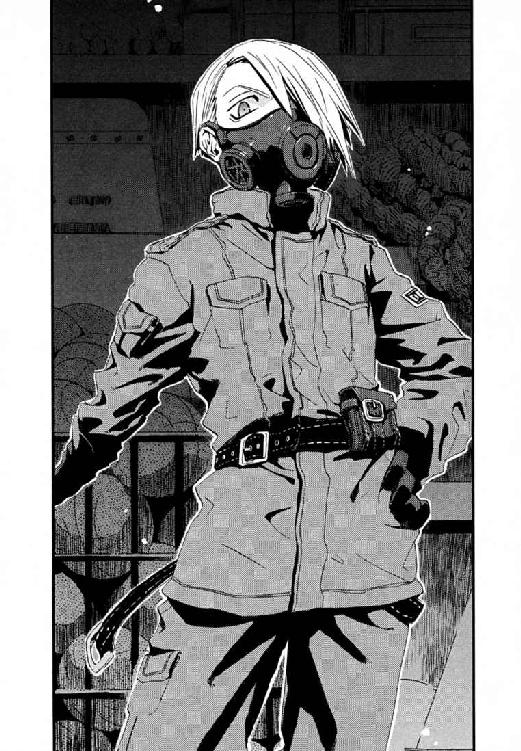
ジャンクフード呼ばわりされた彼女は、だが反抗するどころかメイゼルへ賞賛の視線を向けた。魔法使いの世界は、強者が弱者を踏みにじる超シンプルなタテ社会だ。一度序列がつけば、そうそうひっくり返らないのだ。
「............それでこそご主人！ 王者はそうでなければならぬ!!」
夕暮れの職員室から運動場を横切って人がかけてきた。メイゼルの〝せんせ〟である武原仁だ。
知らず、少女の肩からほっと力が抜けていた。軍服の魔女のほうは、仁の接近を見ると体育倉庫の奥へと身をひるがえした。
「名乗っておこう。ワタシの名は、《砂の猟犬》瀬利ニガッタ。故郷の世界では密偵としてはたらき、裏切りのすえ堕とされた罪人だ」
そして、マスクをはずすとやわらかかった地声を残して、ニガッタは消えた。体育倉庫の臭いを吸いこんで、その臭いで発動させた魔法的転移でどこかへ飛んだのだ。《賢猟大系》の魔法使いは、臭いの記憶をたよりに関わり深い場所へと転移する。体育倉庫のすっぱい臭いがニガッタの何につながっているのかはわからない。
「おい！ メイゼル、大丈夫か」
不審なおとなが小学校の中にいると気付いたのだろう。血相を変えてやって来た仁が、迷わず扉をあけて奥を覗きこんだ。そこにもう《砂の猟犬》ニガッタの姿はなかった。
「ダメな犬がいただけよ。本当にあんなダメな犬、はじめて。せんせは、ぜったいあんなふうになっちゃダメよ」
†
立候補を告げた次の日から、メイゼルは、仁も見たことがないほど愛想がよくなった。低学年の子にも、同学年の児童にも、教師にも、あいさつをするようになったのだ。それはもう選挙のための、ほれぼれするほどの営業っぷりだ。
校舎一階にある職員室の窓からは、朝の元気に登校する児童たちがよく見えた。
生徒会長候補者は結局ふたりだけで、六年二組の速水志保とメイゼルの一騎打ちになった。二組の速水志保は、職員室でも名前をよく聞く優等生だ。そして、選挙戦の先手を打つように、速水志保たちは校門で活動をはじめていた。
しかもひとりではない。取り巻きが四人も、朝から《速水志保をよろしくおねがいします》と書いた手作りのたすきをかけていた。風紀委員と並んで、速水と取り巻きは、登校する児童たちにあいさつをしていたのだ。
速水は、秋らしい色合いの、品のよいブラウスとスカート姿だった。目鼻立ちのしっかりしたはなやかな顔立ちで、眉毛だけがすこしやさしい、六年二組でも目立つ存在である。美容院で微妙に校則違反のパーマをかけて、茶色い髪はふわふわだった。
六年一組の正式な担任である祖師堂先生は、速水の動きに感心していた。
「すごいアピールですね、速水さん。また突然にぎやかになっちゃって」
速水は、メイゼルとちがってクラスメイトの協力をとりつけているのだ。仁も職員室の教師たちも、その子どもたちの活発さをよろこんでいた。
職員室の先生方も、メイゼル参戦にこっそり盛りあがっていたのだ。
「鴉木はどうなんですか、武原先生。このままだと押されっぱなしですよ。まともにいくと人望と信用のある速水のほうが圧倒的に有利ですしなあ」
しかも、先生方の意見は正しいだけに微妙にひどかった。
「速水は、六年二組の全面協力態勢ですって。鴉木の味方が寒川と天瑞だけなのがたよりないですよ。武原先生、どうにかなりませんか？」
仁は、それは俺に言うなという叫びを腹に吞みこみつつ頭をかく。問題が起こったときのことを考えると、胃が重くなってきた。もちろん、そのときはメイゼルの立候補を許可した仁が職員会議で問い詰められるのだ。
「俺は、あと十日ほど何事もなく、選挙がすんでくれるだけで満足ですよ」
だが仁をふくめて教師一同は、メイゼルの爆発力を甘く見ていたのだ。
メイゼルは、姫君のように着かざって朝の校門に現れた。
おめかしなどというレベルではない。まっ赤なドレスを身にまとい、レースの長手袋をはめて彼女はやってきたのだ。ドレスに似合わないランドセルを放棄して、手に持っているのはハンドバッグひとつだ。小学生らしいところは、もはや律儀に胸につけた名札だけだ。
姫様の登校に、風紀委員の児童たちがどよめいた。
男の子たちは圧倒され、女の子たちはすなおな低学年の子たちを中心におおよろこびだ。速水陣営の女子たちが、遠目にわかるほどむっとしていた。同じ絵面の中にいると、たすきをかけた速水たちが明らかにかっこ悪いからだ。
職員室の先生方が、予想外すぎるモノを前にかたまっていた。そして、視線が仁へと集中した。
「............あれはなんですか、武原先生」
胃に穴があきそうだった。
「......俺に言われましてもなんとも」
だんだん、仁が職員室に居づらい空気になりつつあった。六年一組の担任である祖師堂先生が、他の先生方に聞こえないように小声で言ってきた。
「武原先生、行かなくていいんですか？」
「......あ！ 俺、危なそうなんでちょっと行ってきます」
仁は、がんばってと拳をにぎる祖師堂先生に見送られて職員室を飛び出した。メイゼルを守るためではない。ちいさな魔女は、わかりやすい敵が出てくると燃えるタイプなのだ。
彼が校門へたどりつく直前に、女子児童同士の戦いははじまっていた。
小学生にとって年の差はおおきい。メイゼルたち六年生は、小学校の中では一番年上なのだ。まわりの下級生たちは、成長した体のおおきな六年生がモメているおかげでみんなおびえてしまっていた。
取り巻きの野暮ったい女の子四人の中心で、速水志保が気取った仕草でメイゼルを挑発する。
「あら、気合いを入れたようですが、小学校にドレスはドギツイのではなくて？」
速水は、ふたつの失策をおかした。ひとつは、メイゼルたち魔法使いたちにとっては、とある理由で英語が最低の侮蔑語であること。そしてメイゼルは、こういう泥をなすりつけあうようなやりとりが、むしろ大好物なことだ。
「ふさわしい場所をあらそうには、それなりのよそおいがあるべきだと思うの。......あんたが地味なのよ」
「地味......ですって？」
一般的には地味ではありえないふわふわパーマの速水が、ぎりぎりと奥歯を嚙んだ。それでも自分自身が安く見えないよう怒りをおしとどめるのは、あっぱれではあった。小学校の選挙戦なのである。所詮、健全な子どもの選挙だ。人生がかかっているおとなの選挙とはわけがちがう。
だが、やっちゃった感全開のドレス姿で、その飾った胸元に手を当ててメイゼルが言い切ったのだ。
「あんたも取り返しのつかないものをささげたら？ 選挙に負けて、昨日までと同じ生活ができるつもり？」
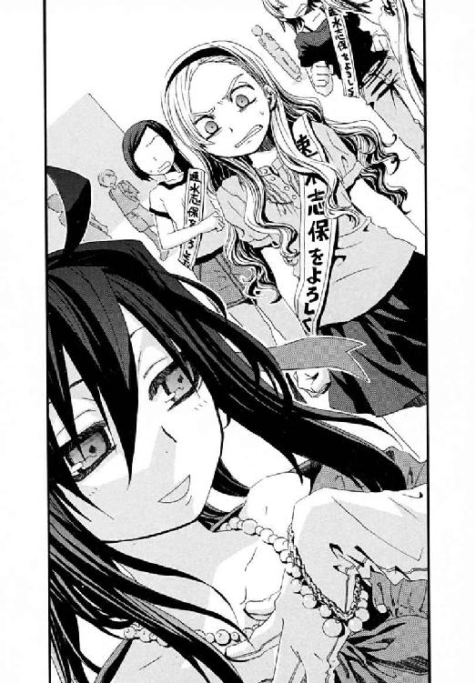
おのが生命と全存在を掛札にして、ばくちを打つ人間はすくない。だが、鴉木メイゼルは、まさにその太く短いタイプだった。
「あたし、選挙が終わるまで、毎日こんなかっこうで学校に来るわ。ここにいる誰だってあたしが目について、あたしの名前が覚えられるように」
メイゼルと速水志保は、初対面かもしれないのに百年のカタキのようににらみあった。速水が、髪をばさりと翻して振り返った。そしてようやく教師である仁に気付いて、怒りで紅潮した顔のままぺこりと会釈をした。
「それじゃ、鴉木さん。選挙で正々堂々と戦いましょう」
それは、メイゼルを選挙でこてんぱんにたたきのめすという宣言だった。
「あら、あたしひとりに、取り巻きそんなにひきつれても今日はにげるんだ？ なさけない『正々堂々』ね」
「ンだぁ、こら」
速水の取り巻きが、メイゼルにのせられてガラの悪い怒声をあげた。その腕を、速水が乱暴に引っ張った。
「速水さん！ 鴉木こいつシメないとダメですって」
六年二組一同が、まだ頭がはたらいている速水に引きずられて校舎へ戻ってゆく。茶色の髪のお嬢様も、もちろん冷静ではない。子ども同士だから感情をかくすのが誰もうまくなかった。
メイゼルも、興奮していたのかさっさと校舎へ帰っていってしまった。
取り残された仁に、こわがって泣きそうな下級生たちをおさめる技倆はない。
「............えーと、あのな......。おまえたちはこんな六年生にはなるなよ。これは悪い見本だからな」
もちろんメイゼルは、その日の放課後、生徒指導室へ呼び出しになった。
仁が待つ指導室にまっ赤なドレス姿で現れたちいさな魔女は、堂々としたものだった。
「おまえ、学校にその服はないだろ」
頭を抱え気味の仁へ、赤の似合う姫君は言いきった。
「だって学校は、演説もさせてくれないし、貼り紙とかもダメなのよ。あの速水って子とどっちが生徒会長にふさわしいか勝負をつけることだって、認めてくれなかったわ。あたしのこと、学校中に知らせないと選挙にならないのに、手段を選んでどうするの？」
メイゼルが魔法使いであることは秘密だ。だから、メイゼルはこれまで他の児童とさほど付き合いがなかった。だから、ちいさな魔女の言うことにも一理はあった。
「おまえな、選挙だって勉強のひとつなんだぞ？ 勝つか負けるかより、なにを学ぶかのほうが大事なんだぞ」
「あたしがどんな人間だかわかりやすくするには、カッコから入るべきだと思うの」
メイゼルには、学校には学生らしい格好で来るという常識がそもそもない。鴉木メイゼルは、この世界の常識が通じない魔法使いであり異世界人なのだ。
「たしかにうちは私服でたいがい自由だけど、限度があるだろ」
「せんせは、あたしが意味もなくこんなカッコをしてると思ってるの？」
ちいさな淑女が、ドレスの真紅と日焼けした肌の対比が見事な胸に手をあてた。
「あの速水って子たち、本当は恥ずかしいのをこらえて、あんなシュミの悪いたすきをしてたのよ？──そんなとき、あたしがかわいらしく着かざってたら、ぞくぞくするくらいくやしくなれると思うの」
大嵐がくる予感がした。仁は、これから選挙戦が本当の意味で悲惨なものになる確信に、心で泣いた。
「おい、あのな......小学校の生徒会って、そういうもんじゃないんだぞ。おまえに生徒会長の仕事、立候補のとき教えたよな。生徒会会議の議長とか、式典でのあいさつとか、生徒会だよりを作ったりとか......」
「生徒のてっぺんでもそんな仕事しかないのは、押さえつけられてるってことよ。今までだれも戦わなかったってことだと思うの」
「おまえは、生徒会長を、部族会議で選ばれた族長と勘違いしていないか？」
だが遊牧民の族長候補のごとく、勇ましくメイゼルは言い切ったのだ。
「〝敵〟のすがたをみんなの前にさらけ出させないと、戦えないわ。そのためには、だれかが目立つ〝マト〟になるべきじゃないかしら？ あたしのことをこわがって押さえつけようとする相手がいたら、それが本当の敵なのよ」
メイゼルは、異世界人という〝異物〟だ。そして、異物と秩序がぶつかれば火花があがる。燃え移れば火事にだってなる。仁は、メイゼルを選挙というあらそいに解きはなったことが、大冒険だったことを悟った。
「おまえ、これ学校行事だからな」
だがメイゼルは、こまっている仁を見ると興奮する嗜虐趣味者なのだ。しっぽを振っている犬の頭をなでたくてしかたないように、少女がくすぐったそうに身をよじっていた。
「ごめんなさい、せんせ。......あたし、こういうの大スキみたい」
†
ドレスで登校事件から、メイゼルと速水陣営の対立は激化した。
メイゼルの悪口を、速水の友だちが陰で言いふらしはじめたのだ。選挙で対立候補を非難することはもちろん禁止だ。だが、やめろと言って止むならいじめだって簡単に根絶できる。メイゼルの普段の言動から、十分に考えられた展開ではあった。そしてちいさな魔女は、学校中の人間が彼女の名前を覚えて興味を持つよう着かざり続けた。
週明けの月曜日には、状況は御陵甲小学校の選挙史上最悪の泥沼まで悪化していた。金曜日が体育館での立ち会い演説会で、その後すぐに生徒会長選挙の投票だ。
メイゼル陣営の選挙戦は、地力の差を反映して苦しいものとなっていた。
事件が起こったのはそんなときだった。
その壁新聞は、校舎入り口の靴箱に近い目立つ場所に、朝一番で貼られていた。文字がまったくない、模造紙に大量の写真を貼っただけのしろものだ。問題はその中身だった。
五十枚ほどもの速水志保の写真。それも、まったく本人が撮られたことに気づいていない盗撮だったのだ。
天瑞岬が、その写真を一枚一枚チェックしてメモをとっていた。
「写真をとった人の愛情が見えるいい写真です。焼き増しして配ったら、速水さんの印象がよくなるでしょう」
壁新聞のまわりには人だかりができていた。仁は、彼の腰か胸までしか背がない小学生たちをかきわける。
「おーい、みんな。これ、もう剝がすから教室にもどれ」
職員室で、この壁新聞をとりあえず剝がすことが決まった。ここ数日、学校中で上履きやたて笛がなくなる事件が頻発して、職員室でも問題になっているからだ。
「せんせーい！ この写真、鴉木さんたちがとったんじゃないんですか？」
六年二組の生徒がさわぎはじめていた。だが、それはありえなかった。
「常識で考えて無理だろ。鴉木にこんな何十枚も写真なんか撮られてたら、速水も気付くだろ」
登校してきた寒川紀子も、ランドセルを背負ったまま謎の盗撮魔の写真に感心していた。
「鴉木さんなわけないよね。なんか、速水さんに愛情かんじるくらいすっごくかわいく撮れてるもんね」
仁も、寒川たちの感想に同意だった。写真は、デジタルカメラで撮影して上質の用紙にプリントアウトしたものだ。レンズやカメラにもこだわりがあったか、発色もよいしピントも完璧だ。速水志保は、いつものお嬢様然とした気の強い顔とはうってかわって、やわらかい表情を見せていた。なんといっても雨降りだった昨日、捨てられた子犬にえさをやっている写真が白眉だった。じゃれついた子犬とたわむれる速水は、本当に無邪気ないい笑顔をしていたのだ。
だが、本当に毎日ドレス姿のメイゼルはそれを前にくやしそうに奥歯をかんだ。背中まである黒髪が湿気のせいでまとまらなかったか、めずらしくポニーテールだ。
メイゼルの不機嫌が伝わったか、さざなみだつように、
「うわっ！ アギがきた」
「こないだ六年二組の岩永が瞬殺されたって、剣道部の」
「アギさんこええ。四年の食中毒も、アギさんの悪口を言ったからのろわれたって」
子どもっぽいウワサにもりあがりながら、下級生が上履きを鳴らして逃げていった。小学校では、教師にすらドレス登校を止められないメイゼルは、近づくのもあぶない劇物あつかいなのだ。たしかに有名にはなったが、すでに怪物か悪い魔女よばわりだった。
学級委員の寒川紀子が、先の見えた戦いに力を落としかけていた。
「どうやったら勝てるのかな。っていうか、この選挙、勝ってもいいのかな」
選挙戦は、メイゼルの人となりが知られるにつれて支持がさがるせいで、お通夜ムードだった。
「武力制圧でもしないと不可能です」
書きこんだノートをめくって、天瑞岬がずいと仁たちの前に突き出した。《アンケート『鴉木メイゼルが生徒会長になったらどんな学校になると思うか』》と書かれた、生徒百人に直当たりで聞いて回った労作だ。一位は『学校がムチャクチャになる』。二位は『学校が自由になる』。三位は『当選は無理』、以下『今より悪くなる』『寒川さんがかわいそう』『鴉木さんがこわい』の順に続いている。
天瑞は楽しそうだった。まじめな寒川は、当選してしまった可能性を想像したか、沈んでいた。
「............暗黒時代だ」
そして、他に人がいなくなっても、仁が壁新聞をはがすのを、メイゼルたちは後ろでながめ続けた。
「......あたし、だれにでもしっぽをふる駄犬って、キライだわ」
メイゼルが、輝くような笑顔をした速水の写真をすねたように見おろした。
「たとえばよ？ 飼えってあたしにたのみに来た犬が、たのみもしないのにこんな写真を何十枚もとったとしてよ？ それ、なにか言いたいことでもあるのかしら」
仁としても、知っておかねば不安だった。メイゼルは、体育倉庫で誰かに会っていた。だが、そのことを彼女は仁にも秘密にしているのだ。
「おまえ、これ撮ったやつに心当たりあるのか」
「犬の世話をすることと、犬を屈服させる主人になることはちがうのよ？ こんなふうに犬とあそぶ速水って子には、飼育委員とかがふさわしいわ。てっぺんって、もっと殺伐としたものだもの。血の赤がにあう人間だけが、てっぺんにふさわしいのよ」
もちろん、この日々戦場を忘れない彼女のこころがまえは、下級生におそれられている。
「......類は友を呼ぶ」
天瑞のひとことで、一同が沈黙した。しばらくして、仁は、「メイゼルの類の友」は写真を盗撮した変態であって彼自身ではないと思い当たった。
「──たしかに犬と遊んでるとこ、愛情がなかったら十枚も撮る必要ないしなあ。どこでこんな変態と知り合ったんだ？」
寒川も、これこれと身を乗り出しながら、写真のできばえに感心していた。もちろん寒川も、自分がメイゼルの「類は友」だと思っている様子はない。
「このへんとか、いい表情だよね。学校で見るのとぜんぜんちがうし」
速水の評価がうなぎのぼりにあがるのが、メイゼルには面白くないようだった。
「どういう意味だったかはどうでもいいの！ 必要なのは、この写真を見た子たちを、どうやって後悔するくらい苦しめてあげられるかでしょ？」
一瞬、寒川の眼鏡の奥の目が死んでいた。どうしてこんなことに関わったのかと後悔しているのが、仁には手に取るようにわかった。
メイゼルが、子犬の写真を壁新聞から無造作にはがした。
「そうだわ。この子犬はどうなったの？」
「あ、そういえばこの犬しってる。速水さんが、二組で里親さがしてた」
「なにそれ、いいやつじゃない！」
仁も、メイゼルの教育方針をまちがえたかと頭をかかえた。
だがメイゼルは、無邪気な姫君のように微笑んだ。
「まあ、いいわ。待ち遠しいと思わない？ あたし、この学校の何もかもがいとおしいの。だって、選挙が終わったら、あの子たちもあたしにさからう子たちも、みんなあたしのものなのよ」
メイゼルは、まだ族長選挙か何かとかんちがいしていた。少女の、戦いに気分が昂った後ろ姿が教室へと遠ざかる。寒川の半開きの口から、魂が抜けていた。
仁は、いっしょにいてくれる寒川や天瑞にメイゼルがどう見えているのか、さすがに心配になった。
「ところでおまえら自身は、もしもメイゼルが選挙に勝ったら、どんな生徒会長になると思うんだ？」
「歴史にたとえるなら──」
天瑞が、ぽつりと返した。
「マリー・アントワネットのような生徒会長になるかと」
革命が起こるらしかった。
†
その日の放課後、メイゼルは夕暮れの体育倉庫にいた。《砂の猟犬》ニガッタが、なぜか体育倉庫にばかり現れるからだ。
メイゼルは、赤く染まった体育館の扉を開けた。その奥の暗がりでは、今日も軍服にガスマスクのニガッタが、ダメな感じにかっこいいポーズをつけていた。
「あんた一体何のつもり？」
メイゼルも、盗撮がニガッタのしわざだと気付いていた。それを秘密にしたのは、目の前で腹を見せて服従している犬を、踏みつぶすのをためらったせいだ。
だがニガッタは空気を読まずにマスクを外し、くっきり跡のついた顔でほめられるのを待っていた。
「見てくれたかご主人！ なかなかのできばえだろう。血のにじむような練習をかさねたのだぞ」
「このポンコツ犬！ あたしはそんなことやれなんて言ってないし、あの子の評判ばっかりあがってるじゃないの？」
本物の捨て犬を見つけた速水の話は美談になっていた。だが、メイゼルの人語を理解し主人の野望にしっぽを振る犬は、美談にほど遠い。
「ワタシは真実をさらけ出しただけ......うぁ......何をするご主人！ 写真は、被写体の、真実を写し出すだけで、......あの輝きは......彼女本人の......蹴るな！ もうゆるしてくれご主人！」
「このあたしの真実とやらも、写してみなさい！」
ニガッタが、蹴られたすねを押さえてうずくまったまま、体育倉庫のボールかごに手を伸ばした。そして、一眼レフのデジタルカメラを手に取った。
「いいぞご主人。その表情、マニアにばか受けだ」
ファインダーをのぞきこんで、ニガッタがシャッターを切る。フラッシュがたかれて、体育倉庫がまっ白な強い光に照らされた。写真を撮られること自体はまんざらでもないメイゼルの勢いが止まる。
「あんたの下品な口のききかたにオシオキするかは、写真を見てから決めたげるわ」
嗜虐的な少女は、この変態を泣かせてやりたい誘惑を、拳をにぎってこらえた。
そして、メイゼルは、夕暮れの運動場を帰って行く児童たちの姿と、陰の中のニガッタを見比べる。
「それとあんた、別の倉庫っぽいとこ見つけたげたから、そこにすみかえなさい。こないだ、大掃除のときにちょっと見たの。ここの体育館の三階が、用具置き場になってて、そっちには人がこないわ。こんな目立つとこで、せんせたちにつかまったら笑えないでしょ」
〝犬〟ニガッタが、しっぽをぶんぶん振るかわりに、敬礼をした。
「ふふふ......このワタシにふさわしい犬小屋をくれるというのか。さすがはご主人」
メイゼルは、ため息をついた。この生徒会長選挙で学校に何か残せたらよいと思った。彼女にとっては、故郷の世界に戻れないからこその、代償行為なのかもしれなかった。それでも、彼女は今この場でできることをやらずにいられなかったのだ。
「あたしのいた円環世界には、小学校なんてなかったわ。だから、ここで〝普通に暮らす〟ってどういうことかわからないの。──でも、スキなの。あたしにとって特別な場所は、ふさわしいくらい、あたしでいっぱいにしたいの」
メイゼルは、あまりに平和な小学校をぼんやり眺める。かつて彼女は名門の姫君だった。だからこそ、こんな子どもばかりの、おとなの決まりごとが通じない奇妙な世界を知らない。
「あたし、戦いがしたいわ。あたしにしかできないことって、何かを勝ち取ったげることだと思うのよ。だから、ぶんどるものを持っている〝敵〟が必要なの」
おとなの世界で戦いの日常を生きるメイゼルだからこそ、小学校になじみきれなかった。だが、ここに通いはじめたころとは何かが変わった気がした。
「待っているがいい。このワタシが、ご主人をふさわしい場所へと導こう。ワタシにふさわしい犬小屋を与えたようにな！」
†
速水志保の壁新聞事件の翌日、入魂の一枚の写真が、昨日と同じ下駄箱のそばに貼り出されていた。
写真はポスターのように引きのばされた大きなパネルだった。
モチーフは、ドレス姿のメイゼルの上半身だ。肌を上気させ、目の焦点が興奮で微妙に合っていない。唇をあでやかな笑顔にも似た怒りの表情に吊り上げていた。
誰もがそのパネルの前に立つと圧倒的な迫力にことばを失った。だが、その背中に鳥肌が立つ感覚の意味を知るには、小学生はおさなすぎた。
そのかわり、早々に写真がはがされてきた職員室では、メイゼルのポスターはばか受けだった。教頭や教務主任まで、写真のできばえに感嘆していた。
「こりゃすごいですな！」
「ちょっとしたグラビア並みですね」
世間をどう広げるかという俗な問題からは、仁たちおとなだって自由ではない。一時間目の授業がはじまる前の、朝の職員室で、仁は期待のこもった先生方の視線にさらされていた。
御陵甲小学校の教師たちは、メイゼルの立候補に好意的だ。生徒会長選挙も学校行事なのだ。何事もないよりは、盛りあがったほうが教育にはなる。職員室の隅で、また別の声があがった。
「鴉木のドレスも、基本的に速水のあいさつ作戦と同じで顔とイメージを売ってるんですな。誤解もされてますが、あれは目立つ」
たしかに、妖精めいたメイゼルは、背こそ低いが遠目でもぱっとわかるほど華やかだった。
だが男性教師たちの声に、六年三組の担任の高橋昌子先生は辛辣だった。
「美人は得ですか？ 鴉木さんは、ドレスのことも生徒指導を無視しているようですし、どういうつもりなんでしょうか、祖師堂先生、武原先生！」
いらだっている女性教師を、ベテラン教師がまあまあとなだめる。
「そのドレスのおかげでですね、高橋先生。生徒会選挙に投票できない低学年の児童が、生徒会活動に興味を持っているんですわ。『お姫様みたい』なんだとか──。鴉木は、あれで低学年の児童とよく話してやっているし、がんばってるんじゃないですか？」
職員たちも今の段階ではおもしろがっていた。教師たちには、小学生という子どもの票を〝おとなの政治論理〟で集めようとしているメイゼルの浮きっぷりが、よく見えている。生徒会長当選はないから安全だと思っているのだ。
「最近、後期の生徒会選挙は無風でしたし、金曜の立ち会い演説会が楽しみですな」
話を振られて、仁はこわばった笑い顔を作った。
「......え、ああ、やってみるのはいい経験になるんじゃないですか」
だが仁は、まず勝ち目がないことに、むしろ嫌な予感がしていた。ちいさな魔女は、絶望的な勝負をひっくり返すためにきっと何かやらかすからだ。
──そして、メイゼルがやらかしたとき責任を取るべきは、許可を出した仁なのである。
「がんばってくださいね」
担任の祖師堂しづか先生が、のぞきこんできた。
「うちのクラスの担任は祖師堂先生なので、そこは『がんばってください』ではなく『いっしょにがんばろう』とかではないかと......」
「武原先生、がんばってくださいね」
祖師堂先生は泥船には乗らなかった。担任である彼女は逃げられないのだが、ぎりぎりまで抵抗するつもりのようだった。
朝の職員会議がはじまろうとしていた。
「──それでは、ここしばらく続いている児童の持ち物盗難についてですが────」
そして、学校中をまきこんだ緊迫した空気は、ついに選挙終盤になっても回復しなかった。生徒会役員選挙と立ち会い演説会は、明日にせまっていた。
メイゼルの選挙運動の具合ははかばかしくない。六年生を中心に流れているメイゼルへの陰口もじわじわきいていた。
「いいや待て、メイゼルが暴発するとは限らないだろ」
仁は、児童がいなくなった放課後の教室で、自分に必死で言い聞かせた。六年一組の教室を監視するように、二組の生徒が交替で廊下を行ったり来たりしている。速水の取り巻きの女子から体のおおきな男子まで動員して、まさに爆発寸前だった。
「鴉木さんはどうしたんですかー？ 教室にいないんですかー？ オレの上ばきなくなったんですけどー、〝敵〟だから鴉木さんが取ったんじゃないんですかー？」
二組の男子の荒い声が廊下からかけられた。メイゼルが「実行力ある指導者をみんなが求めるようになるには、〝敵〟が必要なのよ」などと公言しているせいだ。
ちいさな魔女は、利害関係と情念しか人間を動かすものを知らない。そんなおとなの世界ばかり見るメイゼルを、仁たちは小学校という子どもの世界に送りこんだ。その彼女が、今ではここに何かを残したいと渇仰していた。その〝変化〟が、仁には奇蹟に思えた。
「鴉木さんはどこへ行ったんですかー？」
仁は、立ちあがった。そろそろ子どもっぽい妨害をやめさせるころあいに思えたからだ。
「明日が選挙だからな。おまえらもそろそろ帰れ」
メイゼルが、体育倉庫にかくれていたのだろう魔法使いについて話してくれないのも気にかかった。例の壁新聞を貼った犯人もまだわかっていない。靴箱での靴など、ちいさなものの盗難は確実に続いていた。
だが、悪いことばかりではなかった。
「どけよ！」
廊下で二組の男子たちと、聞き覚えのある声が押し合いをはじめたのだ。六年一組の児童の声だ。それもひとりやふたりではない。十人近くの児童が、廊下に戻ってきていた。
「陰口ばっかり言いやがって」
クラスでは調子のよい人気者である兵藤直樹の声だ。「そうじゃん」「そうだ」「そうだよ」と、勢いづいて一組のみんなの声があがる。
「二組だろ！ 二組に帰れよ！」
体を押されたか、入り口に重いものがドンとたたきつけられた。扉にはまったガラスが、びりびりと割れそうに響いた。
そして扉が引き開けられて、教室へとあふれるように子どもたちがはいってきた。
先頭に立っていたのは、丸刈りの背の高いスポーツ少年、兵藤直樹だ。
このために外に出ていたのか、眼鏡の奥の目をまっ赤にした寒川がそれに続いた。
「先生！ これ！」
寒川たちが広げたものは、白い布に《メイゼルがんばれ》と大書された横断幕だった。ひどくこっぱずかしくて、仁の胸もなぜか熱くなった。興奮で頭がうかされて、彼自身何を言っているかわからなくなっていた。
「すごいな、これ、みんなで作ったのか？」
六年一組の有志十人が、ちょっと得意げに仁を見あげた。手作り感あふれる横断幕のそこかしこに、クラスみんなの寄せ書きのように、メッセージが書き込まれていた。《清き一票をおねがいします》と、女の子たちの手によるかわいらしい装飾文字が書き添えられていた。
「クラスのやつが陰口言われてるのにオレたちが見捨てたら、なんかオレらもあいつらと同じだろ」
メイゼルが陰口をたたかれているのを見かねて、みんな立ちあがってくれたのだ。そう思うと、仁もテンションがおかしくなってきた。
「ありがとうな。なんか、すごいなおまえら」
やることをやって、それが評価を受けると、またよいことをしたくなる。そうやってどんどん雰囲気がよくなることが、確かにある。
兵藤直樹とサッカー仲間たちが、メイゼルとときどきはしゃべる女子たちが、顔を見合わせた。
「先生、あしたの立ち会い演説会、オレたちも応援しようと思うんだ」
「......わたしも」
保健委員の佐藤泉実が、恥ずかしそうに大きな布をかかえていた。
「ありがとう、みんな......本当にありがとう」
苦労しどおしだった寒川紀子が涙ぐんでいた。
そして、メイゼル立候補のときはそっぽを向いたクラスの仲間たちが、ようやく一丸になった。
「............それが、悲劇のはじまりだとは、そのときはだれも気付かなかったのです」
ぽつりと、天瑞岬がつぶやいた。
†
そして次の日──。
立ち会い演説会は、金曜日の午後の授業をつぶして行われた。
生徒会選挙は、四年生以上の上級生だけが投票権を持っている。昼休みが終わって五時間目になると、児童たちはクラスごとに体育館に集まって生徒会役員候補の演説を聴く。これが生徒会選挙の中心である立ち会い演説会だ。
これが終わると児童たちは教室に戻り、先生の指導のもと投票用紙を集めるのだ。集められた票は、教務の先生が立ち合いのもと、前生徒会のメンバーによって開票される。結果が出ると、全校放送で新しい生徒会役員が発表されるのである。
だから、選挙運動が盛りあがっただけに、昼休みのうちから児童たちが体育館に集まっていた。おお、とどよめきが起こったのは、メイゼルが体育館に登場したときだ。
彼女が派手なドレス姿だったからだ。彼女のことを笑ってやろうと待ちかまえていた一部の女子生徒すら息を吞んだ。ドレスを普段着にしている本物の姫君の気品が、今日のメイゼルにはあった。
「あら、みんなそろって今日も恥ずかしいカッコね。とっても、おにあいだわ」
メイゼルが、速水陣営の女子たちに嫌みなほど品よく微笑んで見せた。最後のひとがんばりにたすきをかけて来た女子たちが、本番で口げんかをする醜態をさらせず歯がみする。悪い姫様イメージが定着しているメイゼルはやりたい放題だ。
「本人はいないのね。オトモダチにこんな恥ずかしいことさせて、どこかで見て楽しんでるのかしら？ あんたたち、そのたすき裏返してよく見せてみなさい。人様の前でおおっぴらにできないような恥ずかしいことばが書いてあるんでしょ？」
もちろん考えての挑発ではなく、メイゼルが嗜虐趣味なだけだ。ちいさな魔女は、この選挙ですくなくとも悪役として成長した。
仁は、それも今日で一段落だと感慨深く体育館の様子をながめる。担任の祖師堂先生がかけてきた。そして教師席のパイプ椅子に座っていた仁へと耳打ちしたのだ。
「武原先生、速水志保が見つからないらしいんですが？」
「もうすぐ来るでしょう。まさか、選挙妨害でさらわれたりとか考えてるんですか？」
「そんなバカバカしいことがあったら鼻でたてぶえ吹いてあげますから、武原先生も手伝ってくださいよ......」
御陵甲小学校の体育館は、児童たちが集まっている板張りの広いスペースと、一番奥にしつらえられた一メートルほど高い舞台に分かれている。舞台の両わきが放送機材などを置く控え室で、舞台へはここから階段であがるのだ。生徒会役員の候補者も、この控え室から舞台にのぼり、中央の演壇で五分間の演説をするのである。
生徒会役員候補は、立ち会い演説会が進むとともに、書記候補、副会長候補、会長候補と順にこのわきの控え室へと呼ばれる。体育館には、バスケットゴールのすこし上くらいの高さの、外壁をなぞる通路状の細い二階がある。仁が見あげると、六年一組のみんなが、二階の鉄柵に横断幕をかけていた。《メイゼルがんばれ》と揺れていた。
「体育館にはまだ来てないですね、二階にはいませんよ」
「武原先生、面倒だから逃げようとか思ってませんか？」
体育館には二階ばかりか三階もある。三階はちょうど舞台の真上の屋根裏部屋で、これも控え室から、二階へ行くのとは別のちいさな階段からあがるのだ。ちなみにここは、ときどき小動物が出るので女性教員に不評だ。
〈これより、生徒会後期選挙の立ち会い演説会をはじめます〉
体育館に、スピーカーからアナウンスが響いた。整列していた児童たちが、がやがやと私語をしながら腰をおろして三角座りで待つ。祖師堂先生が、六年一組のほうへと行ってしまった。振り返って、祖師堂先生ががんばってと拳をぐっとにぎった。
「私はクラスを見てますから、武原先生はおねがいしますよ！」
だが、事態は時間とともに深刻になった。立ち会い演説会が進み、書記候補の児童の演説が終わっても、生徒会長候補の速水志保が体育館に現れなかったからだ。そして、副会長候補の演説が終われば、次はもう会長候補の番だった。
仁たち教師が学校中を捜しているが、それでも速水は発見されていない。昼休みに六年二組の友だちと給食の酢豚を食べていたのが、最後に目撃された彼女の姿だった。
小学生同士の選挙戦におとなの犯罪の臭いが混じっているようで、ひどく鼻についた。だからこそ、教師たちの間には危機感が共有された。おかげで、体育館の中にはほとんど教師が残っていない異常事態だった。
〈続いては、生徒会長候補者の演説にうつります。六年二組、速水志保さんの演説です──〉
仁が校舎をひとめぐりして戻ってくると、もう生徒会長候補の演説だった。速水志保は、まだ体育館に現れていなかった。
表向きだけ平静に、粛々と立ち会い演説会は進んでいた。だが、それも限界だった。速水がいなくては、演説はできない。
「待ってください！ 演説はかわりに私たちがやります」
六年二組から、たすきをかけたクラスメイトが立ちあがったのだ。手作りの横断幕と模造紙を持って、六年二組全員が演壇へ向かった。それは素晴らしいクラスの団結力、速水の人望のあらわれだった。
そして体育館の舞台に、二組三十五人の生徒たちがあがった。演壇の後ろには、速水の盗撮写真が貼られた壁新聞が本人のかわりに貼られた。雨の中、捨て犬をひろっている妙に好感度の高い写真である。
〈私たち六年二組のなかまが、生徒会長候補の速水志保さんにかわってこの立ち会い演説会でお話をします──────〉
仁は、はじまった演説を聴きながら、ふと気付いた。背の順で並んでいる六年一組の列の、一番前にいるはずのメイゼルが姿を消していた。
ゴトンと、演壇にかたい音が響いた。
その音は六年二組全員がのぼった舞台が騒がしすぎて、体育館の児童や教師たちの注意を引くことはなかった。
ただ、訓練された仁の耳は、物音の位置を舞台の天井だと割り出した。舞台の上は、体育館の用具置き場になっている三階スペースだ。ここは、立ち会い演説会で使われていない。
速水志保が現れず、メイゼルが消え、そして無人のはずの三階から音がした。
つまりそこを捜すべきだということだった。仁には、経験上こういうマネをするのは〝魔法使い〟だという確信があった。
教員のほとんど出払ってしまった体育館では、控え室もガラガラだった。だから、控え室の細い階段から三階へのぼる仁を、見とがめる者はなかった。
金属製のドアを開けた。
──そこは小学校の中にあるべからざる混沌だった。
小さな窓から、雑然とした物置に陽光が差していた。どこもかしこもホコリだらけで、布が腐ったような臭いの空気を吸うたびむせそうになった。
軍服姿でガスマスクをはめた怪人がいた。まっ赤なドレスのメイゼルがいた。そして、きれいなワンピースでおめかしした速水志保が、ぐったりと力を失い倒れていた。
この〝魔法使い〟が速水志保をさらったということだ。
仁は、後ろ手にドアを閉めていた。
「......なんだこの犯罪くさい状況は？」
「せ、せんせ！ これはちがうのよ!? あたしたちはこの子をさらってきたわけじゃなくて──」
慌てるメイゼルを横目に、ガスマスクのおとながくぐもった声をあげた。
「ふはははははははっ！ おそかったな、《沈黙》！ 我らがこの地に築く新秩序のため、この娘にはしばらく眠ってもらっているのだ!!」
《沈黙》は魔法使いが仁を呼ぶふたつ名だ。仁は、舞台の天井裏の物置を確認した。
速水志保が、まっ白なホコリの積もった床に手足を投げ出し横たわっていた。
そして、仁が何度目をこすっても、ガスマスクで顔をかくしたおとなが立っていた。高笑いをあげ、変なポーズを決めていた。
メイゼルの両手は、ホコリをきらってスカートの裾をつまみあげるのにふさがっている。だから、身振りに気合いをこめられず困っていた。
「せんせ、あたし、さすがにこれはしないわ！ あたしがやったなら、ちゃんとこの子を起こして、せっかくやってきた選挙活動がムダになるとこ見せつけてるはずでしょ！」
「ごめん、その微妙なこだわり、先生にはわからないな」
仁は、現状をおさめるため、するべきことを頭の中で振り分けた。最優先事項は、速水をこの用具置き場の外で発見してもらい、学校の先生たちの混乱をおさめることだ。魔法使いの存在がバレたら、《公館》を解雇された今の仁には対処しきれない。
メイゼルと軍服ガスマスクの魔法使いをどうするかは、次の問題だった。
「おい、そこの変質者。おまえ、変態だから魔法使いだろ。いったい何者だ」
空気の読めない魔法使いが大声をあげる。
「ふははははは！ 見ず知らずの人間をいきなり変態よばわりとは、野蛮な悪鬼め」
「おまえが今回のマジカルびっくり魔法人間だな？」
「ふはははは！ 《沈黙》敗れたり！ びっくりはともかくマジカルと魔法は同じ意味だ!!」
──ごす。
仁は、思わず歩み寄って、ガスマスクの顔面へ拳をたたきこんでしまっていた。
「ぶったね！ 体罰にうったえたね！」
「だまれ。おまえは俺の生徒じゃない」
殴られないと思っていたか、ガスマスク魔導師が頰を押さえてうずくまった。涙目で仁を見あげてきた。
「ワタシの名は、《砂の猟犬》瀬利ニガッタ！ この地は、ご主人と、犬であるワタシのものら......あ、歯が！ 折れた、ワタシの永久歯が!?」
ニガッタがガスマスクを顔からひきはがし、かたそうなものを口から吐いた。本当に永久歯だった。口をぬぐったニガッタの唇から頰へ、乱れた口紅の赤が広がった。仁は今はじめてニガッタが女性だと気付いて、思いっきりぶん殴ったのが申し訳なくなった。
「......おまえ賢猟大系か」
ニガッタに限らず、賢猟大系の魔導師は自分の口や鼻を清潔に保つことに執心する。臭いと味で魔法を発動する賢猟大系の魔導師には、ガスマスクはそうめずらしい装備ではなかったのだ。
そしてニガッタが吼える。
「だが発見されたところで、《沈黙》、貴様をたおせばよいだけの話！ 悪いがこの地はワタシたちがもらう」
短髪の魔女が軍服の前を、引きちぎるようにはだけた。ぼろぼろと、いかにも犯罪くさく、上履きやたてぶえが転がり落ちた。
「おまっ、学校でくつとか盗んでたのはおまえか！」
「ふふふ、新しい場所へ征けば、まずは臭いと味をためすが賢猟魔導師の習性！」
「あんたまさかそれ全部────？ 寄らないでこの変態！」
メイゼルがどん引きしていた。ニガッタは、みずから感じたにおいと味とで奇蹟を引き出す魔法使いだ。だから、彼女の服から落ちた上ばきやたてぶえも、ダメな感じにお試し済みなのだ。
「我々の世界における大魔導師とは、精神力が強い者でなければならない──。そう、強力な魔法につながる〝味〟を犬のウ○コが持っていたら、それを迷わず口の中に入れるのが大魔導師であり強者だ」
仁も、この世のあらゆるものをぱくぱくと口に入れる大魔導師を想像してしまった。
「............犬のウ○コって、うまいのか？」
だが仁の質問は、ニガッタの深いこころの傷を刺激したようだった。
「魔法使いがみんなラクに魔法使ってると思うな！」
ニガッタは涙目だった。
「......いや、なんか悪いこと聞いた」
「あたし、もうすぐ自分の演説の番がはじまるっていうのに、わざわざこの子を取り返しに来たのよ？ そういうとこ完全に無視するのはひどいと思うの」
†
そのころ三階の真下の舞台では、メイゼルも現れず、また代理の演説者を立てる異常事態になっていた。演壇に立ったのは、学級委員の寒川紀子だ。
速水志保ほど人望はないので、演壇にあがったのは寒川ひとりだ。天瑞岬が、速水応援団が壁新聞を演壇の後ろに貼ったのをまねて、模造紙大の写真を持ってきた。写真の中では、これからいじめてやるとばかりに嗜虐的に、ドレス姿のメイゼルが頰を染め瞳をうるませていた。
「なんでその写真！」
寒川の声を押し殺した悲鳴を無視して、天瑞岬が親指をぐっと立てる。そして、彼女ひとりを残して、さっさと舞台袖のカーテンの陰に戻ってしまった。
今、寒川紀子の背後では、巨大なメイゼルの写真が体育館の生徒たちを見おろしていた。舞台袖では、天瑞岬が無表情に『実行力』のスローガンをかかげる。下級生があきらかにおびえていた。代理演説は、まるで独裁者をたたえる集会のようだった。
「あっ！ あ──っ！ 鴉木さんの代理で演説をつとめさせていただきます、六年一組学級委員の寒川紀子です」
第一声から、無惨な金切り声になっていた。
「全校生徒のみなさんは、後ろの席の子から授業中にリボンで縛られたことがありますか？ ......ごめんなさい。今のは忘れてください......」
寒川は、体育館の生徒たちの視線を浴びて、息もできなくなった。いっそ、ごめんなさいとあやまって演壇をおりようかと、ポスターをはがそうと振り返った。
──こわい笑顔の鴉木メイゼルが、模造紙サイズに引き伸ばした写真の中から彼女を見おろしていた。
失敗したら、寒川は、ポスターと同じ嗜虐的な微笑みのメイゼルに六年一組の教室で出会うのだ。腹が痛くなって、顔中に脂汗が浮かんだ。寒川紀子は、十一歳にして、生涯初のストレス性の胃痛を経験していた。
「全校生徒のみなさんは、鴉木さんとこんな機会でなければ出会うことはないと思います。............ですが、私の席は鴉木さんのすぐ前なんです......。待ってください！ 今からほめますからっ！」
†
仁も、あまりに犯罪くさかった用具置き場の衝撃から抜け出した。この薄暗い三階にメイゼルがいてはいけなかった。
「そうだ！ メイゼル、速水の次は、おまえが演説する番じゃないか」
だがドレス姿の彼女は、言い切ったのだ。
「これは、あたしにふさわしい場所を勝ち取る戦いの、本番なの。不戦勝なんてゴメンだわ。だから、さっさとその子を返すのよ駄犬！」
軍服の魔女は、だが小学校の体育館物置で高笑いを響かせるのだ。
「それはできんなご主人！ ふたりしか候補がいない以上、この娘が戻らなければ玉座はご主人のもの！ ご主人が作る美しい秩序の時代がはじまるのだ」
「おまえおとなだろ。小学校に住みつくだとか、メイゼルに天下をとってもらおうだとか、ちょっとは恥ずかしいと思えよ！」
だが、ニガッタは酔っぱらったように返した。
「ワタシはおとなではなくイヌだからよいのだ。この世界は、犬のウ○コを食わなくても生きてゆける楽土。だが、この世界には整然とした序列が足りない！ ご主人が、それをもたらすのだ！」
「なんで序列なんだ？」
ニガッタが、いい加減ついてゆけない仁へと説教をはじめたのだ。
「どこが頂点で、どこが底辺かわからぬのでは、イヌはどこへ向かってしっぽを振ればよいのだ？ 民主主義とかいうモノでは、総理が頂上で底辺が国民なのか？ それとも国民が一番上なのか？ イヌ気質の一員として、こういうややこしい秩序を見ると落ちつかぬのだッ！」
まだピンとこない仁を、ニガッタがバカを見るように見おろす。
「悪鬼のオスザルでもわかる例で教えてやろう。女主人公のタテ社会は、女子高生が征服者で王者だ。次が中学生で、その後ろにだいぶ落ちておとなが十把一からげで続き、底辺が小学生だ」
「待て！ その序列は、おとなが普通で、女子高生、中学生とアレになっていって、小学生が問題外じゃないのか？」
「このあたしを底辺って言いたいのね」
「ああ美しい序列よ！ イヌ気質をもつすべての者の楽園よ！ このガッコウと呼ばれる地を支配するご主人が一番で、ワタシがイヌ！ なんと美しいタテ社会だろう」
小学生の魔女は、真紅のドレスにも負けないほど、怒りに頰をまっ赤にしていた。
「あたしが生徒会長になったら、あたしが一番で、ここの子たちが全員二番で、あんたがイヌよ」
「えっ、あっ、......ご主人？ 今、とてつもない勢いでワタシの順位がさがった気が！」
「なにか文句があるの？」
メイゼルの視線は冷たい。ニガッタは涙目で、だが犬だから従った。
「う、美しいタテ社会のために！」
そしてニガッタが、軍服のふところから一足の靴を引っ張り出した。仁の目にはそれが、どう見ても子どもものの上履きに見えた。
「さあ、貴様もタテ社会の底辺に引きずりこまれるがいい！ 全校生徒の靴箱を探索して発見したこの靴をワタシが味わったとき、ふふふ......どうなると思う？ 遊びざかりの小学生男子の上履きの、絶妙な酸味と苦みの調和によって到達する大魔術──この《龍の吐息》だ！」
くるりと格好良く上履きを回して、ニガッタがそれをわしづかみにする。そして、ホットドッグでもかじるように、大口を開けてつま先から思い切りかぶりついた。
「......上履きって、うまいか？」
「ほんははへあふは！」
ニガッタは涙目だった。嗅覚や味覚から魔法を引き出す魔導師も、感覚は仁たちと同じなのだ。つまり小学生男子の上履きの味で発動する魔法は、その臭さと地獄の味をあじわわねば発動しない。
「んーっ！ んーっ！ んーっ！」
そしてついにニガッタが、むせかえった。よだれの糸を引いて上履きが床に落ちる。
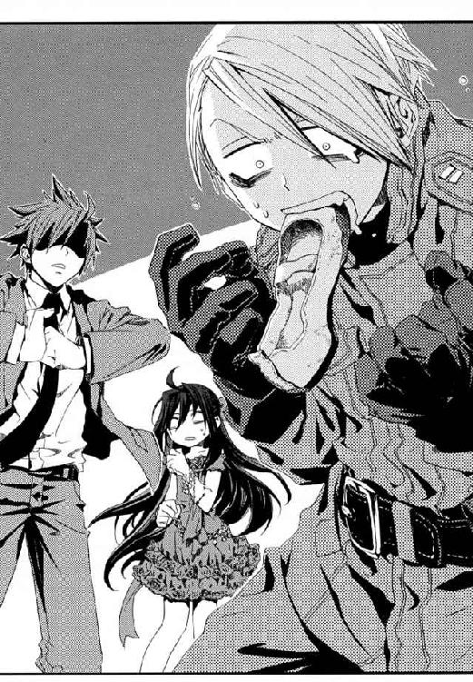
「馬鹿な──《龍の吐息》が、ワタシの切り札が発動しない！」
魔術は、靴が乾燥して微妙に味がかわっていたため失敗したのだ。元の味を取り戻すには、もう一度靴を履いてもらってムレさせるしかない。
魔法発動に失敗した魔導師を前に、メイゼルも気の毒そうに目をそらした。仁は拳をかためてニガッタとの距離を詰める。
「......それじゃ、そろそろ覚悟はいいか？」
「ま、待て！ 魔法を使って見せずにこのまま終わっては、ワタシはただの上履きをほおばる変態！」
「いや、小学校に忍びこんで住みつくだけで、十分変態だ」
仁はさっさとこの変態魔導師を片付けて、メイゼルと速水を立ち会い演説会に戻してやりたかった。彼女たちは子どもで、ニガッタのような子どもの世界に甘えたいおとなを接近させるべきではないのだ。
ニガッタの全身から湯気が立ちのぼる。賢猟大系の魔法は肉体強化に高い技術を持つ。それを発動させる《味》は、多くの場合、魔導師本人の血の味だ。
そして、蜘蛛のように、ニガッタが一瞬で体育館の天井にへばりついた。ひとっとびで体育館の屋根裏部屋である三階の、高さ三メートルの天井へととりついたのだ。もっとも原始的な魔法大系によって魔法強化された人間は、あらゆる動物を身体能力で凌駕する。
「ふふふふふ、ワタシの歯を折っていたのを忘れていたな《沈黙》！ 痛かったぞ！ あれは痛かったぞぉッ!!」
もうニガッタには人が来て見つかる可能性など頭に入っていない様子だった。
「これだけは使いたくなかったがな！ 貴様に見せてくれる、たてぶえの微妙に恥ずかしい臭みから引き出される《破砕の砂嵐》を」
天井に張り付いたニガッタが、今度はふところから出したたてぶえをわしづかみにする。
────ぽへー。
たてぶえをくわえたニガッタの全身が、身につけた軍服を内側から引き裂きながら、風船のようにふくらみだした。《破砕の砂嵐》は胸腔内に膨大な空気をためこみ、口から衝撃波として打ち出す魔術だ。だが、魔法使いならざる仁には、天井に張り付いたニガッタに手が届かない。
問題は、その魔法を放てば、体育館の児童たちに観測されることだ。この世界の人間は観測した魔法を破壊してしまう。つまり体を風船のようにふくらませたニガッタは、魔法を放ったと同時に、肉体の強化魔法を失って内臓破裂で自爆する。
仁も、さすがにこんなところで人死には出したくなかった。だから、穏便に変態魔導師を無力化してやりたかった。
「メイゼル、撃ち落としてやれ」
「言われなくても、さっさとかたづけるわ」
ちいさな魔女メイゼルは、電気や磁力の制御を得意とする円環大系の魔法使いだ。その彼女の魔法が、床一面に積もったホコリを帯電させて浮きあがらせた。《魔力》を帯びたホコリへと、メイゼルがさらに電気エネルギーをかける。ニガッタが本格的に焦りだしたのは、そうして励起させられたホコリの雲が青白く発光しだしたときだ。
メイゼルが、ホコリがきれいになくなった床を見て、つまんでいたドレスのスカートを離す。
「その雲、さわったら、ちょっと熱くてしびれるわよ」
だがメイゼルの警告が発せられたのは、ニガッタが高電圧の雲に触れて感電した後だった。軍服の魔法使いが風船状態だった体を急速にしぼませた。ニガッタの体が、三メートルの天井から落下して、轟音と魔炎をあげて床に弾む。
「し、死ぬぞ！ こんなことされたら普通死ぬぞ!!」
目いっぱいに涙を浮かべて、感電したニガッタが泣いていた。仁は倒れたままの速水志保を抱きあげる。気を失ってはいても、彼女の呼吸が規則正しいことにほっとした。
「せんせ？ 速水さんと顔が近すぎるんじゃない。小学生は底辺なんでしょ？」
仁が振り返ると、物置に置かれた荷物が空中高く浮かんでいた。メイゼルが、用具置き場にあったバレーボール用の鉄柱や壊れたバスケットゴールなどを、磁力で浮遊させたのだ。ぶつけられたら、つぶれて死ねる重量だ。
肉体強化の魔術をほとんど失っているニガッタが、本気で泣きを入れた。
「ま、待て！ ご主人、飼いイヌを虐待するのはよくない」
メイゼルが、とろけるような甘く熱い息を唇から吐いた。
「あんた、あたしのところにきて今、一番いい顔をしたわ」
「正々堂々、速水と勝負するんじゃなかったのかメイゼル！」
仁は、それまで止めていた魔法消去を発動した。武原仁が魔法使いたちに《沈黙》と呼ばれるのは、魔法消去を停止したり再発動したりできるためだ。そして、魔法消去はあくまで魔法を破壊する能力だ。魔法消去で浮遊させる魔法が消えれば、重い用具の数々は自然に引力によって自由落下する。
雨のように金属製品が降り注ぎ、そして落下音の津波とともに足場が──────。
†
時計はすこし巻き戻る。
仁たちがニガッタと激突していたころ、寒川紀子は演壇でひとりメイゼルの代理として、生徒たちに候補者を推薦していた。
人となりを正直に伝えるだけなのに、上ずった金切り声になっていた。
「鴉木さんは、人の泣き顔を見るのが大好きで、......いじめっこってわけじゃありません。......純粋に泣き顔を見ると興奮する子なんです。でも、いいところもあるんですよ！ ありますよ、いいとこ！」
聴衆がざわつきだしていた。頭上で雷が落ちたような轟音が響いた気がして、寒川はもう泣きそうになっていた。
「............行動力があります！ 誰も思ってもみなかったことをやります。生徒会長に立候補するなんて、誰も思ってませんでした。......誰も生徒会長向きだと思ってなかったという意味ではありません！」
もう寒川はやけくそだった。生徒会長に当選しようがしまいが、クラスメイトはサディストのままだ。けれど、今ここですべきことをやりきらねば、紀子自身が負い目で卑屈になってしまいそうな気がしたのだ。
「鴉木さんは、痛いことや苦しいことから決して逃げない人です。皆さんに、鴉木さんを好きになってくれとは私も言えません。──けれど、鴉木さんと付き合うということは、ものすごい経験になると思います」
地震のようなはげしい揺れが、体育館を揺らした。
「私は、鴉木さんと出会って五ヶ月になります。けど、もう鴉木さんと出会う前に自分がどんなだったか、思い出せなくなってしまいました。私のお父さんが言っていた、だいすきな言葉があるので、最後に聞いてください。『考え方のちがう友だちは大事にしなさい、一生に残る思い出になる』というものです。
皆さんも、鴉木さんが生徒会長になったら、きっと一日たりとも安心して学校生活をすごすことはできないでしょう。けれど皆さんがこの御陵甲小学校を卒業するとき、かけがえのない思い出になっているはずです！」
彼女の演説を聴いてくれていた子たちが、立ちあがっていた。拍手で彼女をむかえてくれようとしているのだと、顔が熱くなって寒川の眼鏡が内側からくもった。ありがとうを言いたくて、身を乗りだす。
────舞台の天井から、当の鴉木メイゼルが降ってきたのは、そのときだった。
しかも赤いドレスの彼女だけではない。舞台の天井を突き破って、舞台の真上の三階用具置き場にあった大量のがらくたと、人間まで降ってきたのだ。
メイゼルが、舞台に立ちあがると、ドレスのほこりを払って宣言した。
「不本意だけど、あたしが勝ったってことみたいね」
それは、この立ち会い演説会で生徒たちが聞いた、はじめての生徒会長候補の肉声だった。
舞台には変質者が倒れていた。生徒会長の対抗馬だった速水志保が倒れていた。速水をかばって下敷きになったように、教師の武原仁がつぶれていた。
体育館の人々は、大惨事についてゆけず呆気にとられていた。演壇の寒川紀子も魂が抜けていた。
「鴉木さん？......なにに、......勝ったのかな？」
「その目を見開いて現実をよく見なさい！ 今、この舞台に立っているの、あたしだけなのよ!!」
覇王のように堂々と、メイゼルが両手を広げる。最後まで立っていれば勝者というルールは選挙にはない。
聴衆たちは、彼女が立つ壊れたモノと倒れた人が転がる舞台を見た。そのほとんどは、小学校生活において、こんな姿をさらしてはいけないものだった。
「......えーと。鴉木さんが生徒会長になれば、これからの半年間は、皆さんがこの学校を卒業してもずっと残る思い出になっていると、私は思います──」
寒川が、まっ白に燃えつきながらも、責任感だけで演説を締めくくった。『実行力』の垂れ幕をかかげた天瑞がぽつりとつぶやいた。
「あと、ぼろぼろになっても立っている精神力も身につきます」
かくして生徒会長選挙は、速水志保百二十票、メイゼル十五票、「立ち会い演説で苦労してた人」「寒川さん」と立候補もしていない寒川紀子が四十票近くを獲得し（無効票）、速水の圧勝で幕を閉じた。
生徒たちは、独裁者から身を守る民主主義のすばらしさをそれはよく学んだそうだ。
「このあたしよりも、どうしてあの子のほうが票を集めてるの？ あの子、リッコウホもしなかったのよ？」
生徒会役員選挙の夜、ちいさな魔女はかわいらしくも荒れていた。よほど悔しかったか、夕飯前なのに立ち会い演説会のときのまっ赤なドレス姿のままだった。
仁は、夏野菜のシチューのいいにおいを嗅ぎながら、途方にくれていた。小学校からアパートに帰ってくると、怒ったメイゼルが待っていたのだ。
「ごめんあれ冗談。無効票は、全部寒川に入ってたわけじゃなかった」
「今になって程度の低い言い逃れしないで！ 選挙の票数、ちゃんと数えたのよ？ 六年一組だけで八人もあの子に入れてたわ！」
全票数百五十三票のうち、無効票が二十五パーセントを超える四十近くもあったのだ。どういうことか問い詰められて、仁はぽろりと、約四十票が寒川に入っていたことを漏らしてしまったのだ。仁の一生の不覚だった。
九月から十月になる最近は、夏から秋に移り気温の変動がはげしい。きずなが、汗をかきながらクリームシチューの鍋をかきまぜていた。
「メイゼルちゃん、その服、汚しちゃったらもったいないよ」
仁は、ジャケットをハンガーに掛けて洋服ダンスに吊した。シャツのボタンを上から二個目まで外して楽になる。ひとりならさっさと下着になってしまうところだが、女の子がいるとそうはいかなかった。
昔の、ひとり暮らしをしていた時代はなかった種類の苦労だった。仁が高校生だったころなら、帰宅したら部屋に下着姿の男が待っていたことも多かったのだ。
あのころ仁の部屋には、メシどきになると食事をたかりに来る男が入り浸っていた。
「ジャマをするよ」
そう言って、ノックもせずその男はドアを開けた。高校時代と変わらない、まるで自分の家のような気安さでだ。
「────え？」
「ひぇっ」
メイゼルはドレスの胸をかき合わせて、きずなは裸でも見られたように目を見開いて悲鳴をあげた。
安心しきっていた少女たちの前に現れたのは《公館》の専任係官、八咬誠志郎だった。八咬は色素の薄い、軽薄な二枚目だ。派手なジャケットを引っかけ、秋なのにシャツのボタンを四つも開けて胸板をさらした格好は、バカまるだしだった。だが、ひいでた額に前髪を一房たらした八咬には、貴公子のような気品があった。
「おまえどうやって入ってきた！」
仁が、しゃあしゃあと踏みこんできた八咬に思わず突っこんでいた。仁は《公館》を裏切った身だ。公式には敵味方のはずだが、立場の差は気にならなかった。八咬は友だちだからだ。
貴公子は、昔から邪気のない笑顔で返してくる。
「イヤだなあ。ぼくと君の仲じゃないか。合い鍵くらいちゃんと持ってる」
「おい。鍵は、魔導師公館を出てから替えたんだがな」
「この状況で、《公館》の手が回ってないと、本当に思ったのかい？」
《公館》とは九年間の付き合いで心当たりがありすぎたから、仁は嘆息した。
「......容赦ないな」
仁は、こういうとき彼以上に怒りそうなメイゼルが静かなことに気付いた。見ると、ちいさな魔女が、ふすまの陰に隠れて様子をうかがっていた。きずなまでが、流し台の陰に隠れようとしていた。
八咬誠志郎の魔法は、この奇蹟なき《地獄》のみに存在する特別な魔法、カオティックファクターだ。八咬のそれは《破壊》、感覚したすべてを破壊する最悪の魔術である。
「ぼくはこんなに君たちを愛しているのに、傷付くなぁ」
八咬は、感覚したすべてを破壊してしまうからこそ、人を愛し、この世のすべてを愛する。仁が知る限り、この男ほど人のぬくもりを求めている男はいなかった。
「大丈夫だ。今は、俺が魔法消去してるから《破壊》でも安全だぞ」
八咬の《破壊》は、もっとも魔法消去に弱い魔法のひとつだ。あらゆるカオティックファクターは、魔法消去とはげしく反応する。消去発動中の仁には見えないが、魔法使いの少女たちには八咬の全身からはげしくあがる魔炎が見えているはずだった。
誇り高いメイゼルは、本能に負けて逃げてしまったことをごまかした。
「こわかったわけじゃないわ！ ちょっと、服を着替えようと思っただけよ」
きずなは、まだすこしおびえながらも、ちゃぶ台に八咬のぶんを追加して皿を四枚出した。
「あの、八咬さんも晩ごはんいっしょに食べていきますよね？」
「取り分けやすいシチューにしてくれたのかい？ ぼくら三人してやってくるのを察知していたかのようだ！ 君はよいお嫁さんになれるね」
仁はそのとき、何かを忘れていた予感がしたのだ。
「待て。三人来たってのはどういうことだ！」
制止する間もなかった。
「ヤガミ、私たちが武原仁と接触すると、《公館》を刺激するのではありませんか？」
八咬誠志郎の後に続いて、ミニのタイトスカートから伸びる脚線美もまぶしい美人秘書があがりこんだ。さらに、きわどい短さの白衣の女性看護師が靴をぬぎ、きっちり玄関のはきものを整理した。
「それよりヤガミ、ワインを一本用意しましたが、この家は未成年ばかりです」
「さあ、仁、話は晩ごはんを食べてからにしようじゃないか」
アパートの人口が六人になった。居間がずいぶん手狭になった。ちゃぶ台に六人ぶんの大皿は置けなくて、テーブルがわりの段ボールを設置した。ワイングラスなんてないから、普通のコップに赤ワインを注いだ。
「八咬。アンゼロッタが日本に────」
仁は、それだけは古巣へ伝えておきたかった。八咬誠志郎の傷付きやすい繊細な横顔が、戦士の鋭さになった。
「知っている。彼女の目的は、《賢者の石》だ」
部屋着に着替えたメイゼルが、スプーンでシチューをすくいながら目をまるくした。
「何なの、その《賢者の石》って？」
メイゼルが本物の魔法使いだからこそ知らない知識を、仁が補足してやった。
「この世界の神話や伝説には、魔法世界にはない、独自のものがあるんだ。《賢者の石》は、そのひとつだよ。神人が、この世界だけに《神人遺物》って痕跡を残したって話は知ってるだろ。《賢者の石》は、物質を完全に近づける触媒だとか、その神人遺物の材料だと言われてるモノだ」
魔導師公館の専任係官たちの仕事は、治安を守ることだけではない。この世界には、最初の魔法使いより前から存在し、誰にも知られず消えた、神人と呼ばれる何者かがいた。この神人たちが遺した遺物の奪取や保護も、かつての仁たちの仕事だった。神人遺物は、絶大な力を持ち、魔法を破壊されても力を取り戻す特別な魔法遺産だ。発見されれば、かならず壮絶な奪い合いになる。
メイゼルが、本当にはじめて聞いたのか、顔色を変えて身を乗り出した。
「なにそれ！ 神人遺物に材料って......いや、そうよね。......モノがあるってことは原料があって不思議じゃないわ......でも」
仁は、大皿の中でシチューと熱いご飯を半々くらいの割合で混ぜた。スプーン一杯分以上は一度に触らないのが、彼のルールだ。
「《賢者の石》の話は、結局誰も実物を見てないから、本当におとぎ話だよ。ここ五百年以上、発見された記録はひとつも残ってないんだよ」
八咬が、一口食べてはきずなの料理のできばえに感激していた。
「このあいだの国城田事件が、《賢者の石》の出現をうながすんじゃないかって、溝呂木さんが言ってるんだ。記録では、《賢者の石》は、魔法使いの歴史の分岐点に現れてるからね」
溝呂木京也は、《公館》嘱託の魔法学者だ。彼は、まともな学者から相手にされなくなって《公館》に来た。彼は、奇蹟なき《地獄》とさげすまれるこの世界に、すくなくとも三柱以上の《神》がすでにいると主張したのだ。
「《公館》の記録に残ってる一番新しいのは、十四世紀のヨーロッパの黒死病のときだってやつだろ。書いたのは魔法使いだし、魔法世界の政情がムチャクチャな時期の記述なんか信用できないだろ。結局、その時期《協会》から独立した《連合》は、今でも《協会》と神聖騎士団に拮抗する第三の魔法勢力だからな。《賢者の石》みたいなおとぎ話を持ち出したくもなる」
十四世紀、高い致死性を持った伝染病、黒死病が大流行し、ヨーロッパ全人口の三割が失われた。《連合》が分離独立し、《協会》はヨーロッパ圏にあったすべての《門》を失った。《協会》が決定的に凋落したのは、その時期なのだ。
八咬はムダに上品に湯飲み茶碗を回して、ワインで口を湿らせた。
「溝呂木さんは本気だね。《賢者の石》が、〝神がいる仮説〟を実証する鍵になると思ってる。ぼくにも、回収するよう話を持ってきた」
食卓のあたたかかった空気が、今は冷え切ってしまった気がした。ここはすでに、今日の暮らしをよろこぶ場ではなく、生き死にを語る修羅場だった。
「もし仁が《賢者の石》を手にいれたら、魔導師公館と交渉できるかもしれないな」
仁にとっても、《公館》と関係を修復できるなら悪くはないはずだった。だが、よろこべなかった。
「おまえ、酔っぱらってる場合じゃないだろ。他人事じゃないんだぞ。溝呂木の話どおり、魔法使いの歴史の節目がこれから日本に現れるんなら、《公館》はそのときどうなるんだ？ 《協会》から《連合》が独立したときは、魔法使いが十万人単位で死んでるんだぞ」
「昔は昔、今は今さ。望みの薄い賭けを、いつだってぼくらは生きてる」
《賢者の石》を求めるなら、仁は同じものを目指す《公館》と、敵同士としてぶつかることになるのだ。それでも、仁のことを心配して、自分の身があやうくなるかもしれないのに八咬は来た。
なつかしい時代がよみがえると、ここにいない十崎京香のことを思い出した。無性に煙草を吸いたくなって、食事中だからやめた。
「京香姉ちゃんは、溝呂木の口利きくらいで水に流してくれるほど、甘くはないだろ」
ひとつ年上の十崎京香に、返しきれない恩と、片付けきれない感情がまだ残っていた。そして彼女は、彼にとっても八咬にとっても憧れだった。
「国城田事件以来、《公館》は、公安警察との連携を強めてるのさ。事件を裏でこっそり片付けてた《公館》のやりかたは、警察と組むならダメだ。警察は、まず理屈を通さないと何も動かないさ。魔法使いのやることに理屈をつけてくれるのは溝呂木さんだ」
「あとは、警察のメンツか」
「それもあるね。あと、国城田事件で君が真昼にテロリストを射殺したせいで、向こうがおびえたのさ。ああ、そうさ、君のせいだ。外敵を斃す実行力としての魔導師公館を、警察はあつかいきれないと考えてる。だから、警察の連中には、公館で一番重要なのは知識を貸してくれる溝呂木さんなんだ。もう京香さんだって、溝呂木さんが本気で押したら無視はできない」
仁はただ、八咬の気遣いがありがたかった。出会った高校時代から、変わらなかった。八咬誠志郎は、利害で動くには酔狂すぎて誠実すぎた。
黙っていたメイゼルが、ワインのかわりに置いていたジュースを一気飲みして勢いをつけて言った。
「せんせ、あたしも勝負をかけるなら〝そこ〟だと思うわ。神人遺物の原料なんてモノが本当にあるなら、《協会》だって黙ってないのよ？ 材料があるんなら、それで《門》を新しく一個作っちゃえば、《協会》の抱えてる問題って一気にマシになるもの」
《協会》が守る最重要施設、この世界へ魔法世界からはいる《門》は神人遺物だ。だとすれば、聖騎士将軍アンゼロッタ・ユーディナの来日の目的も納得できた。《賢者の石》をめぐる戦いが、どれほど危険なものになるかは明らかだった。
それまで話に参加しなかった倉本きずなが、ぽつりと言った。
「メイゼルちゃんは、武原さんに戦いに行ってほしいの？」
ちゃぶ台に家庭のにおいが戻ってきた。きずなは〝普通〟の女の子だ。再演魔導師としてどんな運命を背負っていたとしても、きずなは気を遣い、手を掛けて、快適な空気を作ってくれている。そんな彼女の前で話していると、魔法世界を変えるかもしれない《賢者の石》すら、本当に大事なことではないと思えてくる。
「八咬さん。どうして武原さんでなきゃダメなんですか」
八咬誠志郎は答えなかった。仁も、そのことばへはとっさに返せなかった。メイゼルを救ってやりたいからだけでは、たぶんないのだ。彼が戦いに身を投じようとしているのは、ただそれだけではない。
メイゼルが、目をそらした。
「どのみち戦いからは逃げられないのよ。だったら、ミカタはいないよりいたほうがいいわ」
少女が味方のことを考えたのは、仁にとってもうれしい進歩だった。メイゼルは、この世界に来た頃、ひとりきりでも戦おうとしていたのだ。
だが、きずなはそれきり何かことばをこらえるように黙ってしまった。
《公館》も仁も、まだ小学生の魔女に「戦いから逃げる」方法を提示した。きずなは、メイゼルが刻印魔導師の道をあきらめさえすれば、仁も戦場から逃げられると思っていた。本当は、きずなが仁と一緒にいる限り、やはり戦いは避けられない。けれど、すくなくともまだ再演大系の少女はその事実を知らないのだ。
八咬が、そんなきずなとメイゼルを静かにじっと見ていた。
かたまった空気を破るように、きずながちゃぶ台の、仁の食器のほうへ手をのばした。
「えっ、......きずなちゃん？」
仁の前にあったコップをつかむと、ワインを一気に飲んでしまったのだ。こくりこくりと色っぽい音を立てて、きずなののどがかすかに震えて液体を飲みくだす。
そして、からっぽになった器を、どんと音を立ててちゃぶ台に置いた。
「お酒って、あんまりおいしくありませんね。どうしておとなって、こんなものが好きなんですか？」
もっとゆっくり飲めば味がわかってくると、正論をはさめる雰囲気ではなかった。仁に言えることなんて、この程度だ。
「おとなになればわかるよ」
きずなが、早くも酒がまわりだして、顔も目もまっ赤にして大きな声をあげた。
「武原さんは卑怯です！ どんなに心配してるか、なんにもわかってないくせに、いつだって全部わかってるような顔して!!」
仁が学校から帰ってくると、部屋にはきずながいた。食事はいつだって、もうできていた。メイゼルは刻印魔導師として外に出ていることも多い。このアパートを、気持ちのいい家庭にしてくれているのは、きずなの努力なのだ。
その上にあぐらをかいていた身で、仁はきずなを無視して何もかも決めてしまっていた。
八咬が、どうしようもなくなって酒瓶に手をのばした。
酔っぱらってしまったきずなが脇から瓶をひったくった。そして、手酌で残ったワインをつぎ、二杯目を一気にあおった。
「......ああ、その飲み方は、昔の十崎さんにそっくりだ。......仁、彼女においしいお酒の飲み方を教えるのは、君の仕事だよ」
八咬の台詞は、完全にからぶりだった。
ミニスカートの秘書が、仁と八咬を見比べた。
「以前から聞きたかったのですが、その、毒にも薬にもならないセリフをはく悪癖は、ヤガミが元祖なのですか？ それとも武原氏が元凶ですか」
ちゃぶ台をかこんだ女性たちが、仁と八咬を、ダメな男へ向けるあの目で見ていた。
武原仁は、突然スラックスの太ももを引っ張られた。
「せんせ、こんな時間に女の子の家に行くって、どういうことかわかってるの？」
振り返ると、仁の胸あたりで、かわいらしい顔が夕日を受けて赤くなっていた。
武原仁は私立御陵甲小学校で教師をしている。そして、いっしょにいる少女、鴉木メイゼルは、彼が受け持っている六年一組の児童だ。副担任である仁と、生徒である少女がいっしょにいる場所といえば、ふつうに考えれば小学校の中だ。だが彼らは、今、住宅街で、夕飯の買い物袋をさげた主婦たちにちらちら見られていた。
放課後に、ランドセルを背負った女の子に服をつかまれる恥ずかしさは、体験しないとわからない。
「教師としては、こんな夕方におまえがついてきてるほうが心配なんだが」
仁が魔導師公館を解雇されて、もう一ヶ月以上になる。だからこそ、鴉木メイゼルが向けてくれる好意に、仁が思うところは複雑だった。それが〝普通〟ならざる感情でも、彼女の真剣さを適当にはあしらえなかった。
「本当に、最後までついてくるのは無理なんだから、そろそろ帰ろうな」
夕暮れの街はただ赤く、空はなだれ落ちてきそうなほど高かった。
ちいさな淑女が、すまし顔で目を閉じ、発育が残念な胸に手を当てる。あどけないほおに残る繊細な産毛が、夕日をあびて金色に輝いていた。
「せんせがよその家に行くなら、あたしもいっしょにごあいさつするべきだと思うの」
「あのな、俺はこれから寒川の家庭訪問だからな。遊びに行くんじゃないぞ」
武原仁は、六年一組の副担任として、学級委員の寒川紀子の家へ家庭訪問に行くところなのだ。
「おうちにおじゃまするときは、手みやげを持っていくのよね」
メイゼルの常識がズレているのは、彼女がこの世界の人間ではないせいだ。ほとんど知られてはいないが、この世界には、異世界からたくさんの魔法使いがやって来ている。鴉木メイゼルも、そんなひとりなのだ。
「メイゼル。和菓子屋に入らなくていい。みやげは持ってかないし、連れてかないぞ」
「あたしを置いていったら、せんせがたいへんなことになっても、助けたげられないのよ？」
メイゼルは、その身の上がゆえに言うことがませている。魔法世界には、罪人をこの世界へ追放して百人の敵を斃すことを強いる、刻印魔導師という重罰がある。小学六年生のメイゼルは、史上最年少の刻印魔導師として、たったひとりでこの世界へ堕とされてきたのだ。
そして武原仁は、日本政府が極秘裏に魔法使いと交渉するために作った非公然機関、魔導師公館にいた。彼は、メイゼルを監督するため小学校に赴任したニセ教師で、今も彼女が心配で学校にずるずる残っていた。
「まあ、何ヶ月も先生やってんだ。生徒に助けられるほど頼りなくはないよ」
「あたしがいないと生きてけないとか、いろいろ言ったくせに。本当にせんせって、その場かぎりだわ」
彼女のことばが、仁にはときどき痛い。彼女の想いとはちがう、家族に向けるような親愛だが、仁もメイゼルに繫がりを感じていたからだ。殺し合いに飛びこもうとするちいさな魔女に、生きる未練を持ち続けてもらいたかった。
「それは話がちがうだろ。家庭訪問と関係ないおまえが顔だすと、えらいことになるんだぞ？ 親御さんとか、教育委員会とかそんなかんじに」
夕暮れの住宅街を仁は歩く。彼とふしぎな縁で結ばれた少女が、ちいさな歩幅で急ぎ足についてくる。ランドセルをがちゃがちゃ鳴らしているものだから、道行く人々が彼らを振り返っていた。
髪に結んでいたリボンがゆるくなったか、メイゼルがそれをほどいた。こしのある後ろ髪が、オレンジ色の夕日を受けて弾むように広がった。黒髪からリボンの色彩が取り去られただけで、小学生の彼女がすこしおとなびて見えた。
「せんせ、結び直してもらっていい？」
くるりと彼女が、仁の前で背中を向けた。女の子は人前で男を振り回すような甘えかたをいつ覚えるのだろうと胃が痛くなりながらも、習慣で結び直してやった。妖精じみて可憐な少女を、買い物帰りの奥さんがみんな通りすぎざま観察していた。
けれど、メイゼルが魔女であることには気付かない。この世界の住民は、感覚した奇蹟を、認識するかわりに破壊してしまうせいだ。常に誰かに見られている住宅街では、魔法から解放されて、メイゼルは本当にただの小学生でしかない。
「暗くなったらあぶないから、もうまっすぐ家まで帰るんだぞ」
「せんせは、人のこと心配する前に、自分の無防備さを不安がるべきだわ」
だが、少女は品のよい眉をおおまじめに寄せて、仁の顔を正面から見た。
「こんな時間に、女の子の家にひとりで行くのよ。きっとしばりあげられて、人生おしまいになるような弱みをにぎられて骨までしゃぶられちゃうわ。だって、そうしたら、せんせが屈服したとき最高にしあわせで、抵抗してるあいだじゅうぞくぞくできるのよ。あたしなら絶対そうするわ」
鴉木メイゼルはあめ色の瞳を興奮にぬらしていた。夕日のあかね色に照らされてもわかるほど、興奮にほおを上気させていた。彼女は、痛くしたり縛ったりするのが大好きな、嗜虐趣味者なのである。
「世の中の人間は、みんなおまえ基準で動いてないからな」
この世界に来た魔法使いは、たいてい不自由で地味な暮らしをしている。魔法と魔法知識が役に立たないせいだ。一発当てようにも学歴や基礎知識もなく、日本の〝普通〟にもなじめない。だから魔法使いは、社会の最下層に落ち着き、犯罪に手をそめることも多い。仁は、もはやメイゼルの専任係官ではなくただの先生だからこそ、彼女に普通に暮らしてゆける常識を身につけさせてやりたかった。
だが、そんなことなどおかまいなしで、ちいさな嗜虐趣味者は、クラスで数少ない友だち、学級委員の寒川紀子をこう評したのだ。
「あら、せんせ。あの子、けっこう逸材よ」
「なんの逸材だ」
「あの子、まじめな顔して、体にやらしいこといっぱいつめこんでるのよ」
仁にとって、魔法使いの少女にこの世界の〝普通〟を伝えるのは、ずいぶん骨の折れることになりそうだった。
青い屋根の二階建ての一軒家、彼が家庭訪問をする寒川家はもうすぐそこだった。
「いや、寒川は、面倒見もいいし、きちんとしてる小学生のかがみみたいな学級委員だぞ。おまえだって世話になってるだろ」
†
そのころ、私立御陵甲小学校の六年一組の学級委員である寒川紀子は、うろたえていた。
もう夕方おそくで、日の入りも近い。窓の外はまっ赤に染まっていた。
「どうしよう、もうすぐ先生が来ちゃう」
寒川紀子は、部屋の黄色がかったタタミにしゃがみこむ。ランドセルも学習机に放り出したまま、紀子はずっと焦り続けていた。電話機の子機をにぎって、母親の携帯電話へもう十回以上もかけ続けていた。
紀子が、さらした額に前髪が落ちるほど髪をかきむしる。それは、学校では絶対に見せない彼女のまるっきり子どもな姿であった。
「家庭訪問が今日になったって、なんでお母さんに言い忘れちゃったんだろう。ああ、もうヤダ！ もうヤダ!!」
小学校の優等生の〝きちんとしている〟なんて、タカが知れているのだ。彼女の子どもらしい隙をフォローしてくれる教師や親は、寒川家に今はいない。家に帰ったらみんな留守だったのだ。
彼女は、ズレた銀縁眼鏡の位置をなおした。
「お母さん、やっぱり電話に出てくれないよ！ どうしよう!!」
「母上は、今日は同窓会とのことだったのではないか」
紀子の、〝普通〟に起こるミスを指摘したのは、非日常そのものだった。二十代前半の美女が、彼女のすぐそばに座ってどら焼きを食べていた。白金色の髪をした透けるような肌の女性が、紀子の部屋でくつろいでいたのだ。
──────全裸で。
寒川紀子がこの全裸女と出会ったのは、一週間ほど前の、冷たい雨が降る夕方だった。
生徒会長選挙が終わって十月に入ったばかりのころだ。紀子は、赤いかさをさして、いつもの商店街ではなく人が通らない小道を使って、学校から帰った。
紀子は犬を飼いたかったのに、両親に反対されたからだった。新生徒会長の速水志保が雨の日に犬をひろったのは、小学校ではけっこう有名な話になっていた。だからひとつ、紀子もあやかれないものかと試してみたのだ。
父も母も、捨て犬を助けるのなら、文句は言わない気がした。それは小学生に〝普通〟な横着だった。
ゴミの集積所にさしかかったとき、だから彼女は絶句した。
それは断じて捨て犬ではなかった。
むしろ捨て犬との共通点はひとつしかなかった。
おおきなゴミ箱の前に立ち尽くしていた白金色の髪の女性は、服を着ていなかったのだ。
「だいじょうぶですか？ ぬれますよ。おうちはどこですか？ 警察呼びますか？」
そのきれいな生き物が振り返ったとき、紀子は呼吸を忘れた。すらりとした体格は、適度な筋肉と女らしいやわらかさの両方をあわせもつ、人体美の見本のようだった。血の気の引いた肌を、筋のように水滴が落ちていた。そして、すっぱだかである自分に何の疑いも持っていない強固さが、普通の住宅街ではあまりに異様だった。
背伸びして、紀子は雨がかからないようにコウモリがさをかかげてやった。まだ子どもの彼女を、背の高い女性ホームレスが見おろしていた。エメラルドのような緑色の瞳を前に、ようやくこれだけ言えた。
「あの、どうして裸なんですか？」
ぬれた髪を肌に貼りつけ、血の気の引いた唇がきっぱりとこたえた。
「戦士だからだ──」
犬をひろって飼う夢はこっぱみじんだった。紀子の中の、最近きたえられてきた変態センサーが、これはダメ人間だと告げていた。
「......私、帰っていいですか？」
裸の女が、紀子の肩をぬれた手でつかまえた。
「わが名はセラ──《無双剣》セラ・バラード。ゆえあって流浪の身で戦い続けている」
一瞬、意識が飛んでいた紀子をセラがたしなめた。
「だいたい、親がかりの身のそなたが親御にたてつけば、会話はなくなる。日頃の会話がなければ、大事なことを伝え落とすが道理だ」
全裸女は、雨の日から一週間以上、寒川家の紀子の部屋に居すわり続けている。彼女は青畳に尻を落ち着けて、全裸で茶をすすり、全裸で食事をする。寝床は、紀子が捨て犬を押し入れにかくして飼うことも想定して、部屋の押し入れに用意していたスペースだ。
「えらそうな説教は、せめて服を着てからにしてください」
きっと眉をりりしく吊り上げ、セラが断言した。
「礼節を知れッ！ 服など子どもの着るものだ」
セラがこの世界の常識とは無縁な、異世界の人間だと、寒川紀子は知らない。
「どこの世界の礼節ですか！」
「だから、私は、この世界の外から来た、戦士にして魔法使いだと言っている」
「じゃあ、魔法を見せてよ！」
「それはできぬ。この世界の人間は、魔法を破壊する力を持っているのだ。だから我らは、この世界を奇蹟果てる《地獄》、おまえたちこの世界の住人を奇蹟の天敵たる《悪鬼》と呼ぶのだ......なんだその目は？ ノリコはおとなを信じない年頃か!?」
「その言い訳、わけわかんないよ！ 要するに無職なんでしょ。なんで私、捨て犬じゃなくてニートひろっちゃったの？」
ニートということばに、一週間食っちゃ寝のセラが微妙に反応した。
「意味は知らぬが、よい意味ではなさそうだな。......だが、無職というのは気にかかる。一宿一飯の恩義は、本物の礼節と常識を教えることで返してやろう。うむ、それがよい。さっそく講義だ。そもそも今日ノリコが窮地なのは、親とケンカしたのが悪いのだ」
怒りすぎてわけがわからなくなって、紀子は銀縁眼鏡を顔からむしり取った。
「先生ってのは、もっと〝普通〟でまともな人のことだよ！ そのケンカしたのだって、あなたのせいで毎日ぐちゃぐちゃだからですっ」
「人のせいにするな。親子がもめるときは、たいてい子どもの未熟さが発端なのだ。親御の側に問題の比重がおおきいこともあるが、こうした機会にひとつずつ未熟をのりこえねば子どもは成長できん」
セラは全裸だが、その表情は謹厳で声は重い。
「たしかに、私だって生意気だったよ。でも、お父さん、最近、日曜日はＮＨＫしか見せてくれないんだよ。それに、中東の戦争とかの話とか、報道番組ばっかり見せるようになったし。見たらすぐに感想とか聞こうとするし。お盆からずっと変なんだよ」
イライラするときは甘いものだと誰かえらい人が言っていたから、紀子は菓子盆のどら焼きを一個わしづかみにした。
寒川家には、実際には、紀子が知らない夏があった。彼女の父、寒川淳は、学生時代の親友の最期を看取った。テロリストとして日本へ戻ってきたその男、国城田義一が遺した問いかけを、紀子の父は不器用ながら彼女へ受け継ごうと苦闘していたのだ。
「おまえのそれは、われわれの世界にもある。反抗期というのだ」
「わかったように言わないでよ！ 私が何を知りたいかを私が決めるのは、個性だよね。それって、私の権利だよね。そんなことくらい、〝先生〟ならわかるよね？」
だが彼女は、まじめな学級委員でも視野は小学生のせまさでしかない。
「権利もなにも、親にあたりまえのことを知らせる義務をおこたって、おまえはこれほどの大失態をおかしたのではないか」
全裸女に彼女は完敗していた。たしかに紀子は、家庭訪問が今日だったと母親に知らせようと、急いで帰ってきた。そして、同窓会で母が留守である事実に焦っている。昼休みに教室で武原先生に確認されるまで、家庭訪問をすっかり忘れていた紀子が悪いのだ。
「だが、この世界の〝先生〟とやら、後学のため一度は見てみたいものだ」
「家庭訪問のこと話す余裕なんかなかったんだよ！ お父さんとお母さんからあなたのことかくすのが、たいへんだったんだよ。お母さん掃除よくするから、ずっと心配だったし。お便所だって勝手に使うし！」
「私は、一社会人として、正式にご家族にあいさつをさせてもらうと言ったはずだッ」
紀子は、セラが全裸のまま母親にあいさつをしているところを想像し、お茶を噴き出した。彼女の母は、純情少女がまっすぐ過保護な教育ママになったような人だ。寒川家の中は、刺繡をはじめ母のお手製の手芸品であふれかえっている。この家のことが何より大事な人なのだ。
だから、家によその女があがりこんでいると知ったら、絶対に父の浮気相手だと勘違いする。セラは、女の子なら嫉妬をおさえるのがむずかしいほどきれいで、そしてまっぱだかなのだ。
「全裸のくせに！ 家庭の危機なんだよ!!」
セラが拳で胸の中心をたたいた反動で、見事に尖端が上を向いた乳房がぷるりと揺れた。
「正直に、雨の日にひろったと言え。全裸はおとなの正装だと、私が説得してやる」
「信じる人いないよ！ そんな話とおったら、地球上に浮気現場をおさえられて離婚になる夫婦いなくなるよ！ ＵＦＯより信憑性ないよ！」
だが、まっぱだかのセラは、八つ当たりに熱がはいりすぎて酸欠になった紀子を逆に一喝した。
「おろかな。人は全裸で生まれるというのに、服など着るから邪念をいだく。そんなものは気の迷いだッ！」
ピンポ─────ン。
焦る紀子と全裸はゆずれないセラの、煮立った空気を、間延びした呼び鈴の音が一気に冷やした。
六年一組の武原先生が家庭訪問に来たのだ。
それは、最近家の中でなまいきな態度をとっていた彼女が、両親に怒られることを意味していた。
紀子は観念した。こんなものを先生に見られては、もう学校へ行けないからだ。もしもクラスメイトの鴉木メイゼルにでも知られたら、卒業までいじめられそうだった。紀子のクラスには、人の弱いところを見つけると指やことばで嬲りつくさずにいられない嗜虐趣味者がいるのだ。
だから、くやしくて涙が目にうかんだが、彼女は立ちあがった。
「私、先生にあやまってくる」
二階建ての家の急な階段をおりて、泣き顔になっていないか洗面所でたしかめる。戸棚の引き出しに入っている母親の眼鏡ケースから、めがねふきを借りてレンズを磨いた。
そして紀子は、重い足を引きずるように玄関に行き、ドアを開けた。
副担任の武原仁は、苦労が顔にしみついたような若い男の先生だ。目つきが鋭くて、背は高くて、手が傷だらけで、おとななのにエネルギーが余っている感じの人だ。ときどきこわいが、数式や教科書を読むときよく〝嚙む〟ので紀子には親しみやすかった。
「先生ごめんなさい。あの、今日はお母さんが────」
頭をさげようとした紀子は、背後からあがった足音に振り返った。
背が高くてスタイルのいい迫力のある美女が、紀子の後ろにぬうっと立っていた。セラが、拒絶し続けた服をいつのまにか着ていた。そして、「まかせろ」とばかりに彼女へ目配せをして言ったのだ。
「私が、寒川紀子の母です」
紀子の口から魂が抜けた。
†
小学校教師、武原仁は、玄関の外国人美女を前に呆然としていた。
「私が、寒川紀子の母です」
そう言った緑色の瞳の女は、ちいさいスーツを無理やり着ていた。おかげで、ぱつぱつの胸は内側からふくらんで谷間が見えているし、スカートの布地が引っ張られて淫靡に尻のかたちが浮いている。
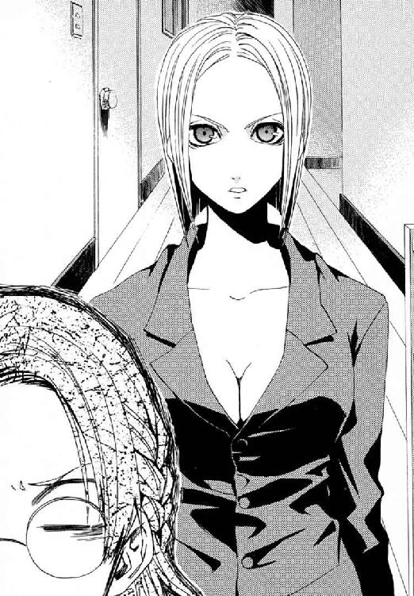
自称寒川の母は、白金のようなセミロングの髪を揺らし、手脚はすらりと長い。寒川紀子は黒髪で、足はすこし太めの、見るからに日本人の少女だ。
途方にくれて、一番事情を知っていそうな学級委員に話を振った。
「......寒川、こないだ三者面談のときに会ったお母さんと、ぜんぜん別人に見えるんだが。もっと寒川のお母さんって普通の人だったよな」
だが、自称母は居直った。
「私が紀子の母親でないなら、他人の家に勝手にあがりこんだ犯罪者だとでも言うつもりか！」
寒川紀子の半開きになった口から、魂が抜けていた。
ニセ教師、武原仁の脇に、じっとりと汗がにじんだ。
「今度の、びっくりどっきり魔法人間は、こいつか......」
「ふむ......なんだ〝先生〟というのは、おまえか」
仁は、眼前の自称寒川紀子の母を知っていた。忘れるはずもなかった。彼はこの魔女に、かつて襲撃されて殺されそうになったのだ。日本を訪れる魔法使いたちの政治権力──《協会》に所属する、《無双剣》セラ・バラードという高位魔導師が、女の正体だ。
「ところで寒川さんのお母さん。────ひょっとして、いつもは全裸だったりしませんか」
「ところで、どうしておまえが小学校の先生なのだ？ 趣味なのか？ 小学校がそんなに好きなのか？」
仁が彼女を知っているということは、自称「寒川の母」も、《公館》の専任係官だった彼がわかるということだ。だが、教師の口から出た「全裸」ということばに寒川が悲鳴をあげた。
「いやああああああああああっ！ 先生までえええええぇぇえ!!」
学級委員が、思いっきり引いていた。
「待て！ これはちがうんだ！ 俺は、〝そっち側〟じゃないんだ!!」
寒川が、助けを求めるように仁を見あげた。
「先生、こんなことであせらないでください。先生のこと、信じてますから。信じていいんですよね？」
少女の背後で、魔女が、娘を手なずけた変質者でも見るように敵意を燃やしていた。
「〝先生〟とやらは、私を誰かとかんちがいしているようだな。だが、服を着るような恥知らずは、おまえの知っている女ではない」
「......寒川。俺は、こんなのじゃなくて、ちゃんと小学校の先生だからな」
ニセ寒川母とニセ教師が、同時に主張した。
銀縁眼鏡の奥で、おとなふたりを見あげる寒川紀子の目が死んでいた。
「武原先生、今日の家庭訪問は......」
「やるよ、家庭訪問！ 先生がやってきて、家庭訪問しないわけないだろ」
勢いで言ってしまったことを、仁は居間に通されてすぐ後悔した。
セラに全裸で斬りかかられた戦いの記憶もまだ鮮明だった。セラ・バラードと話したいことなど、仁にはなかった。彼は、居間のテーブルを寒川紀子とセラと囲んで、会話の糸口すらつかめず呆然としていた。
「この女が、寒川のいったい何を知ってるんだろう......」
きまじめな学級委員長が、消え入ってしまいそうなほど深くうつむいた。仁は、教職免許すら持っていないニセ物でも教師だった。だから、彼女のことは心配だった。
「寒川......最近、こまっていることはないか？」
母を名乗ったセラが、となりに正座した寒川の背中を押した。
「あるだろう？ ノリコは最近、父親とケンカをしているのだ」
「えっ？ この面子で、本当にその話題で家庭訪問するの？」
ぽろりと寒川委員の口から本音が出た。
仁にしてみれば、このまま帰ると、セラが寒川紀子に何を吹きこむかわからなかった。魔法使いであるセラは、いよいよとなれば故郷の異世界に逃げ帰れる。だが仁は、この世界で生活を守らねばならない社会人なのだ。
かつて戦場で出会ったとき、セラは全裸だった。だが衣服を着ても、むき出しの彼女の殺気は変わらない。
「受けて立とうではないか。おまえと一度、本気で手合わせしたいと思っていた」
あまりに不穏な空気に、寒川が自称母の服を指で引っ張った。
「あの、......私のお母さんだって言ったの、忘れてないよね？」
たぶん彼らふたりにも、つばぜりあいのような沈黙からの出口は見えなかった。
私立御陵甲小学校の六年一組の担任である祖師堂しづか先生が、仁にアドバイスしてくれた。
「児童がかかえる、教室では発見できない問題が、家庭訪問でははっきり見えることがあるんですよ」と────まさにそのとおりだった。
セラが、向かい合うテーブルの向こうから斬りかかるように声をかけてくる。
「さあ、ノリコ、お父さんとどうして仲良くできないか言ってみろ」
六年一組の学級委員が天をあおいだ。
「拷問だ......」
「寒川、お父さんとケンカしたのか？」
仁が教壇できたえた親密な調子で児童に問いかける。教室とはちがって、寒川紀子が子どもらしく感情をあらわにした。
「ちがうよ！ お父さんが、最近ヘンなんだよ。なんか妙に私にかまってくるんだよ」
仁は、娘に邪険にされはじめたお父さんを思うと、わきあがった涙で眼の裏が熱くなった。セラまで追い打ちする。
「うむ、それはたしかにうざったい部分もあるな」
「なんだおまえ！ 母親だって自分で言っただろ。寒川の母親ってことは、おまえの夫だってことだぞ。家族で、お父さんだけふくろだたきか！」
夫ということばに、セラがはげしく動揺していた。そして、ためらったすえ拳をテーブルにつけて頭を下げた。
「それはごめんこうむるッ！」
「おまえ本気で頭下げただろ。あやまれ！ 寒川のお父さんにあやまれ！」
そして本物の寒川のお母さんにあやまれと、こころの中でつけくわえる。
「先生、この人と知り合いなんですか......」
「知らないぞ。俺は初対面だ」
「だから私が母親だと言っているだろう！ 証拠に、ノリコは私の弟に似ているッ」
寒川がどんな想像をしたか、顔を両手で押さえて立ちあがる。寒川は、男の子に興味を持ちはじめる時期の、健康な女の子だった。
「なにっ？ 弟って！ 男の人!?」
全裸の男でも想像したか、委員長がまっ赤だった。
セラが沈痛に返した。
「だが、ノリコに弟は紹介できない。紹介できるとよかったのだがな」
「そ、そうですか......」
戦士であるセラの弟の事情を、その空気の重さが語っていた。寒川紀子は空気の読める女の子だった。だから、勢いをそがれてもう一度正座し直した。
「話題を変えよう。茶をいれてきてやる」
すずやかな声で提案し、セラが立ちあがった。そしてそのまま、仁の背後を歩いて台所へと向かっていった。
居間では寒川紀子とふたりきりだった。仁は、この場をどう切り抜けようか必死だった。
彼と自称寒川の母であるセラは、魔法関係者だ。だが、寒川紀子は、魔法にかかわりのない普通の小学生なのだ。魔法のことがバレて、仁が教師でいられなくなることだけは避けたかった。
「話が途中だったな。寒川は、お父さんの話をすこし聞いてみてもいいと思うんだ。小学校六年生は、ひとつの節目だからな。寒川は中学も私立を受験するんだろ？ だったら、話をしたくて当然なんじゃないか？」
仁は、あの全裸と口裏を合わせてこの場をやりすごすしかない。
寒川のツッコミは微妙に厳しい。
「先生、それらしく話をまとめて、ここからにげようとしてませんか？」
「で、こないだ三者面談に来てくれたほうの〝お母さん〟は、どうして今ここにいないんだ？ 家庭訪問は今日だって言ってたし、先生、昼も確認したよな」
そもそも本物の寒川の母がここにいれば、セラがニセ母として現れる余地もなかった。
だが、しっかりしていても、〝普通〟の小学生は家庭訪問の意義など理解していない。寒川紀子が、今までのやりとりがムダだとわかって呆然としていた。
「そ......それじゃ」
「あのな、家庭訪問は児童よりも保護者のためにやるものだからな。今度またやり直さなきゃな」
「た、た、た────」
銀縁眼鏡を鼻筋からずり落ちさせ、子どもらしいあどけない顔が泣きそうにゆがんでいた。
「助けて!!」
直後、後頭部から鈍い衝撃が額まで貫通して、仁の意識を暗黒へと流し去った。
†
セラが荒い息をついていた。武原先生が、いすから倒れて板張りの床で気を失っていた。そして、セラの手から落ちて転がった灰皿には、すこし血が付いていた。
寒川紀子は、はじめてかぐ濃密な犯罪のにおいにもうろうとした。
「最初からこうすればよかったのだ」
台所へ向かったセラが、おおきなガラスの灰皿を武原仁の後頭部へとぶん投げたのだ。投げられた鈍器は、そんな攻撃を予想していなかっただろう先生の頭を直撃した。魔法使いだというセラが、誇らしげに紀子へと微笑んだ。
「あぶないところだったな、ノリコ」
紀子は〝普通〟の小学六年生である。だから、この犯行現場を前にどうしてよいかわからなかった。
「笑いごとじゃないよ！ どうするの？ 先生！ どうしよう、先生が動かないよ？」
紀子は、視界すらぐるぐる回っているようで気持ち悪かった。ショックでまっすぐ立っているのも難しいような彼女を、セラの手がしっかりと支えていた。
「この男はまだ死んではいない。気絶してはいるがな」
「どうしよう！ これ、絶対もうダメだよ。お母さん帰ってきたらなんて言おう？」
居間から見ると、外ではもう太陽が落ちて空が残照でまっ赤になっていた。
「どうしよう晩ごはんをどうするかとか、ぜんぜん聞いてないよ。同窓会から遅くならないうちに帰ってきて晩ごはんつくるんだよ。お母さんがもうすぐ帰ってくるんだよ！ 帰ってきたら先生見られちゃうよ！」
そしてわけもわからず紀子は電話にしがみついた。
「警察っ！ 警察！」
だが紀子から、セラが受話器をとりあげた。
「警察はダメだ。我々魔法使いは、ここの風習に合わぬゆえ、警察に変態あつかいされる」
一週間全裸だったセラが変態を語ると、奇妙な説得力があった。
「ノリコ、茶をいれてきてやる。まずは落ち着け」
そして白金色の髪を弾ませ、変態が彼女の母親のスーツを着たまま台所へ消えていった。紀子は、この状況の責任があるとはわかっていても、八つ当たりせずにいられなかった。
「お母さんは〝普通〟なんだよ！ こんなの見られたらもうおしまいだよ！」
紀子も、変態ではなく〝普通〟の人のはずだった。なのに彼女にとっても、普通な世界が脅威になっていた。
「......こんなの私じゃない、私じゃない、私じゃない、私は〝普通〟の小学生だから」
そして、急須と湯飲みをのせたお盆を両手で持って台所から帰ってきたセラは、服を着ていなかった。胸を張った裸人の立ち姿は、恥じるどころか傲慢なほどきれいだった。つんと上を向いた乳首が誇らしげですらあった。
「なんで全裸───っ！」
「服を着たままでは戦えない」
「......服はどうしたの？......あれ、お母さんのお気に入り」
「私のつかう錬金大系の魔法は、〝もの〟と〝もの〟の境目に魔力をみいだす。ゆえに、この世界の住人に観測さえされていなければ、体の表面の皮膚に触れている衣服を液状化して瞬間的に脱衣できる」
脂汗を広い額に浮かべ、あわてて紀子は台所へかけこんだ。掃除してもあぶらが微妙に落ちない台所の床に、ぼろぼろになった水色のスーツが散乱していた。
「どうしよう......どうしよう......絶対怒られるよ......どうしよう......」
────そのとき、寒川家の玄関で呼び鈴が鳴った。
居間には全裸のセラ、そして気絶した武原先生、台無しになった母親のスーツ。家族に説明できるものがなにひとつなかった。
「おしまいだー！」
だが、インターフォンごしに台所にひびいたのは、同窓会から帰った本物の母親の声ではなかった。それは、小学校の六年一組で毎日聞いている声だ。
〈こんばんは、鴉木よ。武原先生がおとしものをしたから、とどけに来たんだけど。はいっていいかしら？〉
六年一組の同級生、鴉木メイゼルが家へやって来たのだ。
「何者だ？」
「人の泣いてるとこが大スキな、特殊な趣味の......友だち？......もうおしまいだ、絶対に私も変態趣味に染まっちゃうまでおどされ続けるよ！」
「ならば、この男の処理をいそがねばならぬな」
全裸のセラが、どこかから引っ張り出してきたビニールひもで武原先生をしばろうとしていた。
紀子は、なまつばを吞みこんでいた。
「ちょっ、あの、先生にひ......ひっつき、密着しすぎだよ」
ハダカのセラの引き締まった筋肉が、気絶した武原先生の体をぐるぐる巻きにするたび緊張と弛緩をくりかえす。
「思い出したぞ。メイゼルとは、アリューシャの娘だな。あれは《憎悪の女王》が遺した最後の呪いだぞ。魔法世界を恨み、いつか《地獄》からよみがえると預言されている」
「現実見ようよ！ うちの学校にそんな悪の大ボスみたいな人いないよ！ 私たちの現実は、これ。先生が気絶してあなたすっぱだか！ これだけだよ？」
玄関で、カチャリと金属音が鳴った。そして、きしみをあげてドアが開いた。
「ちょっ！ はいってきた？ もうすぐそこまで来ちゃった！ 来ちゃった!!」
体重の軽そうなトコトコ歩く足音が、そのまま家にあがった。
せっぱ詰まった紀子の脳裏に、六年一組での記憶が走馬灯のようにかけめぐった。給食時間に転校してきたメイゼルにキスをしたことがあるか聞いたら、スプーンを投げつけられた。教室で誕生日のお祝いをしたら、紀子がなぜかプレゼントしたリボンでしばられた。暗闇で死ぬほど脅かされ、家に遊びに行けば恥ずかしい写真を撮られた。
メイゼルにこれを目撃されたら、今度こそまじめな学級委員としての紀子は終わる。
勝手にあがってきた足音が、徐々に廊下をせまってきた。
セラの言う〝最後の呪い〟──鴉木メイゼルが、居間の戸口にたどりついてしまった。そして、凍りつくような声で、紀子たちを詰問した。
「......あんたたち、なにしてるの？」
長い黒髪にリボンを結んだその少女は、今日も浮世離れしてかわいらしかった。だが、紀子より五センチも背が低いはずのメイゼルが、炎を噴くような怒気のせいで体が大きく見えた。
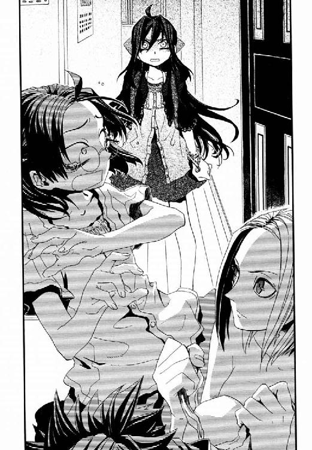
「こ、これはちがうの！ 家庭訪問をしてたら、武原先生がとつぜんたおれて、しかたなくこうやってひもでしばって......ってムリだよ！ こんなの説明ムリだよ」
寒川紀子は、メイゼルが魔女だと知らない。魔法で鍵を開けられたと想像もできなかったから、ただ彼女があがってきたことを不運だとなげいた。
「それよりも先に、あたしに言うことあるんじゃないの」
居間では、全裸のセラが、まだ仁をしばりあげようとしていた。紀子の目は涙でうるみ、全身から汗が噴きだしていた。
得意げに、元凶であるセラが全裸のままうなずいた。
「ほら、戦闘にそなえておいて正解だっただろう」
端整なメイゼルが怒りに顔をゆがめた。
「そういうつもりだったのね？ あんた、卑怯だわ！ 教室でも、せんせに色目を使ってたでしょ？ あんたが目をつぶってせんせの声をじっと聞いてたの、知らないと思ってるの？」
「それは、夏休みに会った人と声が似てるなって」
紀子は、顔どころか全身が赤くなって、心臓が爆発して死んでしまいそうだった。むしろ、このまま死んでしまいたかった。
「あのっ......えっ......えーと、鴉木さんもいっしょにしばる？」
遊びに行こう的に軽く持ちかけてしまった。メイゼルが、予想外だったかうろたえていた。
「なんで、あたしが、あんたといっしょに、せんせをしばるの？」
進退きわまった紀子は、全裸のセラに主張した〝普通〟から遠く流されていた。
「なんでかな......友だちだから？」
そして、妖精のような彼女も体をまっ赤にして、前に倍した罵声を紀子へとあびせた。
「な？ ナニ考えてるの、この変態！ せんせをしばってどうするつもりだったの？ あんた、友だちなんて言って、せんせを半分こなんて考えてたの？ それとも、あたしのことも縛りたいの？ 底なしに欲望まみれのイヤらしい子ね！ あんたのおかあさまが、スイカをこのまえキレイにイヤらしく縛れた理由がやっとわかったわ！ このすっぱだかの変態も、あんたが手なずけたんでしょ？ この変態！ おとなの女の人をこんなにするなんて、どんな手を使ったの？」
「そんなことしないよ！ 迷惑してたんだよ。ちょっとお母さんが同窓会で留守だっただけなのに、もうわけわかんないよ！」
そのとき紀子は、背後から回された手に服の胸元をいじり回されて、息を吞んだ。彼女のブラウスのボタンを、セラが勝手に外そうとしていたのだ。
「今度はなに？」
キレぎみの彼女に、セラが力説した。
「ケンカになれば、全裸のほうが強いんだ」
自称魔法使いが、おとならしからぬ短絡的な解決策をすすめる。メイゼルのことも灰皿でぶん殴って気絶させそうな勢いだった。
「あれ、学校の友だち！ これ、学校の先生！」
「それはずいぶんつらい戦いになるな、ノリコ」
あたりまえにすっぱだかな魔法使いと、紀子はわかりあえる気がしなかった。
「そうじゃないよ！ もっと〝普通〟に考えようよ！」
寒川紀子は知らない。この世界では、魔法使いは、〝普通〟に生きかたを合わせられずに潰れる。セラたちにとって、生きるとは命すらかけて存在自体を問うことだ。この寒川家でのアホらしい衝突は、魔法使いたちが人知れずくり広げている戦いと根が同じなのだ。
「その〝普通〟で、せんせをこんなにした落とし前を、どうつけてくれるのかしら」
腕を組んでいたメイゼルと目が合った。嗜虐的な同級生が、紀子からセラのきれいなおっぱいあたりへ鋭い視線を投げた。戦士を自称するセラすら、その異様な圧力に後退した。
自分の家なのに、紀子は居間から廊下へと後退した。
「ご......ごゆっくり......」
──そして、気絶した武原先生とメイゼルだけが、さっきまで家庭訪問をしていた部屋に残ってしまった。
フローリングの床の廊下に出て、紀子は呆然と立ち尽くしていた。
窓の外はとっぷり日も暮れて、すっかり夜になっていた。
「どうしよう？ お母さんが同窓会から帰って来たとき、鴉木さんがとりかえしがつかないコトしてたらどうしよう？」
「今のノリコは、横からはいってきた虎に、獲物をうばわれたキツネのようだぞ。こんな引き下がりかたをしては女がすたるというものだ」
紀子は、廊下から居間をのぞき込んだ。セラいわく〝虎〟であるメイゼルは、取り残されてあきらかにそわそわしていた。『メイゼル＋気絶した武原仁＋ビニールひも』という足し算から導かれる答えは、壊滅的なものにちがいなかった。
メイゼルの華奢なのどが、不穏な生つばを飲みこんだ。
「......ねえ、せんせ、あの子が、あたしたちのこと向こうからこっそり見てるわ」
紀子よりすこしおとなな同級生が、背中まである艶やかな後ろ髪を、暑くなどないはずなのに、うなじが見えるほど大きくかきあげた。メイゼルが、体の内側からわきあがってたまらない熱を出すように、何度も長い息を吐いた。
背中を向けてしまったメイゼルの表情はうかがえなかった。ただ、不吉なほど押しだまっていた彼女が、倒れた彼の寝顔を前にぽつりと言った。
「せんせ......あたし、今、誘惑に負けてもいいと思うの......」
思わず廊下から走り出て黒髪の少女にしがみついたのは、紀子の良心だった。
「ダメだよ鴉木さん！ それは、なんか人として、人としてっ」
「スキにしていいなら、スキにするわ！ 冷静に考えてみなさい。こんなことできるの、今だけなのよ！」
紀子は、すこし潔癖なところはあるが、メイゼルやセラとはちがう〝普通〟の小学生だ。そこを死守しないと、彼女はもう昨日までと同じ明日をむかえられない気がしたのだ。
「人ひとりの人生、むちゃくちゃにでーきーまーせーんー！」
†
武原仁が意識を取り戻すと、足音が土砂降りの雨のように耳元に落ちていた。体を動かそうとして、仁は、全身がきつく縛られてほとんど身じろぎもできないことを知った。
寒川紀子が、小学生の彼女より背が低い誰かともみあっていた。
すっぱだかになった《無双剣》セラが、分別あるおとなの顔でそれを止めようとしていた。
「おとな同士の話なら、まあまずは全員脱げ」
仁の心臓が、ドクンとはねあがった。
────不安要素が──増えてるッ!?
視界がはっきりしてきて、寒川にしがみつかれている小学生をよく知っていると気付いた。寒川家に着く直前になんとか追い返したはずの、鴉木メイゼルだったからだ。
全身の血が冷えてゆくようだった。悪寒がした。ゆっくりと体温を奪われ続けているように、体のいたるところに重い痛みと不快感があった。
そして──仁は──倒れた状態なのをいいことに──────
思わずタヌキ寝入りを───────────
「せんせ！ 起きてるんでしょ!! さっき薄目をあけたの、見えたのよ」
メイゼルにあっさり見破られたうえに怒られた。
体を起こそうとしたが、姿勢を変えることもできなかった。
「なあみんな、聞いてくれ。先生は、聞きたいことが七つある」
「多すぎるわ。男の人が、女の子に根ほり葉ほり聞くのってどうかと思うの」
「ツッコミどころしかないんだからしかたないだろ！ なんで俺がしばられて、なんでメイゼルが寒川の家にいて、なんでこの女が素っ裸で、なぜ俺は殴られて、なぜ寒川の本当の母親がここにいないんだ。この変態が寒川家にいるのも変だろ。寒川とメイゼルがケンカ中とか、もうわけがわからん」
仁は、横になったまましばられて動けない。そんな芋虫状態の彼に、髪もぐちゃぐちゃで眼鏡のずれた寒川紀子が涙目でかえした。
「ごめんなさいー！ 私にもよくわからないですー！」
「理由がないなら、せめてこのひもほどいてくれ」
仁は、しばられて痛む体をよじりながら、六年一組の生徒ふたりに常識を要求する。
少女たちの反応は対照的だった。
「そうだよ！ はやくほどかないと。先生、だいじょうぶですか。救急車よびますか？」
「せっかく目をさましたのに？ これからが恥ずかしくて気持ちいいのよ」
メイゼルは、愛情ゆえ、寒川が見せる一般常識より仁に厳しい。嗜虐趣味だからだ。
「そんな勢いとか趣味で人にひどいことしたらダメだよ！」
六年一組の学級委員が、文具立てからはさみを持ってきて、仁をしばるビニールひもを切りはじめた。
「もういいよ！ 私がみんな悪いんだよ！ 私がお母さんに今日家庭訪問があるって言い忘れたからこんなになったんだよ！ だからもう、〝普通〟にしようよ。こんなのおかしいよ」
正論だった。メイゼルは、嗜好はゆがんでいるが、情に厚く義理堅い少女だ。だから、寒川が自分の非を認めたことを尊重した。
ただ、《無双剣》セラだけはちがった。
寒川紀子が、その瞬間、両の眼球を裏返らせるように白目をむいた。そしてそのまま、スイッチが切れたように体から力を失い、倒れこんできた。
「──何のつもりだ」
少女の重みと体温が、仁の腹の上へと落下した。服の布地と薄い脂肪ごしに、寒川の胸郭が規則正しく呼吸のたびに動いているのが伝わってきた。気絶したが、命に別状はない様子だった。
「ここから先は、彼女の見るべきものではない」
そう、全裸の《無双剣》セラが、寒川の背後に立っていた。寒川紀子の後頭部に当身をくらわせたのは彼女だった。
そして、寒川紀子が意識を失ったことで、寒川家の居間から〝普通〟が消えた。
「ちょっと待て。ここは、寒川の家だぞ？」
ものの表面に《魔力》をみいだす錬金大系の高位魔導師であるセラが、寒川紀子を気絶させた。紀子が、観測することで魔法を破壊する《悪鬼》だからだ。セラは、寒川家の中を魔法使いの戦場にしようとしていた。そのために彼女がジャマだったのだ。
「彼女は、秘密を守ることを望んでいる。恩にむくいるには、私がおまえたちの口をふさぐよりあるまい」
全裸の魔女が、軽く拳を握ってかまえをとる。仁は予想外の展開に、焦った。口をふさぐとは、仁たちを最悪殺すということだ。床に転がされた仁は、このまま殴られると命にかかわるから、セラに覚悟を問うた。
「おまえも《協会》の魔導師ならわかってるだろう？ この国には、犯罪をおかした魔法使いから治安を守る魔導師公館がある。罪をおかした魔法使いは、魔導師公館に狩られる。それでも、やるのか」
だがセラは、顔色を変えない。
「おまえたちと戦った後、任務に失敗した私は《協会》にいられなくなった。────さりとて盗みはできず、ゴミ箱の前で途方に暮れていた」
「ゴミ箱の前でナニしようとしていた」
仁は、しばられた体を自由にしようと倒れたままもがく。一秒でも時間が必要だった。
「カネがなくなったところを寒川に拾ってもらった恩返しに、魔法で俺を始末しようってわけか」
「いや、魔法よりこっちのほうが確実だ」
セラが、仁を気絶させた凶器だろうガラス製の灰皿を、床から取りあげた。頭蓋骨を一発で砕きかねない鈍器だった。
「待て！ おまえ今回のびっくりドッキリ魔法人間だろ！ 魔法で戦え」
「よく考えたら、おまえは、魔法消去能力を使わないことができる悪鬼だった。魔法より灰皿だ」
セラが白い裸身の右手を振りあげる。仁を撲殺するための凶器を手にしたままだ。
しばられた体を必死でよじる仁の眼球に、光を屈曲するそれが落下してくるのが映った。
「死ぬかと思っただろ！」
仁は、間一髪で解き放たれた体で転がり灰皿をかわし、身を起こす。ビニールの燃えた異臭が鼻先にただよっていた。メイゼルが、仁を拘束していたビニールひもを魔法で焼き切ってくれたのだ。
「せんせ、だいじょうぶ！ あんたも灰皿ってナニ？ 魔法使いの誇りとかあんでしょ」
戦場の人であるセラが言い放った。
「義理は誇りより重い。私がこの娘を救えぬとあれば、それこそ私にとって最大の恥だ」
窓の外はもう夜の闇だ。
セラが、重そうな灰皿を両手で捧げ持つ。錬金大系の魔法では、〝もの〟と〝もの〟の境目に《魔力》を見いだし操作する。セラの手に黒い手袋のような影が宿り、それに触れたすべてが液化した。銀髪の女の手の上から、ガラスが水のようにほどけて一筋こぼれた。
透明なガラスの滝が地面に落ちようかというそのとき、セラが液化の魔術を解いた。一瞬で固形に戻ったガラスは、引力に引かれたつららのような細い槍状に成形されていた。
セラの魔法、錬金大系は、ヨーロッパに現れた錬金術師にまぎれて歴史に影響を与えた。錬金魔導師たちは、有力者たちの信用を得るため、こんなふうに固体を液体のようにとかして形を変えさせた。こうして物質の秘密を知っているといつわり、黄金を作り出す欲をあおったのだ。
「この奇蹟なき世界では不自由な身だが、生きかたは貫かせてもらう」
セラの裸身を彩るように、ガラスの槍が蛍光灯の光を屈曲して輝く。仁が身をよじったと同時に、槍の穂先が仁のジャケットを切り裂いていた。かわさねば心臓に穴があいていた。
「せんせ、撃つわ！」
声と同時に、紫電がほとばしった。メイゼルの魔法は、電気の操作を得意とする。
だが、魔法は、オレンジ色の炎をあげて燃え尽きた。ガラスの槍を打った雷が、槍を破壊する破裂音としてまわりの住宅街の人々に観測されたせいで、時間をさかのぼって破壊されたのだ。
全裸のセラが、長さ一メートル近いガラスの短槍をかまえる。堂々としつつもすがすがしい立ち姿に、仁は目を奪われた。まるで、そちら側へ心が引きずられるようで寒気がした。
「メイゼル、俺にちょっと活を入れてくれ。全裸が普通なものに見えてきた」
ちいさな魔女が、熱気にあてられてのぼせかけた仁を、ことばで打ちすえた。
「興奮してるの？ この変態......。本当にせんせって節操がないわ。こんなときまでおっぱいに目がいってたまらないのね！ どうして息がおおきくなってるの？ すっぱだかがスキなんでしょ？ それとも、そんなせんせを、あたしにののしられるのがスキなの？」
「......ごめん、やっぱりもういい。なんかちがう方向でダメになりそうだ」
仁は、風を切ったセラの槍をすんでのところでかわす。だが、今度は一撃で終わらなかった。セラがひっつかんだ鉄製の花瓶が、ガラスの槍のときと同じようにとけて成形された。高位の錬金魔導師に触れられて、形を変えられぬものなどない。
鉄棒と化した花瓶での追撃を、仁は転がってかわす。
だが、仁は不用意には反撃できない。ものの境界に《魔力》をみいだす錬金魔導師の防御魔術は、肌に触れたものを破壊する。セラの汗もつややかな白い柔肌は、不可侵の鉄壁なのだ。
メイゼルのことばの刃が、さらに仁の背中に突き立てられた。
「せんせの見あげる角度、いやらしいの！ 本当は戦いなんてどうでもいいんでしょ？ ただハダカの女に責めぬいてほしいのよ！ ハダカの女に屈服したいのよ」
「角度とか言うな！ 変なこと意識させるな」
「ことばで責めてってお願いしてきたの、せんせでしょ。本当に、男って勝手だわ」
「角度などかまわず存分に見よ。このセラ・バラード、どこを人目にさらしても恥じぬよう、心身をきたえあげてきた」
だが、この世界は、すべての魔法が〝普通〟の人々に見られただけで焼き払われる世界だ。
だから仁たちの戦いも、押し寄せてきた〝普通〟に一瞬で押し流された。
──────ぴんぽーん
寒川家の玄関のドアフォンが鳴ったのだ。
全裸のセラ、気絶した寒川紀子、なぜかいるメイゼル、そして仁。
家に帰ってきた寒川紀子の本当の母親がこれを見たら、仁は社会的におしまいだった。
最初に動いたのは全裸のセラだった。ガラスと鉄の槍を投げ出し、ぐったりした寒川紀子を脇にかかえあげた。
「場所を変えるぞッ！」
言い捨てて、裸族が廊下へと飛び出した。
仁は足音と気配を殺して玄関へと駆けた。もはや生き残るには、彼らが寒川家にいなかったことにするしかないからだ。
だから、まだ玄関灯をつけていない、薄暗い玄関まで靴を取りに戻ったのだ。
ガタン、ガタンと、仁の眼前でドアが音高く引かれた。メイゼルが律儀に玄関の鍵を閉めていたせいで、寒川の親が直前で足止めされていた。
「のりこー！ いないの、紀子ー」
外から娘を呼ぶ母の声が、薄闇に響いた。
仁は、発見される直前の下着泥棒もかくやと、はねあがる鼓動を押さえ息をととのえる。彼の革靴と、メイゼルのかわいらしい茶色の靴を拾いあげた。玄関ドアをへだてて仁の一メートル向こうに、居間の惨状を知るはずもない寒川家の母親がいた。
仁は靴をかかえて影のように走った。セラが逃げた方向はわかっていた。寒川紀子のブラウスについていたのと同じボタンがぼろぼろと床に転がっていたのだ。
寒川を抱えて逃げたセラの逃走経路を示すように、子どももののブラウスが落ちていた。
「......なんで俺はこんなものを拾ってるんだ」
廊下から階段をあがった。見覚えのあるスカートが途中の段にかかっていた。仁は猛烈に嫌な予感がした。
二階の廊下には下着が落ちていた。白いスポーツブラに仁が手をのばそうとしたとき、押し殺した声が仁を止めた。
「せんせ、それはダメ！」
見あげると、いつもとはちがう、女の子らしい不安な表情のメイゼルに怒られた。
「いや、メイゼル。俺はそういうの意識してないからな」
「でも、あたしはイヤなの。あの子はあたしの友だちだから、せんせがあの子の下着を触るの、あたしはイヤなの」
ランドセルを背負いなおしたメイゼルが、仁の手から寒川紀子のブラウスとスカートをひったくった。かわりに、居間に置きっぱなしになっていた彼のカバンを押しつけた。
──〝普通〟が玄関のドアを開けて、ついに寒川家の中にはいってきた。
ちなみに寒川家の長女は、現在、服と下着が捨てられている以上、全裸だ。
二階の和室のふすまは大きく開け放されて、その向こうのガラス戸も全開だった。寒川紀子を小脇に抱えこんで逃げたセラの姿はない。
玄関から、寒川の母が娘を呼ぶ声が響いてきた。その声に、もはやドア越しの遠さはなかった。そして母はついに居間に入った。
「のりこー！ なぁに、お茶いれっぱなしにして」
仁から見える、和室のガラス戸の向こうは日が落ちた夜の住宅街だった。
だが落ちていた下着は、セラたちが暗黒へ向かったと示していた。
「おい、まさか、冗談だろ！」
仁は電灯がついていない和室に駆けこんでいた。開いたガラス戸をまたぎ越し、ベランダへと飛び出した。
そして見あげた仁は、寒川紀子をかついで屋根へのぼろうとしている全裸の魔法使いを目撃したのだ。災難にも、肩の上で気絶した寒川委員長は白い靴下だけを残してひん剝かれていた。
まわりは〝普通〟の住宅街なのだ。だから、もはやかけられることばもなかった。〝普通〟の住人に気付かれては、彼らは変態になってしまう。だが、観測されない限り、彼らはアホらしくはあってもそれぞれ自分を貫いて戦う人間でいられた。
いつの間にかそばに寄り添っていた少女が、彼のスラックスを指で引っ張った。
「せんせ、あの子のハダカ、見ちゃダメよ」
メイゼルが仁をひとりで寒川家に来させたくなかったのは、子どもらしくも切実な嫉妬だった。それは、はじめて出会った頃、指で《大スキ》の合図を作ってきたころの「スキ」とは、すこし〝変わって〟いた。ともあれ彼には、全裸の魔導師に突っこまねばならないことがあった。
「おまえ、なんで寒川まですっぽんぽんにしてんだ！」
「はっ、しまった。いつものクセで」
屋根の上のセラが、今さら気付いて反省していた。
「のりこー！ ビニールひも、何かに使ったの？」
一階では、娘の大ピンチをよそに、母親がのんきに声をあげていた。
†
びゅうびゅうと耳元で風が鳴っていた。
寒川紀子が目をさましたとき、彼女は空を飛んでいた。
眼下には夜の街があって、街灯や家々のあかりが光のじゅうたんのように広がっていた。
そして遠い闇の向こうから、風が、彼女の全身の肌をなぜて吹き去った。
「私、空を飛んでる」
紀子の足は地面につかず、浮かんでいた。すべてから自由になったような解放感に、恍惚としてつぶやいた。
「......全裸で」
そして広い世界から自分の体を視線でなぞった。彼女はすっぽんぽんだった。
「あーっ！ ひんやりっ!! あ──っ！」
彼女は飛んでいたのではなく、セラにかつがれて屋根から街を見おろしていたのだ。
足下の家のベランダから、メイゼルが焦っておりてこいとジェスチュアしていた。となりで、こっちを見ないよう顔をそむけながら武原先生が手まねきしていた。
ことの元凶が、堂々たる全裸のまま、彼女を瓦葺きの屋根におろした。
「夜風が心地よいな。これが日本の秋か」
「......もうイヤだ、明日から学校行けないよ。............このまま遠くまで飛んでいっちゃいたいよ」
だが、セラは快活に笑ったのだ。
「ノリコ、おまえは私の弟に似ていると言ったな。私の弟も、全裸で空を飛ぶのが好きだった」
彼女は〝普通〟の人間だ。すっぽんぽんにひん剝かれて怒らぬはずがない。
「うむ。ノリコも、気合いの入ったよい面構えになったな。これならば安心だ。母上にたいせつな用事を伝え忘れたことも、父上との親子ゲンカのことも、今のおまえなら堂々とあやまれよう」
「......あやまるって、どうするの？」
眼光鋭く、全裸の自称魔法使いは言い切った。
「作法通り、全裸にて」
全裸になるのはたやすいが、こころをハダカにするのはむずかしい。だから、魔法使いとこの世界の住人は認めあえず、争いも簡単にはなくならないのだ。
だからもちろん、仁たちが脱出した後、セラも寒川家をたたき出された。
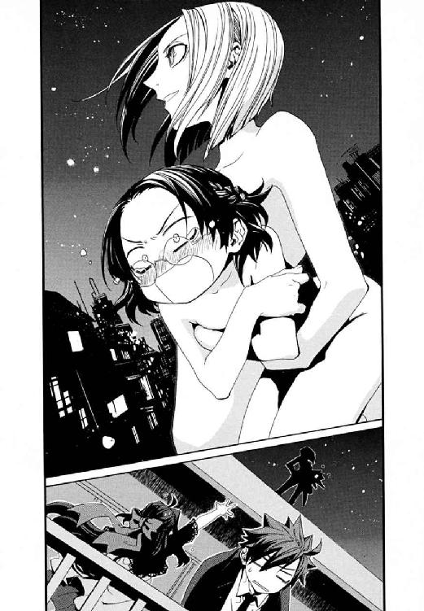
武原仁は、あれからセラがどうなったか知らない。
次の日、小学校にきちんと寒川紀子はやってきた。教室でそれとなくその後の顚末を聞き出そうとした仁に、委員長は無垢な微笑みを返すだけだった。彼女の中で、昨日の家庭訪問は、なかったことになったようだった。
もうひとつ奇妙な変化はあった。彼女は、十分以上屋根の上に全裸でいたせいか、もう十月なのに薄着だったのだ。
「寒川、それ、風邪ひかないか」
「まだそんなに寒くないですよ」
紀子は、この世の無常を悟ったように透明な表情をしていた。きまじめな学級委員は、何か壁をぶち破ったようだった。
仁にとっては、騒がしくても毎日が夢のようだった。
その夜、小学校からアパートに帰ると、きずなとメイゼルがちゃぶ台で額を寄せ合って盛りあがっていた。
「なにやってるんだ？」
玄関で靴を脱いでいた彼へ、メイゼルが紙の束のようなものを示した。きずなが転がりこんできて、監視でメイゼルがやってきた日に届いた写真だった。仁が《公館》を解雇されるまで入り浸っていた十崎京香の家で撮ったものだった。
「十崎さん、どうしてるでしょうね？ お酒ばっかり飲んでないで、ちゃんとごはん食べてるでしょうか？」
写真の中の記憶より、現実の彼女たちは複雑だけれどあたたかかった。
「そういえば、前に夜逃げして来た内藤たちは、もう東京を離れて暮らしてるらしいな。十崎事務官が便宜をはかってくれたんだってな」
今日の夕方、刻印魔導師内藤サミュエルから、仁の携帯電話にお礼のメールが届いた。八咬誠志郎がこの部屋に来たとき、仁が京香あてに手紙を書いたことへの礼状だった。仁は、書類上だけだが、社会に定住した刻印魔導師たちの監督者だった。《公館》周辺が戦場になるかもしれない今、厚かましくても、内藤サミュエルたちの身を案じてよいはずだった。
ジャケットを脱いで、仁はアパートの空気にほっと落ち着いた。小学校の教師も専業になると、体育祭の準備など行事で仕事は忙しくなり帰りも遅くなってきた。夜の八時を越えた食卓には、たこのうま煮となすの肉詰め、かぶの漬け物、そして小松菜と油揚げの煮浸しが彩りよく並んでいた。大量にネギを盛った納豆のどんぶりが添えられている。メイゼルも最近、ネギがあれば納豆をちょっとだけ食べられるようになった。
きずなが座布団を立って、彼のそばまでやってきた。
「あ、上着貸してください。掛けちゃいますね」
うれしそうに目を細め、彼女が仁の上着を受け取ってくれた。いそいそと、部屋の鴨居にえもん掛けをかける。
「ありがとうな。そんな気を遣わなくていいよ」
「煮麵あっためたら、ごはんにしましょうか」
彼女が、横顔に落ちかかった髪を気にしながら、コンロに火をつけた。今日の汁物は味噌汁ではなく、吸い物仕立ての煮麵だった。
「なんか、いっつも俺が帰るの遅くて、悪いな。きずなちゃんには、冷めてもおいしいもの工夫してもらって」
「えっ......あ、そんなことないですよ！ なにか、も、もう一品作りましょうか！」
台所で家事をするきずなの背中が、いたずら心をかき立てるほど無防備だった。一歩踏み出したらやわらかそうな体に抱きつけると気付いて、仁の心臓が高鳴った。
だから、妙に盛りあがってしまった気持ちを仕切り直したかった。
「きずなちゃん」
すぐそばにいる彼女の体温が、今日はいつにも増してくすぐったかった。顔を見合わせる前から、きずなの頰はまっ赤だった。
「なんですか？」
「ごめん、なんか今日のきずなちゃん。ちょっと薄着かなって」
仁の視線が、彼女の女性らしい肩のラインから、高校生としては立派すぎる胸へと気持ちよく滑った。きずなが、距離の近さに固まった。疲れた彼の体が、妙なスイッチを入れてしまいそうだった。
「......せんせ、あたし、一応、神和係官からきずなとせんせの監視しろって命令されてるんだけど？」
ちゃぶ台の前で待っていたメイゼルは、とても機嫌が悪そうだった。
この仁たちの平穏は、次の瞬間終わるかもしれないものだ。もしも聖騎士将軍アンゼロッタ・ユーディナが動きだしたら、すべてが壊れる。《賢者の石》が本当に現れるものなら、ワイズマン警備調査会社や《協会》が本格的に動きだしてもおかしくなかったのだ。
それでも、ちいさな食卓をかこむと、ほっとした。晩ごはんを食べはじめても、きずなのテンションはおかしかった。かいがいしく仁とメイゼルの世話を焼こうとしては、からまわりしていた。仁のために、冷蔵庫から缶ビールまで持ってくる始末だった。
仁の疑問を、メイゼルが解決してくれた。
「きずな。その指輪、いつまではめてるの？」
見ると、きずなの右手の薬指に銀色の指輪がはまっていた。ピンク色のガラス玉がはまったシンプルな指輪だ。
「きずなちゃんがそういうのつけてるの、ちょっとめずらしいな............あれ、それ......どっかで、それってひょっとして、うちかどっかにあった指輪か？」
仁の脳裏に、こっぱずかしい思い出がよみがえった。小学六年生のころ、これと同じ指輪を、幼なじみの十崎京香へプレゼントしたことがあるのだ。一歳年上の幼なじみが中学校に入学して焦っていた仁を、妹の舞花がけしかけたのだ。あのころ、制服姿の京香が、手が届かないほどおとなに見えた。
きずなは照れくさそうだった。
「十崎さんが、昔もらったものだそうです。実は、恥ずかしながら、どんな感じかなーと思ってはめてみたら抜けなくなっちゃいまして！ 石けんつけたりいろいろやってみたけどダメだったので、こう......」
安っぽい指輪が、がっちりと薬指にはまっていた。気付いてしまうと彼女が新婚のお嫁さんのようで、妙に気恥ずかしかった。
けれど同時に、仁の胸には、穴があいたような喪失の痛みがあった。武原家の食卓には、十崎京香はつかないのだ。息をするたび、むせびそうな熱さが押し寄せてきた。
「きずなちゃん、最近、十崎事務官のとこに行ったのか？」
「八咬さんが来たときに、もらったんです。十崎さんに、『あの子たち、こういうのまだスキそうだから、指輪あげちゃって』って頼まれたそうです」
仁たちは戦場から逃げられない。きずなの言ったとおりなら、十崎京香は八咬に指輪をわたすとき、「あの子たち」ふたりのどちらかは指定しなかったのだ。きずなを選んだのは、親友であり専任係官である八咬誠志郎の意志だ。
仁は、同じちゃぶ台についたメイゼルへ目を向けずにいられなかった。選ばれなかった少女は、女王のように傲然と彼の視線を受け止めた。
「あたしの選んだことだもの。せんせ、そんな目であたしを見ないで」
メイゼルは決して弱音を吐かない。だからこそ、誇り高い少女が心配だった。
「おまえ、最近、《公館》で何かあったのか？ つらい思いをしたりしてないか」
メイゼルが、なすの肉詰めに醬油をかけていた。彼女はずいぶん日本の習慣になじんだ。
「せんせは、変なこと気にしすぎだわ。あそこの人たちはいい人よ。あたしだって、ちゃんとやってるわ」
「夏の国城田事件のとき、俺の命を助けてくれたのは、《公館》の事務職員のみんなだ。でもな、メイゼル。人の情ってのはそんな簡単じゃない。おまえが戦いをあきらめてないことを、『武原が辞めたのに何でだ』って不満なヤツもいるだろうさ。善意が思ったような結果をださないとき、好意が憎しみに変わることだってある」
現に、八咬誠志郎は、《公館》に出入りしていたメイゼルではなく、ほとんど面識すらないきずなを選んだ。
環境になじんでも、うまく生きられるわけではない。ちいさなメイゼルは魔法使いであることを貫こうとしている。それは、この世界では、誰もどう答えれば正解かわからない難問なのだ。
「あたしは、望んで刻印魔導師を続けてるのよ？ せんせを、そのせいであぶないことに巻きこんでるんだもの。誰を敵にしたってしかたないわ」
「ごめんなさい。なんか、浮かれちゃって......」
申し訳なさそうに、きずなが、右手の指輪を、左手で覆ってかくしていた。
「いや、いいんだ。俺のほうが悪かった。ごはんはおいしく食べよう。そうしよう」
彼らを本当につないでいる理由は、戦いだった。だから、仁たちはそれから逃げられない。
仁は、テーブルにきずなが用意してくれた缶ビールのプルタブを引いた。気持ちのいい音がして缶が開いた。グラスに手酌でビールをつぐ。小麦色の液体とわきあがる微細な泡が、仁にささやかな特別をくれた。
仁はビールを飲もうとグラスをつかんだ。そして、手を止めた。食事中のメイゼルが突然立ちあがったからだ。そして、はだしでトコトコと台所へ行くと、グラスを持って戻ってきた。
そしてちいさな魔女は、彼へ向かってグラスを突きつけた。
「おいしそうね、せんせ。あたしにもちょうだい」
仁の答えなどひとつしかない。
「ダメだ」
「どうして？」
「あたりまえだ。子どもはそういうことしちゃダメに決まってる」
けれど、メイゼルは胸を張ってこたえたのだ。
「おとなはみんなやってるわ。せんせだってスキなんでしょ？ 特別なことなんかじゃないわ。なのに、どうしてあたしはダメなの？」
仁には、ちいさな魔女には、ビールが黄金色の〝おとなの世界〟に見えているように思えた。だが口に含めば、苦いだけだったり舌に泡が痛い意味がわからなかったりするものだ。仁には、そういうことは酒が飲める年齢になってから試すのがよいと思えた。
「飲んでみたら、意外とつまらないかもしれないぞ」
「そんなの、やってみなくちゃわからないわ。......でも、予感がするの。あたし、きっとスキだと思うわ。一度味わったら、毎日だってほしくなるにちがいないって思うの」
「わたしもこないだお酒飲んじゃいましたし、一口だけとか、どうですか？」
だが、ばつの悪そうなきずなの取りなしを、誇り高い魔女は拒絶したのだ。
「きずなはだまってるのよ。かすめ取りたいとか、今晩だけのトクベツがほしいとかじゃないわ。あたしは、堂々と奪いたいの」
ひらべったい胸に手を当てて、メイゼルが主張する。おかげで、お酒を飲ませる飲ませないという話が、妙な雰囲気を帯びてきた。
「......そっか、......メイゼルちゃんの言うとおりだね」
ついにきずなまで立ちあがった。メイゼルより背が高くて健康的な、みずみずしい体の存在感に仁の肺は緊張する。だが、台所をすでに掌握しているきずなは、ある意味メイゼルより容赦がなかった。
「ちょっ、きずなちゃん、なんでこの状況で二本目を持ってくるんだ！」
彼女は、グラスと、冷蔵庫から二本目の缶ビールを持ってきたのだ。
「だって武原さん。いつもどおりだと、答えを出さないで、お酒飲んじゃって問題自体をチャラにしちゃうじゃないですか」
薬指にはまった指輪が、きずなに思ったことを言う勇気を与えたようだった。仁の胃が、きゅうっとひとまわり縮んだ気がした。
仁は、そういう対象ではなく保護者なのだと堂々と返しそこねた。彼は、彼女たちに危険を抱いてここにいてもらっている身だ。保護者面は、さすがに厚かましく思えた。少女たちは勇敢だった。そして、幼くも深刻だった。夏休み前に出会った内藤サミュエルの苦労をしみじみ思った。
「内藤のやつ、魔法使いとこの世界の人間だし、刻印魔導師でいろいろあったはずなのに、よく結婚なんてできたな」
だが、ちいさな魔女は、ぐうの音も出ない正論で彼の胸を貫くのだ。
「つらい決断を、きちんとやったからに決まってるでしょ。......本当にせんせって、ダメなおとなだわ。いつまでも、何も失わずにいられると思ってるの？」
仁は、結局、挑発をおとならしく受け止めて、笑い飛ばしてやるしかなかった。彼はメイゼルときずなのコップにビールをついだ。仁は、女の子ふたりを家に泊めているおとなの男で、ニセ教師だ。立場を考えれば道徳から外れていた。それでも、人と人とのつながりは簡単ではなかった。それが誠意の表現になっていたか、また深みにはまる一歩だったか、彼にはわからなかった。
そして、その日の深夜、居間に寝ていた仁は、足下に物音を聞いた。
体を起こすと、トイレにでも起きてきたのか、パジャマ姿の倉本きずながいた。
電気を消した暗い部屋は、虫の声もなく静かだった。青い闇の中、きずながじっと仁を見ていた。暗闇のおかげか、彼女の視線はいつもより率直だ。真っ暗闇の地下迷宮で訓練を重ねた仁には、逆に夜明かりは見通せる明るさだ。
「起こしちゃいましたか。......あ、あの......今日は、ビールのこと、ごめんなさい」
「きずなちゃん......」
ふたりきりで、あまりに静かなのが気まずくて、彼は頭をかいた。きずなは、仁のことばを待っていてくれた。
仁は、今がそのときなのではないかと思った。この平穏が終わる日は、おそらく目前だった。だから、もう先延ばしにはしていられないことはわかっていた。仁は、きずなの養父を殺した。もし彼が戦いで死んだら、六月のバベル事件で起こったことを、きずなに教えてやれる人間がいなくなるのだ。
「きずなちゃん、落ち着いて、聞いて欲しいことがあるんだ」
「あの、ごめんなさい。......わたし、今日はもう寝ますね」
きずなは、メイゼルと寝ている四畳半へ戻ってしまった。
これまでもそうだった。仁が倉本慈雄の話を切り出そうとすると、察知したように彼女は逃げてしまう。きずなは、六月以来バベル事件のことを、仁にたずねたこともなかった。狙われても巻きこまれても、彼女は〝普通の女の子〟でいることにしがみついてきた。
それでも、いつか仁は、つらい真実を伝えなければならなかった。きずなを捕まえてでもそうしなかったのは、仁自身の欲だ。彼ときずなは、ふたりで問題を先送りしてきた。
仁は、天をあおいだ。今の彼は、メイゼルに出会ったころより確実に、甘く、情に流されやすく、そして弱い。
この半年にも満たない時間で、一番〝変わった〟のは、仁自身だったのだ。
†
《至高の人》、聖騎士将軍アンゼロッタ・ユーディナは、超高位魔導師であり、魔法史に残る天才である。
アンゼロッタ以前、神音魔術は、楽器を演奏して奇蹟を引き出すものだった。彼女以後、神音をかなでるものに、完璧なテンポと音程をなぞる電子楽器が加わった。
天才アンゼロッタが、スピーカーから神音を流すことに成功したのは、齢十二歳のときだ。機械による魔法の自動化は神音大系世界を大きく変え、未来を切り開いた。それから十三年のときを経て、彼女はすでに魔法史の一ページである。
だから、アンゼロッタ本人と出会った者は、ほぼ例外なく驚く。彼女が漆黒の長い髪を背中まで垂らした、二十代前半の美女だからだ。女性らしい艶をたたえたつり上がり気味の目尻に、豊穣な太陽のかけらを盗み取ったようなあめ色の瞳。眉は繊細でありながら意志の強さをうかがわせ、肌は健康的な白さできめ細かい。
戦場にあっても鎧すらつけない彼女は、それでも《至高の人》という大仰な二つ名を冠された。《協会》の頂点たる《三十六宮》にも匹敵する、超高位魔導師としての圧倒的な実力をもってである。
「あなたがたの役割と、生存することをゆるされた時間は終わりました。あとは、あなたがたの《神》に救っていただきなさい」
アンゼロッタの声は、聞く者に感情を感じさせない。
《協会》魔導師たちは、彼らが《地獄》と呼ぶ世界を探索するため、日本の外にも多く根城を持っている。そこは太平洋の小島を探索する拠点、フィリピン首都マニラ郊外にある広大な邸宅だった。アンゼロッタは、散歩の途中でふらりと立ち寄ったように、ここへ現れたのだ。
「笑っているとは、ずいぶん余裕ではないか？ 神聖騎士団めが、なにが狙いだ」
答えた声は、震えていた。
植民地様式の大きな窓から夕日が差していた。廊下はあかね色に染められていた。アンゼロッタの前には、初老の男が跪いていた。《虹の鷲》とおそれられる、名の通った高位魔導師だった。
鷲鼻のその男の頭からは、陽光と同じ黄金色の光の糸がのびていた。その魔法の糸は、ひざをつく彼から、すぐそばで立ち尽くす中年の女へとつながっていた。広間の中年女から、さらに廊下の奥にいた青年の後頭部へ、そして廊下からつながる大広間へ逃げようとした老人へと────。
魔法弦は、巨大な邸宅にいる魔法使いたちを、数珠つなぎにつないでいた。
アンゼロッタは、成功を確信した落ち着きをもって告げた。
「あなたがたが、あの島で《賢者の石》を探していた成果を、たしかめにあがりました」
「百人を超える高位魔導師が詰めるここへ、ひとりで来たか。鼻歌気分で、笑いながらか！」
鷲鼻の男が、彼女をあざけった。だが、目の下の落ちくぼんだその顔から生気は抜けていた。魔法弦につながれた魔法使いたちが、彼自身も含めて魔法を使えなくなっていると気付いていたのだ。
「よろこび、笑いなさい。あなたの神は、常にあなたとともにあります。そのようにしかめつらをしてはいけません」
光の糸はアンゼロッタの神音魔術だ。使う魔法の大系がちがえば、基盤になる自然秩序のゆがみ自体がちがう。これは、魔法使いの努力でのりこえられるものではない。だが、アンゼロッタの魔法の糸は、相似大系の《魔力》である相似弦にそっくりだった。
「ごぞんじですか？ かつて天盟大系世界は、インマラホテプという魔法構造体に文化をほろぼされました。あれは、犠牲者の視線を媒介にして、犠牲者が観測した人間を次の犠牲者にすることで、無限に犠牲者をふやしてゆくものでした」
邸宅の台所で、書斎で、廊下で、あらゆる場所で悲鳴があがっていた。アンゼロッタの糸が連結に人をつなぐ方法は、彼女自身の言うインマラホテプの感染方法に似ていた。魔法弦は、犠牲者によって感覚された魔法使いを新たに捕獲してゆく。神音大系だからこそ、弦の捕獲方法は、視認することではなく耳で聞くことだ。
──つまり悲鳴をあげた者からそれを聞いた者が魔法弦を結ばれて、新たな感染者となる。魔法は、アンゼロッタが指一本動かさないまま、ついにこの施設の全魔導師をとらえた。
「ごぞんじですか？ 極限まで突き詰めた魔法は、理論上、魔法大系の枠をはみだすのです。しりとりでつなげた《文脈》を索引にして世界を記述する天盟大系が、愛情で人をつなげるインマラホテプを作り得たのも〝それ〟です。別の魔法秩序を、自分の魔法形式で記述することに成功したとき、魔法はその枠を〝はみだし〟ます」
魔法とは、魔法使いが属する歪んだ自然秩序で世界を記述する技術だ。基本的には、それは秩序のゆがみを利用して魔法を引き出すものだ。高度な応用として、結果を先に記して原因となる現象を世界から引き出す《概念魔術》や、術者自身をその魔法によって記述した《化身》がある。その到達点は、全世界をひとつの魔法形式で記述することだ。
そして聖騎士将軍アンゼロッタは、神音魔術に電子楽器という革命をもたらした天才だった。
「ごぞんじですか？ 伝説の《神人》の魔法は、そういう〝ワクの向こう側〟だったのですよ」
この世界には《神人》と呼ばれる、魔法使いたちの伝説があった。最初の放浪者を導いた《門》をはじめとする魔法遺物群を残して消失した、神人の超高度技術が彼を殺そうとしていた。
「......おお、────おおおおおおおお」
《虹の鷲》が、どん欲な研究者の顔で感涙していた。アンゼロッタの魔法弦が、相似魔術に近い性質を持つなら、それは魔法使いにとって奇蹟だった。限定的にしろ、神音大系の自然秩序で相似大系の秩序を記述したということだからだ。それは魔法の常識を逸脱した、学者である高位魔導師たちにとっては指先に太陽を灯すより劇的な、神業の中の神業だった。
「〝これ〟は、《神人》の魔術にせまった存在なのか？ 貴様ら神音大系は、どこまで到達した？」
「《賢者の石》──神人遺物の源流を、有効に使えるところまでです」
〝天才〟アンゼロッタが微笑んだ。はるかな世界の果てに出会ったように、死にゆく男がよろこび、笑った。
《虹の鷲》の頭が砕け散ったのはその瞬間だった。
魔法弦で《虹の鷲》と結ばれていた中年女性が爆死した。そして。連鎖するように、三つ四つ五つ六つ十個二十個五十個と、魔法使いの頭が爆散していった。
──────地獄であった。邸宅には、同じように頭を吹き飛ばされた、無惨な死体が散乱していた。相似魔術の攻撃を受けたように、《虹の鷲》とまったく同じ死に様で、魔法弦につながれた全員が死んだ。《協会》の高位魔導師が百十九名、今この瞬間に死んだのだ。
黄金色の陽光が、なおも窓から差しこんでいた。
高位の神音魔導師は、無音化することで魔法を魔法消去からかくす。首都マニラ郊外の、人と車がひっきりなしに通る道路沿いの邸宅だ。廊下からも、外の喧噪はよく聞こえた。だが、起こった惨劇に、周囲の住人は誰一人気付かなかった。
百十九名の死体が血のなまぐささで邸宅をひたしたころ、玄関のドアが開いた。土臭くも清新な風が吹きこんできた。
「アンゼロッタ様。せめて防弾装備はおつけください」
振り向いた彼女の背後に、四十人もの騎士がずらりと並んでいた。年齢も人種も出自も性別も、装備すらまちまちだ。共通点は、四十人全員が精鋭の上級聖騎士であることだけだ。
アンゼロッタのあめ色の瞳が、夕日を受けて黄金のように輝いた。
「いやです。あれは、いらぬ音をたてます」
わがままのようなことばを、騎士たちは受け入れた。彼女の天才への信頼だけではない。彼女の歩む道こそ聖騎士の理想だと信じているからだ。騎士たちは、彼女が存在するという奇蹟の向こうに、《神》が人を愛していることを確信する。
聖騎士たちと《協会》の魔導師たちは、その目指す場所すらおおきくちがう。《神に近き者》グレンは、後ろに続く者などない険しすぎる孤峰だった。だが、《至高の人》アンゼロッタが切り開いた理論、作りだした電子楽器の数々は、いつか皆が通りはじめる新しい道路だ。聖騎士たちの理想像は、神に近いものではなく、至高だが人間であるものなのだ。
《至高の人》アンゼロッタは、人間のありようの輝かしい見本であり、理想の聖騎士の体現だった。だから機械化聖騎士師団という組織は、彼女の背後に神の愛を見る。聖騎士将軍とは、神意の代行者として、その背後に輝かしい世界を見せる〝変わらぬ確信〟なのだ。
四十人の上級聖騎士たちは、彼女を愛さずにいられなかった。
「ですが、この調子で《協会》本部に突っこんだら、ただではすみませんよ。我らは、アンゼロッタを失った間抜けとして歴史に名を残すのはイヤです」
「ああ......《賢者の石》は、東京が本命でしたね」
《神に近き者》グレン・アザレイは、高らかに宣言した。世界を変えると。
《魔術師》王子護ハウゼンは、予言した。近いうち世界は変わると。
《至高の人》アンゼロッタ・ユーディナは告げる。世界はすでに変わっていると。
聖騎士将軍アンゼロッタと上級聖騎士四十人という戦力は、このままふらりと訪れても魔導師公館を陥とせるだろうほど破格だ。
今年《公館》が処理した事件のうち、バベル事件では四名、国城田事件では二人だけが上級聖騎士だった。それでも騎士隊は、《公館》にとって十分に脅威だったのだ。聖騎士将軍が日本国内で戦場に立つのは、約五十年ぶりになる。アンゼロッタ麾下の機械化聖騎士師団は、一般騎士までふくめれば五千騎におよぶ。
隠れることなく正攻法で、彼女たちは勝つべくして勝つ。核テロ事件で、宿敵たる《協会》と《公館》が分断されている状態で、侵攻を止めることは不可能だ。
だから短い平穏は、アンゼロッタの来訪とともに、巨象に踏まれたように砕け散る。
幾万の魔法世界で、ただひとつ魔法に見捨てられた世界がある。ここは地獄──誰もが変化に押し流され、決断を迫られる場所。
〈ＦＩＮ〉
あとがき
皆様、おひさしぶりです。長谷敏司です。
今回の『円環少女』七巻は、これまでとは趣向のちがう一冊となりました。
七巻は、雑誌『ザ・スニーカー』に掲載した短篇に改稿をくわえ、インターミッションとオープニング、エンディングをくわえたものです。雑誌で読んでくださった皆様にも、掲載時とはちがった雰囲気で楽しんでいただけるのではないかとっ。実は追加部分は、短篇一本追加するよりページ数も手間もかかってたりします。
あとがきも、以下、各短篇について分割してみます。
『しあわせの刻印』 初出『ザ・スニーカー』06年８月号
一年後に集中連載として書いた三本と、あまりにも雰囲気がちがう一本。本編の暗めのトーンに近いこの短篇と、コメディな他三編できれいに分離してしまいました。おかげで七巻作業が一時期カオスでした。計画性がないとおとなになって苦労するという典型です。
作中時期では、『しあわせの刻印』『つながれる愛のしるし』が一巻と二巻の間の話。『薔薇はうつくしく散る』『ハダカのこころで』が六巻後の話になります。
『つながれる愛のしるし』 初出『ザ・スニーカー』07年10月号
集中連載の一本目。明るい『円環少女』にしようと思って、悩んだ末に書き上がったらこんな有様になっていました。掲載時期が六巻発売前で、仁が《公館》から離れることをネタバレできなくて、連載なのにここだけ離脱前（二巻直前）のお話です。
天盟大系の設定を作っていたら、意外と強力になっていて頭をかかえました。〝インマラホテプ〟が、これまでの設定の中で見ると強力すぎるのがいかんのです。
『薔薇はうつくしく散る』 初出『ザ・スニーカー』07年12月号
六巻の推敲作業と並行して書いていたものです。雑誌掲載と六巻発売もほぼ同時。いろいろアレなのは六巻作業の反動だったのだと思います。もうほんとごめんなさい。
五巻のとき、狩猟魔導師中隊が目立たなくなるから設定自体を省略した賢猟大系が、はじめておもてに出てきました。フェイヤーンさん（《学校》でステファンに負けた人）の名前は、今回の巻末資料がなければ出る機会もなかったと思います。高位魔導師より変態のほうが目立つのは『円環少女』らしいですね。
『ハダカのこころで』 初出『ザ・スニーカー』08年２月号
この本が七巻になると確定したのはこの作業中。前巻とイメージ変わりすぎですが、こういう温度差も、『円環少女』っぽいと思うのですよ。とりあえず寒川さんの今後が心配です。
わあ、各話あとがきを並べると微妙になまなましい。今回はせっかく楽しい『円環少女』なのに、あとがきでまじめになってどうしますか。えーと、楽しくなれー、楽しくなれー。
そして、今回は二巻以来ひさしぶりに巻末に設定資料集が入っています。自分で言うのもなんですが、複雑ですね。長く続くと設定分量が増えてしまうタイプのシリーズなのですが、さすがにどうかと思いました。これからはちょっとだけ控えます。
最後に謝辞を。
イラストの深遊さん、連載でもありがとうございました。雑誌連載時のカラーイラストも素晴らしかったです。担当編集者さん、お世話おかけしました。
そして、家族と友人のみなさまへ。本当に、助けていただいてなんとか立っております。
次の八巻では、ついに『円環少女』も、本格的な新展開の開幕です。
早めにお届けできると思われますので、またよろしければっ。
魔法
すべての魔法世界の住民が使う、自然秩序を意志に従わせる技術の総称。この能力を例外なく持つため、魔法世界の住民を魔法使いと呼ぶ。
魔法の起点は、常に観測することである。見て、聞いて、味わいにおいをかぎ、肌で触れることで、魔法使いは故郷の自然秩序を世界に上書きする。
この性質から、それぞれの魔法は、特定の魔法世界の住人にしか使えない。そして、故郷の自然秩序は魔法使いに生涯ついて回るため、魔法はどこの世界ででも使える。
周期運動の不安定な円環大系世界の魔術が、極めても周期性から抜け出せないように、〝秩序の不安定さ〟は各魔法の特質を支配している。この歪みの方向性が、魔法大系それぞれの強みや弱点を決定するのである。
＊
索引型魔法と、魔力型魔法
魔法世界の魔法は、索引型魔法と魔力型魔法との二種類に分類される。
世界を存在させる仕組み自体にはたらきかける魔法を、索引型魔法と呼ぶ。
索引型魔法の魔法使いは、世界の構成要素（あるいは世界に存在しうるあらゆるもの）を引き出し実体化させることができる。
世界のほころびを《魔力》として感知するのが、魔力型魔法である。
魔力型魔法の魔法使いは、まるでみずからが小さな神か秩序かであるかのように、歪みを起点に世界へ意志を押しつけるのである。
《三十六宮》
魔法世界最大の政治勢力である《協会》を指導する、三十六の魔法世界の総称。
転じて、この三十六世界それぞれの代表者たる最高位魔導師たちのこと。
この《三十六宮》は、完全に不動のものではない。二万年近い《協会》の内紛の歴史そのままに種々の変遷を経ている。
最初の内紛は、《地獄》という最良の実験環境に到達して、わずか数百年で起こった。索引型と魔力型にはそれぞれ型によって共通の性質が数多くあり、研究交流がさかんになった。これが、魔法世界を索引型魔法と魔力型魔法の派閥に割り、実験場所を争わせたのだ。
かくして三十六の世界は、索引型の魔法世界が集まった《白宮》、魔力型の魔法世界が集まった《黒宮》に分裂した。
その後、さらに白宮から《蒼宮》、黒宮から《紅宮》が分かれた。現在は、この四宮それぞれが九位の序列を持っている。三十六宮が、合計三十六世界で構成されていること自体は変わっていない。
次の序列は、一九四五年の終戦当時のもの（ただし本作登場の大系のみ）だ。
ここには、神聖騎士団を決起した神音大系が白宮二位に、《連合》の後ろ盾である混沌大系が黒宮二位に記されている。これは、《協会》は分裂していないという、《協会》自身すら信じていない面子を保つためだ。《三十六宮》は、《地獄》での戦争を《協会》内の内紛だとしているのである。
白宮：二位・神音大系
蒼宮：三位・聖痕大系
黒宮：二位・混沌大系／三位・完全大系／六位・相似大系
紅宮：六位・円環大系／八位・精霊大系
七巻現在、《三十六宮》最高位魔導師のうち、本作に登場したのは四人。
スセラミス・エリド・マナ（相似大系：故人）。《九位》（円環大系）。《魔王子》バレアル（完全大系）。《連合》の導師である、アリーセ・バンシュタイン（混沌大系）。
完全大系
《観測した対象に人が頭の中に持ったイメージ》と《現実》の区別が曖昧な世界で発達した魔力型魔法。
完全魔術は、観測者の脳内に見たイメージに《魔力》を見いだし、世界を書き換える。完全大系の魔導師は、世界をこのイメージへ向けて近づけるように魔法を使う。見る魔力自体もイメージだから、彼らは常にイメージの枠に縛られる。
ただし完全大系では、他人にその魔法を直接影響させることはできない。つまり、完全魔術は、人間（同じ観測者）に対して直接はたらくことはない。例外は術者自身だけである。むしろ、完全大系の魔導師たちは、みずからの魔法によって自分自身を歪められる危険に常にさらされている。
このため、すべての完全魔導師は生まれた直後に厳重な封印をほどこされる。この封印は七つあり、魔法使いとして高度な力を認められるにつれて、ひとつずつ解除されてゆく。
七つの封印をすべて解除した者は、《三十六宮》たる最高位魔導師《魔王子》バレアルのほかに、数人生存していると言われる。
化身は《万有なる化身》。完全大系の魔法使いたちは、「彼ら自身の内にこの世界のすべてがすでにあるから、イメージを直接世界に作用させられるのだ」という、完全魔術の発動の仕組みを発見した。そして、自分の内側にある世界を直接引き出し現実世界に直接作用させることを可能としたのである。
本作中、《万有なる化身》は、武原仁との対戦で、内的異世界の端末を引き入れてこの世界を侵食するように使われた。ただ、この異世界の性質自体は侵食だけではなく、武原仁のアパートで武原舞花の断片を捕獲する用途にも使われている。
本作に登場した使用者は、《赤銅の蜂》揚田クラリス（故人）、狩猟魔導師クレメンス・ヤクラ、その長男モーリッツ・ヤクラ、《魔術師》王子護ハウゼン。
賢猟大系
感覚した嗅覚と味覚から奇蹟を引き出す索引型魔術。
みずからの血の味やさまざまな食物の味によっても魔法が発動するため、もっとも早く目覚めた、最古の魔法のひとつだと言われている。
精密ににおいと味を感覚せねば魔法を使えない、不安定な魔法である。だが、嗅覚や味覚は、生物のもっとも原始的な感覚であり、魔法使いの体すらもが臭いを出す。だから、魔法使いたちは、余分な臭いを遮断して感覚に余計な色をつけないことに執心する。
魔法技術としては、身体の強化魔術にすぐれている。
本作に登場した使用者は、《砂の猟犬》瀬利ニガッタ。《学校》での戦闘（→五巻 第二章）で、狩猟魔導師ステファン・ニキに斃された《協会》の高位魔導師、《金鎖の魔狼》フェイヤーン（故人）。
聖痕大系
触覚と痛覚を《索引》として奇蹟を引き出す、索引型魔術。
非常に索引行為がむずかしい魔術であるが、その出力は索引型魔術では最大級。魔法生物の取り扱いにもっともすぐれた魔法のひとつである。
化身は、《まどろみの化身》。聖痕魔導師たちにとって、世界とは「感覚（触覚つまり触れた感覚）されるものの総体」である。だから、彼らにとって、時間とは魔法化した主観時間のことだ。《まどろみの化身》は、この魔法使いの主観時間で、共有されるべき時間を侵食する。つまり、《化身》発動中の魔法使いは、おそろしくゆっくり動く世界の中、自分だけが自由に動き回ることができる。逆に外部から見ると、目にもとまらぬほど聖痕魔導師は加速している。
《三十六宮》の一角を占める聖痕大系の世界は、もっとも過酷な魔法世界のひとつである。
本作に登場した使用者は、《茨姫》オルガ・ゼーマン。
天盟大系
しりとりをして魔法を使う、珍しい索引型魔術。索引にしているものは、マチルダの言うところでは「ことばの魂たる〝行間〟」である。そのために、魔法使いはモノを指さしながらしりとりをすることになる。
ただし、《公館》嘱託の魔法学者である溝呂木京也は、天盟大系の本当の《索引》は、天盟世界の住民たちが持つ共通概念だと考えている。天盟魔導師たち同士が戦うとき、その勝負はしりとりになる。だが、溝呂木は、原理的には、魔法が他者（つまりしりとりの対戦相手）の観測に簡単に影響されるはずがないというのだ。魔法は〝個人による観測〟を起点にするものだからだ。
天盟大系は非常に高度な、一万年以上前には《三十六宮》の一角を占めた魔法大系だった。
彼らは、魔法の〝しりとり〟には多数の魔法使いで物品を共有したほうが効率がよいため、戦術旅隊と呼ばれる集団を単位に行動する社会を構成した。これが《三十六宮》から彼らが転落した元凶となった。天盟世界は豊かだったのに、魔法使いたちは、《地獄》の住人たちのように集団の興奮や熱狂に惑わされたからだ。天盟世界は、例外的な、《地獄》並みに内戦が絶えない魔法世界だったのだ。
そしてついには大魔法構造体インマラホテプによって、魔法文明自体が崩壊する。その後、魔法史に残る大魔法災害による魔法世界自体の封鎖、神聖騎士団による侵攻と占領を経て、ようやく独立したときには天盟世界はすべてを失っていた。作中で聖騎士将軍が天盟魔術のことを知っているのは、この占領期の資料が神音世界に残っているためである。
本作に登場した使用者は、神殿の乙女マチルダ・クリストリッツァ。
《蛇の女王》
地獄特有魔術の一形態。
術者は身体から魔法卵を切り離し、そこから万物とあらゆる現象を生み出す。この魔法卵は、薄く黄色がかった光をはなつ浮遊する泡であり、魔法生物としても機能する。
神和一族の《魔獣使い》が、原初の霧からあらゆる自然現象を作り出す魔法なら、《蛇の女王》の魔法卵は、自然ならぬ奇蹟すら生み出す小さな宇宙卵である。
魔法卵自体は質量を計測できないが、これは大きく重いものも自在に生み出せる。この自在さから、索引型魔術で「ありとあらゆるもの」の概念を召還することに成功すれば、これが現れるのではないかという者もある。あらゆるものに分化する世界の万能細胞だという者もある。
弱点は、《蛇の女王》が魔法を使うための《卵》が、すべてみずからの身体の断片であること。このため、魔法を使えば使うほど術者自身の肉体を削ることになる。これは、術者が外部に《霧》を観測して、操作する《魔獣使い》との最大のちがいである。
本作に登場した使用者は、武原舞花（故人）。
《破壊》
地獄特有魔術の一形態。術者は、観測したあらゆるものを破壊する。
《破壊》の術者に観測されたものは、青い虫食いのような炎をあげて、残骸を残さず〝消失〟する。このため、《破壊》は、観測したすべてを世界から放逐しているとも言われる。
この現象は、魔法を光に分解して世界から放逐する魔法消去と類似性を持つ。このため、この世界の人間が持つ魔法消去能力の謎をとく鍵だともされる。
《破壊》による消失は、どんなものにも一律にはたらくわけではない。モノに対して強く作用し、人体にはもっともはたらきにくい。ともあれ、術者自身の肉体すら破壊する《破壊》の魔法使いは、魔法消去者だらけのこの世界でしか生きられないことは確かである。
この《破壊》は、既知の魔法でもっとも魔法消去に弱い魔法でもある。この世界の住人によく見られているモノには、魔法消去がごくごく微弱にではあるが常にはたらいている。他の魔法にとっては問題にならないこれにも影響を受けるため、《破壊》が道路や家など建造物を無意識のうちに壊してしまうことはほとんどない。
本作に登場した使用者は、八咬誠志郎。
機械化聖騎師団
《至高の人》アンゼロッタ・ユーディナの指揮する、神聖騎士団の部隊。
七巻現在、機械装備を標準運用しているのはこの師団のみである。機械化装備を兵科として取り入れるため、神聖騎士団の試験運用部隊として四年前に発足した。
神音大系は、元は《協会》最古参にして最高位の魔法世界のひとつである。だから、騎士団の組織自体に「個人が神と対峙する」魔法使いの伝統が色濃く残っている。
神聖騎士団の頂点たる聖騎士将軍たちは、《協会》における《三十六宮》のような最高位魔導師たちにあつかいが近い。つまり厳密な軍制の頂点が聖騎士将軍なのではない。むしろ逆である。神聖騎士団では、将軍の下に軍ができる。アンゼロッタが求めたから編制された組織が、機械化聖騎士師団である。
機械化聖騎士師団が実験でありながら師団規模であることは、それに起因する。
騎士数は五千騎。師団として独自の後方支援を持ち、戦略軍として独立して行動する能力を有する。
《聖霊騎士》
神音大系の《化身》である《ゆらぎの化身》は、「術者自身」という神音を奏でることで、術者の分身をつくりだす。術者死亡後も、神音であるこの《ゆらぎの化身》のみが、存在している状態を《聖霊騎士》と呼ぶ。
《聖霊騎士》は、術者本人しか呼び出せなかった《ゆらぎの化身》とはちがい、神音を奏でることで誰にでも召還可能である。ただし、《聖霊騎士》自体が固有の意志を持った観測者であるため、みずから認めた者以外からの召還を拒絶する。聖霊騎士にはかならず四桁のナンバーが振られている。神音魔術で呼び出すとき、実際に索引として触れるのはこのナンバーのほうである。物語七巻時点で神聖騎士団には七〇四五人の聖霊騎士が存在する。
神音であるため、何度破壊されても、召還されるたび完全に元の性質を持って復活する。このとき外傷も精神的損傷も消滅するが、前回召還後に覚えたこともすべて忘れている。実戦における、最短復帰記録（ただし計測されたもの）は、三分十一秒である。
何度でも復活する不死者であるため、敵対者にとっては、実質戦闘がムダな存在である。ただし、《公館》と《協会》の取り決めで、刻印魔導師の戦果としてはひとりぶんに数える。ゼロとすると、罪人たちが聖霊騎士を露骨によけるようになるためである。
この桁数は四桁であるため、何らかの技術革新がない限り九九九九人で定員満数として打ち止めになる。このため、現在は、騎士が新たに聖霊騎士として捧げられることはすくなくなっている。神音魔法研究の最前線は、既存の聖霊騎士を強化し、より強力な力を持たせることである。
一見死角もリスクもないようだが、《聖霊騎士》にも弱点はある。元が《ゆらぎの化身》であるため、同じ聖霊騎士は、世界に同時に一体しか存在できないのである。
《協会》には、これを利用して聖霊騎士を封印する技術が存在する。これは《協会》の限られた場所でしか行えない、他の魔法大系から神音大系の魔法領域に干渉する超高度技術である。このため、《協会》は高位の聖騎士をとらえるとまっ先に《聖霊騎士》を狙う。《協会》にとって、殺せば二度と現れない生身の騎士より、破壊しても何度でも復活する《聖霊騎士》のほうがよほど厄介な相手だからだ。本作一巻でエレオノール・ナガンが捕縛された後、受けた魔法的な尋問も、彼女の聖霊騎士を狙ったものである。
現在時点で登場しているのは、No.3011《一眼怒拳》デューガ。
ワイズマン狩猟魔導師中隊
ワイズマン警備調査会社の編制する戦力の総称。
銃器を使った戦術を特徴とする。ただし、この世界の軍隊のように、組織を前提とした戦闘をするわけではない。銃器を持って戦闘をする魔法使い集団と言ったほうが正しい。
部隊名はあくまで看板であり、中で戦っている魔法使いたちの素性とはあまり関係がない。東京地下核戦争では、地下都市住民がワイズマン狩猟魔導師中隊として戦っていた。
ワイズマン警備調査会社は、報酬を受け取って、この狩猟魔導師中隊を戦力として貸与する。中隊は、魔法使いが安全に射撃できる弾丸《魔法使いの弾丸》を使用する。ワイズマンにとって狩猟魔導師中隊は、この《魔法使いの弾丸》を売り込むためのアイコンでもある。
六巻時点までの中隊長は、《魔術師》王子護ハウゼン。
カバー・口絵・本文イラスト／深遊
カバー・口絵・本文デザイン／中デザイン事務所
円環少女
⑦夢のように、夜明けのように
長谷敏司
平成25年9月1日 発行
発行者 宍戸健司
発行所 株式会社角川書店
〒102-8078 東京都千代田区富士見2-13-3
http://www.kadokawa.co.jp/
(C) Satoshi HASE 2008
本電子書籍は下記にもとづいて制作しました
角川スニーカー文庫『円環少女 ⑦夢のように、夜明けのように』平成20年3月1日初版発行